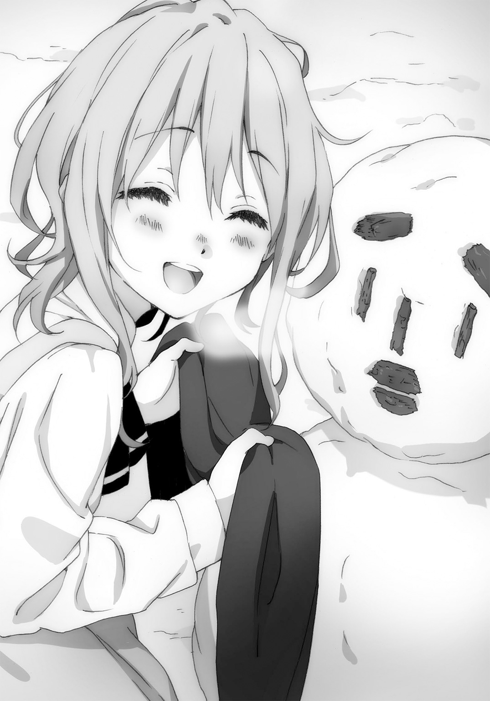
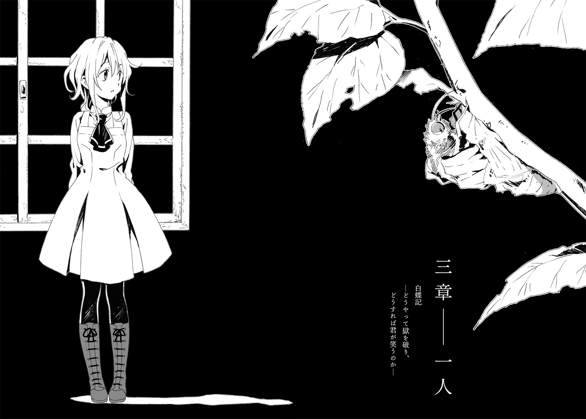

| 白蝶記 ―どうやって獄を破り、どうすれば君が笑うのか― | |
| るーすぼーい | |
この本は縦書きでレイアウトされています。
また、ご覧になる機種により、表示の差が認められることがあります。
 ダッシュエックス文庫DIGITAL
ダッシュエックス文庫DIGITAL
白蝶記
―どうやって獄を破り、どうすれば君が笑うのか―
るーすぼーい
弟へ
お前とこの交換日記のようなやりとりを続けてもうどれくらいになるだろうか。
いま、例の仕置き小屋からこれを書いている。
お前も何度も入れられている、凍える隙間風が入りこむ木造の独房だよ。
暗い部屋で、備え付けの便器の異臭だけを嗅いで過ごす夜はたまらないよな。もっともハエのわく夏場よりはましだけれど。貧相な毛布にくるまって、死なないように朝を待てばいい。眠くなったら気をしっかり持って、腹に力を込めるんだ。腹さえ温めておけば、寒さで手がかじかんでも、歯がガチガチ鳴り出してもどうにかなる。
でも、お前には二度とこんな思いはさせない。
くそったれの教団の連中が懲罰房だの、指導部屋だのと呼んでいるこの小屋は、ドアを通らずに、脱出できるとわかった。
もし、またお前がここに入れられたら、ベッドの下を見てみるといい。床板が外れるから。その先の地面はぽっかりとえぐられていて驚くだろう。ちょっとした短いトンネルになっているんだ。
おれが開通させたわけじゃない。先人が、きっと食器や手を使って、命がけで土を掘り返したんだ。兄ちゃんは床板の不自然な切り跡に気づいただけだ。
でも穴を這って進んでみて、脱出は断念せざるを得なかった。
なぜならば、トンネルは先に進むにつれて狭くなっていたからだ。下に降りて二メートルほど進んだ先で、穴はおそらく独房の裏手に昔からあった枯れ井戸に出る。トンネルの横穴と井戸の縦穴がぶつかる形になるわけだけれども、井戸の壁として使われている岩の隙間をどうしても抜けることができなかった。
トンネルを掘った先人はきっと、お前と一緒で、子供だったのだろう。兄ちゃんの体格では井戸に差し込む月明かりを拝むのがやっとだった。
お前ならきっと逃げ出せるはずだ。
井戸には隙間から伸ばした手が届くところまで雪が積もっていたから、底に落ちる心配もいらない。むしろ、地上へと這い登るときの足場になってくれるだろう。とにかくあの岩と岩の隙間さえくぐり抜けられれば、あとはお前の自由だ。知っての通り、塀には雪が積んである場所があって、簡単に越えられる。
おれのことは気にするな。
せめてこういうときくらい、かっこつけたいんだよ、わかるだろ？
こういうときだからこそ、自分のことを棚上げしてちょっとお前に言っておくぞ。
お前は優しすぎるんだよ。
これから先、お前にどんなつらいことがあったとしても、おれのことは考えなくていい。
おれはもうどうなるかわからないけど、なにか絶望しかけたら、思い出してくれ。戦うということを。お前のなかの熱いものをおれはよく知っている。いいか、この言葉を覚えておけ。お前がおれの幸せを願うように、お前が幸せであることが、おれの幸福なんだ。教団の馬鹿どもに、そう突きつけてやれ。
だから、おれはいつだってお前の味方だ。
なにがあってもお前を許す。たとえ世界中の人間がお前を責めるようなことがあったとしてもだ。だからいつでも会いに来い。あきらめるな。おれもあきらめないから。
こんな兄ちゃんを慕ってくれてありがとう。本当の兄弟でもないけれど、関係なかったよな。いつも、感謝していたよ。いつも、いつも。
ごめん、もっといい言葉がないか考えてるんだけれど、ちょっと眠い......。
会いたいよ、また三人で......。
１
ほのかに点った電球だけを頼りに、本を読んでいた。陽咲からずっと借りているハードボイルド小説だ。壁を背に、毛布を膝に、朝夕を忘れて読みふけっているうちに、差しこむ真冬の隙間風は気にならなくなっていた。腹の奥、体の芯はむしろ熱かった。自分がなぜここにいるのか。施設の消灯時刻を過ぎて兄弟と遊んでいたという理由だけで、なぜ懲罰を受けなければならないのか。窓もない狭く寒い小屋に軟禁されて、おそらく三日ほどたっている。おれは慢性的な憤りを覚えていて、小説の字面を追えなくなることすらあった。怒りと寒さに想像力がおかしくなったのか、物語のヒロインを陽咲に重ねていた。陽咲に会って、なにをするでもなく寄り添いたかった。寂しがり屋みたいでなんだか情けない。それもこれも全部小倉のせいだ。次にあの男が来たら、必ず嚙みついてやる。
時間の感覚はぼやけていたが、報復の機会はわりとすぐに訪れたように思う。まず小屋の外で雪を踏みつぶす音があって、慌てて陽咲への気持ちと小説をカバンにしまっていると、南京錠を外す音が聞こえ、やがて出入口の木戸が開け放たれた。夜の新鮮な冷気が室内に広がる。
「反省したか、旭クン？」
小倉がのっそりと入ってきた。いつ出くわしても、熊みたいに大柄な男だ。自分だけ厚手のコートを着込んでいる。おれの目をいびるように懐中電灯を向けてきた。
「喜べ。ここから出してやる」
おれは壁に手をついてベッドから身を起こした。床に足をついたとき、寒くてずっと曲げていた膝がよれそうになった。何か言い返してやろうと思って口をあけると、からからに渇いていた喉が埃っぽい部屋の空気にむせた。
「おいおい、ちゃんと飯は出してただろ？」
日に二度のパンと、牛乳だった。あからさまな嫌がらせで、今日の夕食は、出ていない。
「ストーブもつけろよ。凍死体の処理なんかしたくねえんだ」
部屋の隅にある古びた石油ストーブは、日が落ちたころから油を切らしていた。
「言っとくがな、旭。これは世間でいう虐めとかそういうんじゃない。ああいうのはテレビドラマだけの出来事だ。うちの教団が運営する児童養護施設は子供に優しいと評判だろ。こりゃ、つまり、修行なんだよ。親もないお前が少しでも神様に近づくために必要なんだ。だから施設が悪いとかおかしいとか、そんな噓を学校の先生に言ったりしちゃだめだ。わかってるよな？」
おれは言った。
「学校は冬休みだし、施設の悪口は言わない」
「そう、それでいいんだ」
「でも、お前のやったことは、教団の上の人間に言う」
小倉が、てめえ、と吐き捨てた。てめえ、旭。旭、てめえ。てめえとおれの名前をセットにして、小倉はいつも苛立ちに拍車をかける。
「誰にもの言ってるのかわかってんだろうな？」
「施設の職員様だろ。怪しげな宗教団体の下っ端でもあって、仕事はおれたち兄弟をいびること」
「兄弟？」
鼻で笑われた。
「ああ、あの樹って泣き虫のガキか。本当の兄弟でもねえのに、兄弟とか呼んでるのかよ。いいねえ、かわいそうだねえ。旭と樹と陽咲だったか。三人はいつも一緒だもんな？」
ふと、樹と陽咲の顔が脳裏をよぎる。とりわけ陽咲の顔が笑っていて、胸が苦しくなった。
「じゃ、陽咲は妹か、あ？」
その名前を呼ばれるだけで、汚らわしい気がした。小倉の笑みが嫌らしく広がる意図を、おれは理解した。
「陽咲や樹には何もしてないだろうな？」
「どうかねえ。お前らは九時を過ぎて部屋で騒いでたわけだし、連帯責任だろ？」
「陽咲はいなかった。関係ない」
「そうかいそうかい、かっこいいねえ。覚えておくよ、お前のしつけ方を。だから、お前もこんなことを上に言うなよ。かわいい陽咲ちゃんがどうなるか想像してみればいい」
殺してやりたくなった。とたんに体から血の気が失せていって、冷静にいま殺したらどうなるのかを考えた。どうしたら、この男を殺せるのか、その殺害方法も......。
小倉が半身を引いて小屋の戸口をあごで示した。
「出ろよ。忘れ物すんなよ」
見れば、小倉がいつものように持ち込んだ紙袋から一升瓶を出していた。制服のネクタイをほどき、ワイシャツの襟を緩ませた。毛むくじゃらな胸板の上に、弧を描くようにして銀色のネックレスが覗ける。相変わらずのクズ職員だった。施設の中では表立って酒を飲めないものだから、こうして人目を忍んで一杯やる気らしい。おれを小屋から出す気になったのも、酒が飲みたくなったからか。
「なに見てんだ、おい。こいつは役得だよ、役得。てめえらみたいに手のかかる子供を見させられてるとな、いろいろ溜まるんだよ」
おれはうつむいて、持ち込みが許されていたカバンを手に、小倉の脇を抜けた。
「旭、施設を出ようだなんて思うんじゃねえぞ。お前の帰りを待ってるヤツなんかいねえ。お前は捨てられたんだからな」
自分の憂さ晴らしに一生つきあえと、小倉は言っていた。
背中を押されるように外に出た。十二月の夜風に身が縮こまる。施設は北海道の寒村にあって、空には無数の星が瞬いていた。見渡す限りの闇のなか、敷地内に点在する外灯の明かりが白く浮かび上がっている。地面に浅く積もった雪を踏みしめて、〝懲罰小屋〟から普段寝泊まりしている建物を目指した。歩いて十分ほどだろうか。物心ついたときからここで暮らしているためか、道に迷うことはなかった。独居房から雑居房に帰るようなものだ。親はいない。けれど、おれの帰りを待ってくれている人が、少なくとも二人いる。
一人はむしろ、迎えに出てきていた。
建物の玄関口で、ガラス戸にへばりつくようにして、こちらを眺めていた。近づいてくるおれの姿を見つけたのか、ドアを押し開いて、外に勢いよく飛び出してきた。弾んだ声で名前を呼ばれた。背伸びをするように手を振りながら、駆けてくる。
おれも自然と小走りになっていた。
まず白い歯が見えた。だぼついたマフラーの上で丸顔が笑っている。待ちくびれたぞ、とくりくりした瞳が輝いている。陽咲だ。
「おかえり、待ってた、会いたかった」
抱きしめられるくらいに体の距離をつめてきた。長い休みに入ったというのに、施設が用意した制服姿。その上に、丈の短いコートを羽織っている。スカートの下は薄手のタイツだが、寒さを感じさせないのは、陽咲の動きがいつも子犬みたいにちょこまかとしているからだ。いまも、おれの手を取ろうと躍起になっている。笑顔を見せつけるようにあごを突き出し、邪険に扱ったが最後、人の周りをくるくると回りだすのはこいつの癖だ。出会ってもう四、五年になるが、いったい何がそんなに楽しいのか、というのが陽咲に対するぬぐえない印象だった。
「独房での暮らしはどうだったの？ 楽しかった？」
普通ならもっとネガティブに心配してくれそうなものを、楽しかったかとつけ加えて聞いてくるあたりが、陽咲らしいと思った。変に気を遣われたり、同情されたりするより、よっぽどいい。
「本を読んでたよ」
「あのね、旭くんがいない間に、また本を取り寄せてもらったよ。いまからお部屋で一緒に読む？」
「うん、でも、腹、減ったな。飯の時間は過ぎてるよな？」
「台所、貸してもらえないかな。つくるよ、わたしが」
「やめとけよ。前に忍びこんで、反省文書かされただろ」
施設では六時を過ぎれば夕飯にありつけない。なにをするにも規則で、破った者には相応のお仕置きが待っている。罰せられ方は子供によって、担当の職員によって様々だった。陽咲からよく借りている本のおかげもあってか、改めて、世間一般とは違う、異様な児童養護施設なのだと肌で感じる。
陽咲にも、親がいなかった。おれと同じく、小倉に目をつけられている樹にも。
本で知ったが、いわゆるまったく親のない子供というのは、現代の普通の施設ではめったにいないし、いても親類縁者の誰かが引き取りに来るのだという。しかし、この雪深い施設では、なんらかの家庭の事情で親元を離れて生活している子供を見たことがないし、里親が迎えに来たなんて話は聞かない。いちおう、高校を卒業するくらいの年齢になれば、卒園となるようではあるが......。
「旭くん、寒くない？」
陽咲が吐息を感じる近さで、小首を傾げていた。
「いつも思うんだけど、、お前、ちょっと近いんだよ。いつも......」
「くっついてたほうがあったかいよ」
「歩きづらいだろ」
ぶっきらぼうに言ってしまって、ちょっと後悔した。しかし、陽咲はいたずらっ子のように笑みを深くする。
「樹くんがね、いま書いてる小説の主人公、旭くんなんだって」
「なんだそれ」
「それは読んでみてのお楽しみ。わたしも、ああ、なるほど、ふむふむ、そうだな、旭くんだなっ、ツンツンしてるしなっ、北海道のジャックナイフって呼ばれてるだけあるなっ、て思ったよ」
「誰がジャックナイフだ」
しゃべりながらころころと変わる陽咲の表情をぼんやりと眺めていた。
気づけば、不意打ちのようにさっと手を引かれていた。陽咲はいつの間にか横隣りになっていて、おれの腕を振り子のように前後させる。もう一方の手で、陽咲はまた大仰に建物のドアを指さした。
「帰ろう、旭くん」
まったく子供っぽくて、思わず笑ってしまう。小倉への恨みも、二昼夜にわたる軟禁生活の疲れも、陽咲といると忘れそうになる。
中に入っても、がっしりと握られた左手は、鼻歌を歌う陽咲に振り回され続けていた。コートの袖口から、陽咲の手首が覗けた。手の甲に差しかかるあたりにアザはまだあった。青黒くて丸いアザは、おれの左手首の付け根にもある。陽咲は右手。同じような場所に瓜二つのアザがあって、おれたちは親しくなった。双子なんじゃないかと言ってみたとき、陽咲は自分こそがお姉さんだと主張し出して、そのここぞとばかりな感じに、また笑わされた。
２
目を覚ますと、白んだ窓の向こうで雪が斜めに降っていた。寝ぼけていたせいか、〝懲罰小屋〟の硬いベッドで眠っていたのかと、飛び起きてしまった。
八畳ほどの広さの部屋だ。天井から笠つきの蛍光灯がぶら下がっていて、床にはところどころ破れた赤いじゅうたん。壁際に勉強机が二つ並んでいて、樹の書きかけの原稿がある。二段ベッドの上からスプリングの金属が軋む音がした。寝坊助の樹が寝がえりを打っている。慣れ親しんだ朝の光景に、ほっと胸をなでおろした。暖のないあの牢獄で朝を迎えていたら、死んでいたかもしれない。
七時の朝食までまだ時間があった。昨日の昼から何も口にしていない。いったん部屋を出て、共同の洗面所で顔を洗って、水をたらふく飲んだ。
冷え込んで、しんとした廊下を戻る。木造りの床板が足を繰り出すごとにぎしぎしと鳴り響いた。
施設は二階建てで、年齢にもよるが一階には女子、二階には男子と、おおざっぱに部屋分けされている。出会いの記憶は曖昧だったが、樹とはずっと同じ部屋で暮らしている。陽咲よりも縁は深い。幼いころからそばにいるのが当たり前だった。ともに寝起きして、施設の悪口を言い合って、陽咲から借りた本を読みふける。
つきあいが長くなるうちに、樹がちょっと他の子供とは違うと気づいていった。樹はあまり学校に行かない。外で遊ぼうとしない。はじめはそれが不満で、問い詰めてしまったこともある。けれど、季節が変わるたびに寝込んでいる姿にだんだん慣れてしまった。目の離せない存在として、おれは樹に接している。
部屋のドアノブに手をかけたときだった。
「わああっ！」
樹の悲鳴に急かされるように室内に入った。
「どした、だいじょうぶか？」
ベッドの上で、樹は呆然としていた。呼吸も荒い。肩越しにこちらを振り返る。怯えたような目がおれを認めて、少しずつ落ちついていった。
「ご、ごめん。ぼく、また......」
「変な夢？」
「うん、ごめん。起こしちゃった？」
よくあることではあった。悪夢にうなされるような声。施設では、樹に限らず耳にする。不思議だったので、一度陽咲と調べてみた。すると、後遺症とか、心的外傷といった言葉にたどり着いた。実感がわかないものの、原因はきっと、樹に残っている両親の記憶なのではないかと推察している。汗をぬぐいながらベッドを下りる樹は苦しんでいる。そういうとき、おれは少し残酷な気持ちになる。親なんていなくてよかったと。
「熱はもうないのか？」
腕を伸ばして樹の額に手を当てた。実際に熱を測れているのかわからないが、触れてやると樹は安心したように目を細める。
「昨日、ごめんね。陽咲ちゃんはずっと待ってたのに、ぼくだけ寝てて」
「おれだって帰ってきてすぐ寝たから。陽咲は、まあ、待ってたっていうより、暇だったんだろ」
「でも、ぼくのせいで、小倉に......」
「なんてことなかったよ。というか樹だって、ちょっと遅くまで原稿書いてただけじゃないか。それを小倉の野郎が騒いでるとか難癖つけてきやがったんだ」
三日前の晩、おれは本を読んでいて、樹は机に向かっていた。九時を過ぎて、小倉が断りなく部屋に入ってきた。酒臭かった。何かしゃべり、怒鳴り、樹の座っていた椅子を蹴飛ばした。おれは小倉の腹を殴り、肩口を殴り返され、何度目かの〝懲罰小屋〟行きとなった。
樹はなにも悪くないのに、まだ眉間に申し訳なさそうなしわを寄せている。
「ありがとうね、いつも。ぼくに代わって」
「前は樹がよく小屋送りになってたじゃないか」
おれに代わって。
「小屋の中で日記、書いた？」
樹の顔が期待に少し明るくなった。
「すまん。ちょっと本を読んでる方が面白くてさ。忘れてた」
枕元に投げ捨ててあったぼろぼろの布カバンからＢ５サイズのノートを取り出して、樹に手渡した。
「あらら、読みたかったなあ」
「とくに何もなかったしな。やっぱり日記って難しいよ。ネタがなかったら書けない」
「でも、書いてると落ちつかない？」
「わかんないな」
定期的な日記の交換はおれたちの約束事だった。とくに二人が離れ離れになったとき、お互いの日々を記し合う。一年前に、作文好きの樹が提案してきたのだった。口ごもりがちで、人と目を合わせて話せない樹は、紙面のなかで自分を表現するのがうまい。いつだったかささいなケンカをしたとき、樹は十枚に及ぶ原稿用紙でもって、自分のなにが悪かったのかを語り、おれのいいところを探り、仲直りがしたいと結んでいた。長ったらしくて自分を責めるような文章に、おれは樹に何か欠けているものを感じた。それを知りたいと思って、不得意な日記を書いてるし、樹もどうやらおれの内面を知りたがっているようだった。おかげでおれも読書が好きになったのは否めない。
「ねえ、施設を出たい？」
樹が着替えながら、何気ないふうに言った。
「なんで？」
「だって、小倉もいるし」
「あんなヤツにびびらなくていいだろ」
「今日ね、嫌な夢を見たんだ。みんながばらばらになっちゃう夢。なんだか怖いな」
「樹はどうしたいんだ？」
いつになく不安げな樹に、腰を据える話かと、おれはベッドに足を投げ出して座りこんだ。
樹は頭からかぶったシャツの裏表に気づかないくらいに、しばらく考え込んでいた。
「ぼくは、ここにいるよ。ここでも、やりたいことできるし」
「やりたいこと......」
ふと、樹の机に目がいった。すぐに思い当たる。
「小説か。進んでるんだな」
書きかけの原稿の山があった。
「うん、それが、ちょっと詰まってるんだ」
「またか」
よく続くものだと思う。どこかに提出しなければならないわけでもないのに、暇があれば鉛筆を動かしている。
「陽咲ちゃんにまた相談しようかな」
「もう七時だし、飯食ったあと陽咲も呼べばいい。役に立つかどうかは知らないけど」
なんとなく話が逸れて、思い出したように腹が鳴った。
裏返しのシャツを指摘して部屋を出ようとしたとき、樹がおれの肩を背後からつかんだ。
「あのね、ぼくのことは気にしなくていいよ」
肩越しに振りかえると、怯えたような樹の顔があった。おれの肩を強くつかみすぎたかと、おどおどと手を腰の後ろに隠す。そんな遠慮がちな逡巡が伝わる。おれはうまく笑ってみた。
「出ていくつもりはないよ。黙ってても三度の飯が出て、風呂にも入れるし、洗濯だって施設がしてくれる。あと、陽咲もいる。めんどくさいヤツだけど、本を貸してくれるからな。樹が書いてる小説だって読みたいし」
言うと、樹は安心するでもなく、なぜか観念したように力なく笑った。
「本当にいいの？」
「どうしたんだよ」
訊くと、樹はちょっと待ってと、机の引き出しを開けた。これ、と突き出されたのは、一通の封筒だった。樹はためらいがちに言った。
「昨日の朝かな。部屋のドアの隙間からこの封筒が滑りこんできたんだ。なんだろうと思って開封してみたら、ごめんね......」
封は切られていた。しかし、謝られる意味がわからない。樹の強張った表情に首を傾げながら、中を覗いた。一通の便箋が入っている。手紙か。
――アサヒちゃんですか。私はあなたのお母さんです。
冒頭の一行。文字がただ頭に入ってきた。
「誰だこいつ」
おれはそう言ったと思うけれど、うまく声にならなかった。
朝食は決められた席で、施設の子供がそろって一斉に食べる。
箸を取る前に、お祈りを強制されるのだけれど、明らかに変なのだ。右手を高くあげ、宣誓するようなポーズで陰気臭い言葉を唱える。神が、天が、そして死が。おれたちはどうせ死ぬのだから、死ぬ前にイイコトをしよう。まぁそんな解釈だった。物心ついたときから繰り返させられていたので、違和感を覚えるには時間がかかった。
施設は宗教団体が運営していて、本部は施設のすぐそばにある。人里離れた雪深い山奥に拠をかまえ、外から見ればとても閉鎖的な印象なのだろう。一つの村を丸ごと買い取ったような広大な土地に、いくつかの宗教的な建物や信徒の居住家屋がある。おれが通う学校や陽咲がよく訪れる雑貨店、樹が世話になっている診療所なども教団が誘致したようだ。
一度、樹と外の世界を目指したことがある。教団の村は周囲を峻嶮な山に囲まれた盆地にあって、南には川が流れている。山の麓から蛇行して流れる川は太く、どこまでも果てしなく続いているように見えた。
ある晴れた夏の日、おれたちは施設の塀の前にバケツを積み上げて脱出し、大人の目をかわしながら、川べりをくだっていった。澄んだ空の向こうに鮮やかな緑色をした山々があり、歩いているだけで、よごれた灰色の施設が過去のものになっていくようだった。
日が落ちかけたころ、川の向こう岸に渡る橋に到達した。道端に村の名前が書いてある標識もあった。ゴールだと、樹がはしゃいだ。
けれど、おかしなことが起こった。橋の両端に、白いトタン屋根の小屋があった。軒先に警察を思わせるような赤いランプが明滅していて、おれたちを見つけてか、中から大人が飛び出してきた。白い制服と制帽に身を包んだ男たちは、率直にいって怖かった。彼らはおれたちの前後にはりつき、何かの確認のためにしきりに無線で連絡を取っていた。名前を訊かれたあとは、有無を言わさず車で施設まで送り返された。車の中でおれがわめいても、樹が謝っても、彼らは応じなかった。ただ一言、逃げるな、と冷たく頭を叩かれた。
おれはいまよりもっと幼くて、それはただの冒険だった。逃げ出したくなるような重いものは何一つ抱えていなかった。施設に戻ると、当時赴任してきたばかりの小倉に、兄弟仲良く懲罰小屋に入れられた。
失敗に終わった旅だったが、物事を反抗的に考えるいいきっかけにはなった。自分たちがどこにいて、なぜか村を出ようとすると困る大人がいて、そして、なぜこんな場所で生まれ育ったのかと、はじめていもしない誰かを恨みたくなった。
母を騙るくだらない手紙は、食堂に降りてくる前に、部屋のゴミ箱に捨ててきた。
食事中の私語は厳禁だった。五十人近い子供たちが五列にわたる長机に行儀よく座って、黙々と食べている。背筋を伸ばし、まずご飯からと、定められた箸をつける順番に従っていた。嫌いなおかずにわがままを言ったり、デザートの取り合いになったりすることもなかった。おれの隣で、八歳くらいの男の子が、虚ろな目でしなびた野菜を口にしていた。向かいの女の子は、ぼさぼさの針がねみたいな頭から抜け落ちた髪の毛が、いま飲んだスープに落ちていることに気づいていない。
教団の教義や思想のようなものにまったく興味はなかった。興味を持てば取りこまれるような危うさを感じとれるだけ、おれはまともなのだと思いたい。
部屋に戻ると、ひと息つく間もなく陽咲が訪ねてきた。ドアの隙間からぬっと顔を出し、ご機嫌をうかがいに来ました、と謎に思うくらいに丁寧に言うと、滑りこむようにして入ってきた。
「樹くん、小説どうですか？」
樹はすでに机に向かっていた。手紙を投げ捨てたおれを気にしてもいた。あのまま二人きりだったら、気まずい空気が流れていたかもしれない。樹は陽咲の気持ち悪いご機嫌うかがいに合わせてか、顔をひきつらせた。
「ちょうどよかったよ、陽咲ちゃん。ちょっと相談したいことがあってね」
内気な樹が施設内でまともに笑顔を向けられるのは、おれと陽咲くらいだ。樹が気兼ねなく話せる相手として、陽咲はありがたい友達だった。
陽咲は樹の脇に立って、原稿を読み始めた。
「ハードボイルドだねえ」
感に堪えぬようにしみじみと言った。目をつむり、天を仰ぐ。しばし感慨にひたりきって満足したのか、原稿用紙を手にわざと低い声で朗読する。
「『ナイフが刺さっていた。おれの横腹。遅れて命が裂かれるような痛みが全身に広がる。目の前がぶれる。力が抜け、膝が笑った。倒れまいと、喉奥からこみ上げる血を飲んだ。』」
たまらずおれは言った。
「陽咲が読むとギャグになるな」
「ああ、でも、血を飲むとか、ちょっとやりすぎかな」
樹は照れくさそうにうつむいた。
「かっこいいねー。これがやっぱり旭くんだね。なるほどなるほど」
陽咲の感想に、樹は乾いた笑みをこぼす。
「陽咲ちゃんみたいな女の子も出てくるよ」
「本当？ クールに、クールなお姉さんでお願いします」
「ごめん、五歳の女の子。主人公の妹でね、さらわれちゃうんだ」
「五歳......」
え、と眉根を寄せる。喜んだりがっかりしたりと陽咲は忙しい。
「あのね、陽咲ちゃん。そこからね、主人公が悪者をやっつけるんだけどね、そこで何かひと言欲しいんだよ」
「ひと言？」
「決め台詞みたいなの、ないかな？」
陽咲はうなずくと、口をガチョウみたいに尖らせて、そのままベッドに腰かけているおれに視線を移した。
「旭くんはどう思う？」
「知らないけど、この紋所が目に入らぬか、とかでいいんじゃないか？」
「うん、それだと、時代劇っぽくなっちゃうから」
陽咲が手を上げた。
「じゃあじゃあ、このレザージャケットが目に入らぬか、っていうのは？」
「う、うん、そうとう高いんだろうね......」
「ダメかな。ハードボイルドじゃない？」
やはり、陽咲は役に立たなそうだ。それでも好きなことを心地よく話せるからか、樹から朝方の暗い気配は吹き飛んでいた。おれは二人の子供っぽいやりとりを眺めるのをやめ、壁沿いにある本棚から読みかけの小説を取った。
「ねえ、旭くんも読んでみたら？」
三十ページほど読み進めたところで、陽咲がおれを見下ろしてきた。
「完成したら読むって約束なんだ。だよな、樹？」
「うん、まだ見せられないかな」
「どうして？」
おれが横から口を挟んだ。
「そりゃ、恥ずかしいからだろ」
怖いからだと、樹は言っていた。自分は小説の登場人物のようにかっこよくない。ぼくがこんなだと知ったら、きっと読んでいる人はがっかりする。もし、おれにつまらないと言われたら、悲しい。ふさぎこんで起こってもいない未来を恐れる樹を、陽咲は知らない。
「いいな、二人は交換日記もしてるしな。わたしも混ぜてほしいな」
「お前はだめだ。あれはおれと樹の『悪童日記』なんだ」
「そういえば、日記交換はじめた当時はまってたね。ぼくもあのお話好きだな」
「へええ、面白いんだね」
これには驚いた。
「おいおい、お前から借りたんじゃなかったか」
陽咲は首を傾げる。
「そうだっけ。旭くんにはいっぱい貸してるからなあ」
「自分で読みもしないで貸してくれたのか。小遣い足りてるのか？」
施設からは、子供の年齢に応じて毎月一定の小遣いが支給されている。品行方正とはいえないおれたち兄弟は、職員の機嫌によって減らされることもある。
「他に使い道もないしね。旭くんが喜んでくれるなら、いいかなって」
こっちの心配など意に介さず、陽咲は親指をぐっと突き出し、そのまま自分の胸をトンと突いた。
おれは自分の頰が緩むのを自覚する。嘲笑めいた変な笑いがわいた。
「お前の誕生日いつだっけ？」
「一月十日だよ」
即答したが、すぐに慌てだして身を乗り出してくる。
「え、も、もしかして忘れてたの？」
「別に」
「意地悪だなあ。旭くんの誕生日でもあるでしょ？」
「そうだったか」
何か、やろうと思った。プレゼントというのも気恥ずかしいので、樹から渡させよう。
正午を告げる鐘が鳴った。昼食を済ませると、また陽咲が遊びに来た。夕飯をまたいでもやはり陽咲。そういう毎日を過ごしていた。こっちから陽咲の部屋を訪ねることもある。樹はたまに陽咲に勉強を教えているし、おれが〝懲罰小屋〟に入れられているときは、陽咲が樹の面倒を見てくれている。
「よかったの、手紙」
九時の消灯時刻を過ぎて、樹の声が上のベッドから降ってきた。
「樹こそ、考えたのか。決め台詞」
ふ、と何か存念を秘めた吐息が漏れ聞こえた。
「アサヒちゃんのお便り待ってますって、丁寧な文章だったよ？」
「いたずらに決まってるだろ」
粗末なベッドが揺れる。部屋の暗闇のなか、下を覗き込んだ樹の頭が、黒く輪郭を作る。
「こんなこと、いままで一度もなかったよ？」
「だから、小倉あたりのいたずらなんだって」
「小倉の字はあんなにきれいじゃないよ。見たことあるでしょ。それに、アサヒちゃんだなんて、呼び方するかな。いくらなんでも気持ち悪いと思う」
直筆ではあった。暖房が切られて室内が冷え込んできた。自分がどこかむきになっていると気づく。それでも、期待ににやけるわけにはいかなかった。
「ぼくや陽咲ちゃんに悪いと思ってるんでしょ？」
図星を指されたと、思った。息をのみ、樹の続く言葉を待った。
「もしね、本当にお母さんがいるなら、それは素晴らしいことだよ。ぼくはうれしいよ。きっと陽咲ちゃんも喜んでくれる。ぼくらに気を遣う必要ないよ。そういうのは嫌だよ。うまく言えないから、日記に書いとくね」
読まなくても、すでに樹の気持ちは伝わっている。
空咳を一つ、二つと続けて、樹は訊いてきた。
「ぼくがここに来たいきさつ、言ったっけ？」
「いや」
「お父さんとお母さんに連れられてきたんだ。お父さんが教団の信者でね。親子ともども出家してきたんだって。でも、すぐにお父さんが死んじゃった。はは、なんだか軽いね。それで、お母さんが変になっちゃってね。ちょっと大変だった。もう村を出ていったらしいんだけどね。ぼくがご飯を食べているうちに。カレーライス。どうなのかな、そういうの。お母さん、生きてると、いいけどね」
樹の声は震えていた。深く思い出せばつらい情景が浮かぶのかもしれない。想いもまとまらないのか、話の流れも言葉の選び方も曖昧で、ばらばらだった。
「ご、ごめん、うまく話せてないね」
「いや、わかったよ。樹は耐えててかっこいいな。おれなんか、最初っから記憶ないからさ。なにもつらいことなんてないよ。ほらよく言うだろ。愛さえ知らなければよかった、愛などいらんて。そうだ、これを決め台詞にしよう」
樹が嘆息する。
「ぼくはこれでもきっちりと整理をつけてるんだよ。両親のことね。そう言いたかった」
「だからおれも手紙を読んで返せと？」
「お母さんと話せば、納得いくものがあるかもしれないよ。はじめはいらいらするかもしれないけど、悲しいかもしれないけど、何もしなかったらぜったい後悔するよ？」
あまり考えないようにしておきたかった。自分の出生について納得するとかしないとか、そういう心境になかった。樹が思うほど、おれは寂しくもなければ母親に答えを求めているわけでもなかった。黙っていると、樹の腕の影が下に伸びてきた。ゴミ箱から拾いなおしたらしい。封筒がおれの額に落ちてきた。
「ずけずけとごめんね」
「明日読んでみる」
樹が納得するならと、封筒を枕の下に差し込んだ。
「ああ、でも、陽咲には言うなよ」
知らず、口をついてそれは出ていた。慌てて言い直す。
「陽咲は何かとすぐ首を突っ込みたがるし。おれたちの日記だってからんできたがってただろ。だからあいつが知ったら、妙なことになりそうじゃないか」
「陽咲ちゃんはひがんだり、うらやましがったりしないと思うよ」
「わかってるよ。けど、いたずらされるかもしれないし」
胸がざわついていた。陽咲を冷たくあしらうたびに、後悔するような気持ちになるのはなぜなのか。陽咲のことなんて気にしてないと言いたいのに、どこか誤解もされたくない。いちいち思い悩んでしまう。陽咲はいまごろぐっすり寝ているだろうに、気にしてしまう。おれだけ長い夜を過ごしているようで、めんどくさい。
「寂しい思いをさせたくないんだね。陽咲ちゃん、ちょっと変に明るいところあるし。一人のとき、なに考えてるのかな」
それきり、樹は首をひっこめた。
目を閉じる前に、暗闇に向かって言った。
「おれ、陽咲のこと好きなんだと思う」
「知ってるよ」
「そっか」
「うん」
「手紙のこと、なんかありがとう」
「よかった」
ぽつりぽつりと、会話が続いた。おれの気持ちをただ受け止めてくれる樹は優しい。こういうとき、自分が子供だと思う。気弱な樹を助けている反面、助けられてもいるのだと気づかされた。
３
――アサヒちゃんですか。私はあなたのお母さんです。
突然のお手紙にあなたがどういう気持ちになるのか想像に難くありません。何度となく筆を執るのをやめようと思いました。けれど、あなたの所在を知って、後悔の念ばかりが募り、せめてお詫びをしなければと、いてもたってもいられなくなりました。どうか愚かな母の勝手を許してください。
私は鶴見景子と申します。生まれは四国で、東京の大学を出て、あなたのお父上にあたる方と知り合いました。
複雑な事情がありまして、その男性についてお話しできることはあまりありません。私にしても、理解や納得の追いつかない人物なのです。なぜならば、その方との間にあなたを産んだものの、私はあなたを一度として抱きしめていないのです。
当時の私は体に問題があり、出産の日も朝方からたびたび倒れこんでいました。病院の分娩室に入ったものの、激しい痛みによって意識を失ってしまいました。手術で私のお腹を開いて、あなたはこの世に生まれてきたのです。
あなたとは、それきりなのです。私にとってはなんともおぞましく、恐ろしいお話です。あなたのお父上は、生まれたばかりのあなたをどこかへ連れ去り、産声すら私に届けてくださいませんでした。そういう、男性なのです。何か邪悪で壮大な企みと、企みを実行するだけの力があり、私から喜びを奪うことになんのためらいもないようでした。住む世界の違う人間と申しましょうか。いまとなってはその方がどこで何をなされているのか、わかりません。
その方に捨てられた私は、自力であなたを産めなかった我が身を呪いながら、ずっとあなたを捜していました。警察はもちろん、探偵さんやもっと怪しげな方々にも協力を仰ぎました。長い時間がかかりました。事情が事情ですから、雲をつかむような話だったのです。出産直後に失踪した赤子を捜しています。そう言うと、ほとんどの方は私の妄想を疑います。お父上のお名前をあげると、なぜか捜索が打ち切られることもありました。
十年以上もほうっておいて、本当にごめんなさい。まさかあなたが北国の児童養護施設に入っているとは思いませんでした。しかも、こちらの施設は世間一般の普通の施設とは違う......といってあなたは理解できますでしょうか。両親や、親戚との通常の面会や電話すら一切受け付けていないようなのです。
私は施設を実質的に動かしている教団の内部に協力者を得て、このお手紙を差し出しています。そしてもし、あなたさえよければ、あなたを施設の外に連れ出すというお話もついています。正規の手続きではないので、まだ詳細をお伝えできませんが、よければ考えてもらえますでしょうか。
また、あなたからのお返事も心待ちにしています。
お便りをいただけるのでしたら、毎晩十時に、お部屋の外に手紙を出しておいてもらえますか。私の協力者が回収してくださる手はずになっています。
それではどうか、お元気で。
あなたが無事に健やかに育っているだけでも嬉しく思いますが、許されるならば一目お会いしたいと思っております――
明け方、手紙をさらりと読んだ。内容にはまるで現実味がなかった。おれを誰かと間違えているのではないかという気すらした。要望も唐突で、母への想いに焦がれるどころか、知らない人が、知らない人を相手に必死になっているような気味の悪いものを感じた。
「読んで、どう思ったの？」
樹が起きてすぐに布団の中から感想を求めてきた。
「噓にしては、なんというか派手な噓だよな。どうやらおれは、生まれてすぐに母親から引き離されたらしいぞ」
なぜ、なんのために、と尋ねても、この手紙の差出人は答えを持っていないのかもしれない。
「施設の外に連れてってくれるって」
応援してくれるつもりなのか、樹の声がちょっと弾む。
「よかったね。お母さん、一緒に暮らしたいんじゃないかな」
「待てよ、樹。この手紙、お前が書いたとかそういうオチじゃないよな？」
「ち、違うよ。なんでぼくが」
ベッドがぎしぎしと軋んだ。直後、樹は激しく咳き込んだ。見れば、昨日より顔色が悪い。
「ごめん、冗談だよ。水飲むか？」
樹は鼻をかみながら、だいじょうぶ、と首を振った。
おれは手紙を持って本棚の前に立った。小説や漫画がざっくばらんに突っ込まれている本と本の間に、母を名乗る人からの手紙を入れる。もう読むこともないだろうが、再びゴミ箱に捨てるには、樹の目が気になった。
「お返事、書かないの？」
「毎晩十時に手紙を廊下に出しておけって？」
「スパイのやりとりみたいじゃない。なんだか、ぼくまでわくわくしてきたよ」
「怪しすぎないか。協力者がいるとかさ。だいたい、おれのお父上とやらは、いったい何者なんだよ。そこが一番ひっかかったんだが」
「信じてないの？」
「まあな」
「鵜呑みにできないのはわかるけど、信じても損はないと思うよ」
「だけど、この人もおれさえよければ、って言ってるからな」
あくびをしながら、机の上の置時計に目をやった。
「とにかく、飯の時間だ」
着替えを促したが、樹はだるそうにしてベッドから降りて来ない。
「今日はちょっと無理そう」
寒気に耐えかねてか、樹は布団を頭からかぶった。
「薬、もうないよな。飯食ったら外の病院に寄ってくる」
このところ樹はよく体調を崩している。歳を重ねるごとに朝から寝込むことが多くなった。
「ああ、やだな。せっかく楽しかったのに。ごめんね」
そんな樹のためにも、手紙の返事は出そうと思った。母親を名乗る人にはちょっと悪いが、部屋で代わり映えのしない毎日を過ごす樹の、ちょっとした娯楽になればいい。そして、申し出はきっぱりと断ろう。施設を出て、こんな得体の知れない人についていけるわけもない。うるさい規則と、小倉のいびりはあるものの、樹と陽咲といたほうがずっといい。
食事を終えて、食堂の出口で陽咲を待った。うつむきながら自室へと流れ戻る子供の群れのなかで、陽咲は際立っていた。おれと目が合う。挨拶のように、陽咲はにっと笑った。
許可を取って施設の外に出た。雪はやんでいた。重く垂れこめていた雲に、ところどころ明るい切れ間が見受けられる。施設と村を結ぶ道路には除雪車が入ったようだ。圧雪された路面の両側に、小高い雪の山ができている。
「滑るね。手、つないでもいい？」
坂道を下りながら、陽咲がおれの顔を下から覗き込んできた。
「珍しいな。いちいち確認取るなんて。いつもは自分のものみたいにつかんでくるじゃないか」
許可が出たと思ったらしい。手袋越しに、陽咲のかすかなぬくもりを感じた。
「なにか考え事してるみたいだからね」
「そうか？」
「でも難しい顔してるのは、いつものことかな？」
目をぎゅっと閉じて、くすくすと笑っている。陽咲の表情は見ていて飽きないが、たまに訊いてみたくなる。
「お前ってさ、なんでおれたちといたがるの？」
「旭くんには恩があるからね」
あまりに当然のように言い放たれて、聞き逃すところだった。
「なにそれ？」
「施設の門の前。覚えてない？」
陽咲は突如後ろを振り返った。つられるようにおれも来た道を見返す。
降りてきた坂の上にどんよりとした灰色の施設がある。二メートル以上あるだろうか。ただの児童養護施設を囲むには高すぎる塀が聳えていた。
「覚えてないけど」
「また冷たいなあ」
じと目でねめつけられた。おれも口が尖る。忘れたもんはしょうがないだろ。旭くんは毎度そうだね。再び前に歩き出しながら、他愛のない小言の応酬をした。
「旭くんが、走って追いかけてきてくれたんだよ。こうやって」
陽咲が駆けだし、おれはあとに続いた。斜面の前方から、笑い声が風にのって響いてくる。そそっかしいことこの上ない。凍りついた地面に足を取られ、陽咲は道路脇の雪山に頭から突っ込んだ。やれやれと、手を差し伸べて助け起こした。
「思い出したよ。自由研究だかなんだかに提出する貯金箱。まったく、なんでおれたちの部屋に忘れていくかねえ」
「おかげで学校の先生に怒られなくてすんだよ」
陽咲の上気した顔に冬の淡い陽射しが落ちていた。髪にかかった雪を払ってやると、光の破片が舞い散って輝いた。
「だから、そばにいて、恩返しの機会をうかがっているんだよ。いちおう、年上だしね」
「いまもおれが助けてやったわけだけど？」
「それは、ありがとうございます。また一つ借りができたね」
並んで道を進んだ。陽咲が先ほどよりも強く手を握ってくる。
「他にもたくさんあるんだけどね。ありがとうって言いたいこと」
つぶやくように言った。陽咲にしては珍しく、うつむき加減で、思い出を嚙みしめるような顔をしている。視線はどこか、交差するおれたちの手首に注がれているような気がした。茶化したくなったが、昨晩の樹の言葉がふと頭をよぎった。
「なあ、陽咲って、夜中とかさ、一人のときなに考えてるの？」
「別になにも？」
けろっと答えられてしまった。だよな、とあいづちを打った。
「まあ、施設のやつらは気味悪いヤツばっかりだからな。陽咲みたいなのがいて、よかったよ」
「旭くんは大人びてるからね。本の影響かな？」
「さあ、この異常な施設のせいじゃないのかな」
「施設といえばね、昨日の夜中は考えたんだよ」
大発見、と言わんばかりに声を大きくした。
「小倉先生がね、夜中に訪ねてきたんだ。びっくりした。旭くんたちにまたなにかあったのかなって考えちゃったよ」
「小倉がなにしに来たんだ？」
陽咲とは対照的におれの声は低くなっていた。小倉はおれと樹の指導職員だった。不愉快なことに、施設では先生と呼ばなければならない。しかし陽咲の担当ではないし、夜中に女子の部屋を訪ねていいような権限もないはずだ。
「旭くんと樹くんをちゃんとしつけておけって、言われた」
「それだけか？」
「うん、ちゃんとしつけてますって言っておいた」
陽咲は冗談めかして笑ったが、おれの気持ちはささくれだった。
「もう、夜中に小倉を部屋にあげたりするなよ。どうせ酒に酔っ払ってたんだろ。あいつはそのうちクビになるから、相手にするな」
「え、でも、まだいちおう先生だし......」
「ダメだ。わかったな？」
「は、はい......今度は旭くんにしつけられた」
気づけば早足になっていた。おれは怒っていて、小倉がしでかすかもしれない事態に不安も覚えていた。
三十分ほど歩くとちらほらと民家が見えてきた。どこの家の屋根にも雪が覆いかぶさっている。通っている学校の前を通過して、村で一つしかないと思われる信号機のある交差点を右手に曲がると、目的の診療所に着いた。慣れたもので、顔を出せば医者はすぐに対応してくれた。受付でお金を払う必要はなかった。国か教団が立て替えてくれているらしかった。普通に生活する分には、施設の存在はやはり欠かせない。いつも樹に処方されている薬を受け取って、来た道を戻った。
陽咲と別れ、昼食前に部屋に戻った。が、異変を感じた。ドアを引いたとたん、ごつい背中が部屋の内部を覆い隠すように目の前に立ちはだかっていた。小倉が廊下にいるおれを振り返る。
「お帰り、旭クン」
間近で見ると野ブタみたいに不細工な顔だった。なぜか、鼻息も荒い。額に汗がうっすらと滲んでいた。
「なにしてんだ？」
「なにって、生活指導だよ。お前らが元気にやってるか見に来たんだ」
「そりゃどうも」
言いながら、樹の様子が気になった。小倉のでかい図体のせいで、姿は見えないがベッドから樹のくぐもった声が聞こえた。助けを求めるように、おれの名を呼んでいる。
「病院行ってたんだってな。そういうのは先生に頼めよ。樹クンを一人にしちゃかわいそうだろ？」
「これまで何度かお前に頼んだけど、違う薬を届けてくれたり、二日遅れで病院に連れていってくれたりしてくれたからな」
「口の減らねえガキだな。だから目をつけられるってわからねえのか？」
「悪いのはお前だ」
小倉は肩をすくめ、わざとらしくため息をついた。
「部屋を見たんだが、教典がなかったぞ。こりゃどういうことだ？」
馬鹿馬鹿しい規則の一つだった。教団の偉い人が書いたありがたい教典は、学習机の上に鎮座ましましていなければならないらしい。おそらく隣の部屋の子供も守っていないルールだ。
「違反だな。また小屋に入ってもらおうかね」
「おととい出てきたばかりなんだが」
「教団をナメるのは重罪だろ。それにお前じゃねえ」
小倉の唇が悪意に歪む。背後の樹に向けて、脅しをかけるように首を傾けた。おれはたまらず詰め寄った。
「ちょっと待てよ。樹はいま熱があるんだぞ」
「わかってるよ。俺も鬼じゃねえ。ただちょっと最近、手持ち無沙汰でねえ。年末だろ。何かと入り用なんだ。だからちょっとお前が反省してくれりゃ、今日のところは見なかったことにしてやる」
つまり、小倉は子供に金をせびりに来たというのか。おれは施設でもらっている毎月の小遣いを貯めている。いずれ卒園して世の中に出るときのためにも、無駄金は一切使わないで過ごしてきた。そのうちアルバイトもやりたい。そんな話を月に一度の園長との面談で漏らしたのを、小倉が聞きつけたのかもしれない。
「いくらだ？」
小倉の顔に喜色が浮かぶ。おれの顔色が変わったのがさらなる嗜虐心を誘ったようだ。
「おいおいなんの話だ。先生を金で黙らせようってのか？」
ズボンのポケットから財布を出した。五千円札を一枚差し出す。
「いま、これだけしかない。これで頼むから帰ってくれ」
「だからな、旭クン。どこでそんな悪知恵を身につけたんだい」
「早くしろよ。誰かに見られたら困るだろ？」
廊下に人の気配はなかったが、小倉も理解したのか、舌打ちを一つして、さっとお札を奪った。
「旭は卑怯者だな。ルールを破っておいて、金に逃げる」
小倉はおれを罵倒するだけ罵倒して去っていった。屈辱に、おれはしばらくうつむいたまま動けなかった。樹のため、樹のためと心に言い聞かせて、どうにか自分を保った。
「ごめんね、あいつがいきなり来て、起きろって言われて。部屋の検査だとか、難癖つけてきて......」
布団の中で、樹が泣きそうな顔だった。蹴られでもしたのか、壁に沿っていたベッドが斜めにずれ動いている。
「薬飲んで寝てればいいよ。小倉のことはいまから園長に言ってくるから」
「そんなことしたら、あいつ、なにするかわからなくない？ ちょっと異常だと思うんだ。さっきもね、ぼくが起きないなら、また夜中に陽咲ちゃんを起こしに行くぞって。意味わからないよ」
しかし、何もせずにただ耐えていれば、小倉はおれたちに飽きてくれるのだろうか。
樹をなだめて寝かしつけ、昼食をとらずに一階の職員室に出向いた。教団の決まりなのか、先生方は男女問わず白い制服を着ている。施設の子供と同じように生気のない目でおれを迎え、用件を訊いてきた。整理整頓の行き届いた机と棚の間を抜けて、園長のいる部屋をノックした。
園長は初老の男性だった。入園当初から何度も顔合わせしていた。樹の具合を心配して食事を調整するなど、特別扱いしてくれたこともある。理解はあると思いたい。
かいつまんで小倉の横暴を訴えた。金をとられたこと。理不尽な理由で懲罰小屋に連れて行かれること。病床の樹をいたわろうともしないこと。おれは自分でも驚くほど苛立っていて、話を進めるにつれて、語気が荒くなっていた。
事実を確認したうえで、相応の処置をとります。
はじめはうんうんと耳を傾けてくれていたのに、最後は事務的にそう言われた。おれたちは施設に生かされている。ともかく、お願いするしかない立場なのだと思い知らされた。胸に不安の引っかき傷を残したまま退室した。
建てつけの悪い部屋の窓から、西日が差していた。樹の寝息が聞こえる。陽咲も樹を気づかってか、今日は来ない。自分がうるさくするといけないと、陽咲は妙に空気を読むところがある。
冬休みの宿題を片づけたり、洗濯ものを出しに行ったりしているうちに日は暮れていった。小説を読もうと本棚に目を向けたとき、母からの封筒を思い出した。一人でいるせいか、一通の手紙が朝方とは違って貴重なものに見えてしまった。樹は眠りこんでいて、暗くなった室内には冷たい静寂が流れていた。次第に迷いが生じた。もしかしたら小倉への対処も早まったかもしれない。自分の短慮に焦り、胃がぎゅっと締まる。
机を前に、真剣に母を想ってみた。いたずらである可能性はつきまとう。内容も突飛だ。けれど、もし本当なら、母は尋常一様ではない想いで便りをよこしたのだろう。たとえ何かの間違いであったとしても、真剣な人を傷つけたくはなかった。もともといないと思っていた人だ。樹が言うように損はないと、手ごろなノートのページを破り、鉛筆を握った。
――お母さんへ。
書きだしてみて、すぐにどう続けていいかわからなくなった。仕方がないので、受け取った人が喜びそうな言葉を選んだ。
おれは、あなたを恨んだりしていない。
施設での生活は苦しいときもあるが、友達もいる。
あなたはどこに住んでいて、どんな仕事についているのか。また、体に問題があると書いてあったが、いまは平気なのか。おれの父親という人に捨てられて、いまは一人暮らしなのか。瘦せているのか、太っているのか。顔立ちはやはりおれに似ているのだろうか......。
数行で終わらせるつもりだったのに筆は走っていた。質問した分だけ、回答も欲しくなる。母の姿を想像し、勝手に聖母みたいな優しい女性を思い描いた。樹や陽咲にはとても見せられないような文章が出来上がっていく。文字が紙の裏面にまで及びそうだったので、ほどほどにしておいた。もちろん最後には、施設を出ていくつもりはないと、結んだ。
午後九時の消灯を待った。書きあげた手紙をドアと床の隙間に挟んでおいた。悪さでもしでかしているようだ。ドアの前に張り付いて耳をそばだてていた。もうじき十時になる。じっと待っていると、廊下を歩く靴の音が聞こえてきた。音は次第に大きくなり、部屋の前で止まった。ドア越しに人の気配がする。緊張が募った。
すっと一息で手紙は抜かれた。母の協力者は実在したようだ。板張りの廊下を踏みしめ、靴音が離れていく。ドアを開けて呼びとめようという勇気はでなかった。協力者とは施設の職員に決まっていて、消灯時刻を過ぎて出歩くには相応の説明がいるからだ。迷惑をかけてしまうかもしれない。
樹の寝汗をふいてからベッドに入った。目を閉じても興奮は冷めず、しばらく布団の中を泳いだ。
４
「手紙、お返ししたの？」
翌朝の樹はいくらか回復していたようで、昨晩の出来事を話すと、笑顔も見せてくれた。
「暇だったし。面白いかなと思って」
どうにも、樹の前ではかっこつけてしまう。陽咲の前でもか。
「スパイの人、本当にいたんだね」
「小説のネタにしてくれていいぞ。ここだってもともとカルト臭い施設だしな」
「手紙、またくるよね？」
まるで自分のことのように楽しみにしている。
「ぼくにも読ませてくれる？ お母さん、どんな人か知りたい」
気恥ずかしくもあったが、とりあえずうなずいておいた。樹が上機嫌なうちは、もっと素直に母親の話をしてもいいのかもしれない。
次の返事が届くまで、三日とかからなかった。
その間、小倉はなりを潜めていた。陽咲が訪ねてきて、ひとしきり騒いで帰っていく。樹の体調も戻った。二通目になる母の手紙は、明け方近くに部屋に差し込まれたようだった。クリスマスプレゼントみたいだと、樹がはやし立てた。そういえば、施設の外の世界では、七面鳥を食べたり、もみの木をなにやら飾りつけたりする日らしい。去年は、陽咲が長靴をくれた。母もめでたい日に間に合うよう返事を急いだと、冒頭に書き記してあった。
――あなたからお返事をいただけて、天にも昇る心地です。
立派に成長しているんですね。なによりです。
私を気遣ってくださって、どうもありがとう。そうですか。優しい男の子なんですね――
「この人、まさかおれが女だと思ってたのか」
樹と額を突き合わせて手紙を読んでいた。アサヒちゃんという呼び方が、ちょっと気になってはいた。
「出産のとき気絶してたっていうから、男の子か女の子かわからなかったのかもね」
「めちゃくちゃな話だよ。それでよく施設を探しあてて、おれに手紙を出せたな。間違いだったらどうするつもりだったんだ？」
「ダメでもともとだったのかもしれないね。ここまで来るのにとても苦労してそう」
手紙は謝辞で埋め尽くされていた。感謝の表現の合間に、少しずつ母の情報が垣間見えた。最近、村の隣の市内に引っ越してきたらしい。仕事はまだ見つけていないが、以前は翻訳の仕事をしていた。瘦せ型で、夏場は二キロ近く体重が落ちる。
「まだ信じられないな。次は写真でも同封してもらおうか？」
おれの口元がほころんでいるのを見たのか、樹もにやけた。
「会いたくなってきたでしょ？ すごくいい人そうじゃない。ぼくだったら、もう会いに行ってるな。きっと料理もうまいんだろうね。本も好きだと思うよ」
「おれは施設を出るつもりはないって言ってるんだ」
「会わないとは言ってないんでしょ」
「でもな」
「一度くらい会ってみたら？」
背中がむずがゆくなるような善意でもって、やたら食い下がってくる。おれに指図する樹なんて記憶になくて、ちょっと生意気にも感じるほどだった。
「さっそくお返事だそうね」
はい、と椅子を引いて、おれを机に向かわせる。成り行きで返書をしたためるおれの背後で、得意げに言った。
「お母さん、若いと思うけど、古風なところあるね。そして、なによりです、っていうのが口癖なのかもね」
おれとしては年の暮れに樹が明るくて、なによりだった。たとえこの手紙が樹の自作自演だったとしても、笑って許してやろう。
もちろん手紙の差出人は、筆跡からも樹ではなかった。三通目は、大晦日の昼に届いた。陽咲も部屋にいたので、さりげなくズボンの尻ポケットに隠した。
「旭くん、樹くん。よかったら、外で遊ばない？」
晴れ渡った青空のもと、おれたちは園内のグラウンドに出た。我先にと白銀の野に飛び出した陽咲が、せっせと雪を転がし始めた。雪だるまでも作る気か。
「手伝うよ」
樹の声が響いた。日中に外で遊ぶ樹もこのところずっと見ていなかった。長い手足を前後させて、陽咲のもとに駆け寄った。
おれは保護者みたいな気分で、遠巻きに二人を眺めていた。陽咲が雪だるまの下段で、樹が上段の担当だった。交わされる笑顔が、雪の照り返しに負けないくらいまぶしい。
一人でぼうっとしていると思われたのか、樹が雪を投げつけてきた。便乗して陽咲まで雪球を手に大きく振りかぶった。しかし、あさっての方向に飛んでいく。おれは暴投にも容赦なく仕返しした。ぎゃあぎゃあとわめきながら、陽咲が逃げまどう。
雪だるまの形だけができた。手足や顔のデコレーションはおれに一任された。施設の塀のそばに白樺の木があり、樹皮をてきとうに剝がした。根元に落ちていた小枝も拾う。目玉や口にとぱぱっとつけると、陽咲から不満の声があがった。
「かわいくない」
しょうがないので、眉を垂れ下げて、たらこ唇にしてみた。陽咲はブルドッグみたいに残念な顔をしている生き物が好きだった。
「かわいい。マフラーつけていいかな？」
去年のクリスマスに、長靴のお返しにと、陽咲にくれてやったマフラーだった。雪だるまを飾るのに、別におれの許可を得る必要はない。そう言うと、やっぱり不自然に陽咲に冷たくしてしまっているのか、樹がおれをまじまじと見ていて、目が合うとくすりと笑った。
完成した雪だるまの前で、陽咲が偉そうに腕を組んだ。
「カメラでもあればね。写真撮って飾っておきたいね」
教団にとって撮られたら困ることでもあるのか、施設ではカメラはもちろん、カメラ付きの携帯電話なども貸し出されない。
「ねえ、旭くん。みんなでお金貯めて、デジカメ買うっていうのどうかな？」
「んなもん、どこで買うんだ？」
村に家電店はない。施設に頼めばあるいは買ってもらえるのか。マフラーや長靴のような衣類や生活必需品は、施設にたまに巡回してくる組合に頼んで取り寄せてもらえる。電化製品を私物として使っている子供は、施設では見た覚えがない。
「施設の外に、知り合いでもいればね」
さりげなく言った陽咲に、樹があからさまに反応した。

「知り合いか。いるといいね。買ってきてもらえるもんね」
おれはズボンに突っ込んだままの手紙を意識した。施設の外の家庭では、年末年始にデパートで物をねだる子供がよくいるらしいが、なんとも想像がつかない。でも、もし母親に会ったら、おれもお金を無心してしまうのだろうか。いや、無心するという考え方も、ちょっと違うのか。甘えるとか、そういう言い方になるのか。母親に甘える。興味はあるが、なんだか照れくさくて、やっぱり陽咲に母の存在は知られたくなかった。
「覚えておこうね。こういう日があったって」
低い声にはっと見上げてしまった。それは、体が弱く、気も小さくてどもりがちな樹の顔ではなかった。おれにして大人を感じさせる目で、遠く雪にまみれた山々を眺めていた。
大晦日の晩は普段の食事に加えてそばが出た。お菓子を食べながら、一階の共用リビングでテレビの視聴も許された。施設の子供たちも、年越しくらいは明るい顔を見せる。
「よいお年を」
就寝時間が近づいて、陽咲と別れた。また来年ねーとか言いながら名残惜しそうにしていたが、どうせ明日も会うのだ。
部屋で寝巻に着替えて明かりを消そうとしたときだった。
「手紙、読もうよ」
樹は昼過ぎから待ちかねていたようだ。ベッドにつこうとしたおれの前に立ちはだかるようにして、微笑んでいる。
「おれよりお前のほうが楽しみにしてるな」
「いい気持ちで新年を迎えられそうだなって」
「代わりに会ってきていいぞ」
「またそんなこと言うんだから」
手紙の内容は、とくだん進展のないものだった。寒い季節だが、体を壊していないか。施設内で困ったことはないか。何か欲しいものはないのか。将来の夢は。おれの返事を求めているのが文面に滲み出ていた。
「会いたいんだね。一人で暮らしてるから、きっと年末は寂しいんだよ」
母も、寂しいのか。そう思うと、これまでどこか遠かった手紙の差出人が、大晦日の夜に一人で夕食をとっている姿が目に浮かんでしまった。それはただの妄想なのに、老朽化したアパートの間取りや、つけっぱなしのテレビ、スーパーで買った惣菜だけの簡素な食事といった寂しさを助長するディテールをもって膨らんでいく。とたんに斜に構えていた自分がとてもちっぽけに感じた。樹のおかげだった。母に、おれにとっての樹のような家族は他にいるのだろうか。
「まだ時間あるし、返事書いとこうかな」
言うと、樹が背中を押してくれた。
「いいね。ぼくも小説の続き書く」
母の協力者、通称スパイの人が、今日は休みじゃなければいいが。
短い文章に、おれなりに気持ちを込めた。こちらも母さんの返事を期待している。兄弟のような友達にも手紙を読ませていて、彼は心からおれたちの仲を応援してくれている。女の子の妹みたいな友達もいて、今日は不細工な雪だるまを作った。
申し訳ないけれど施設を出ていくつもりはなくて、それでも、母さんの近況は知りたいし、一度会うくらいなら、それで、母さんの気が済むなら......。
前触れはなかった。いや、あったのかもしれないが、手紙に集中していて気配も感じなかった。ちょうど、おれも会いたいと、しめくくるところだったのだ。
威圧するような音を立てて、ドアノブが回った。ぎょっとして見れば、開け放たれたドアの向こうで小倉が突っ立っていた。
「旭、てめえ。このチビ。てめえは馬鹿なのか」
肩をいからせて室内に侵入すると、後ろ手にドアを閉めた。しゃくれたあごがいまにも嚙みついてきそうだ。これまでになく怒りに満ちた顔だった。
「やめとけって言ったよな？」
園長に告げ口したことか。おれは椅子から立ち上がって、小倉を睨みつけた。樹の短い悲鳴が聞こえた。
「おかげで質問攻めにあったよ。ま、もっとも俺は真面目に働いてるからお咎めはなかったけどな。施設の職員も人手が足りなくてストレスが溜まってる。たまに子供にきつくあたってしまうのは反省してる。そういう話をしたらどうだ。園長さんだって暇じゃない。旭と樹の担当職員としてより一層励んでくださいって言われたぜ」
「ふざけるなよ......」
言葉とともに吐き出した息が震えた。施設の対応はそんなものか、と心に冷たい風が吹いた。愕然としていると、小倉は樹の机の上にどっしりと腰をおろした。
「これからもよろしくな、旭クン。俺も励むよ」
残忍に笑った。張り手の一つでも飛んでくるかと思ったが、小倉は椅子に凍りついたように座っている樹を挟んで、おれを見据えたままだ。
「なあ、小倉。別におれたちはわざとお前にケンカを売ってるわけじゃない」
「おお、いいね。そのまま土下座でもしてくれるのかい？」
「だから、お前だって仕事があるんだろ。おれたちだって普通に生活できればそれでいいんだ」
「聞いたか、樹クン。いつもお前を守ってるつもりのオニイチャンが媚びてるぞ」
声をあげて笑いだす。いったいなにがそんなにおかしいのか。なぜ、こんなヤツに楽しい時間を奪われなければならないのか。つきあうだけ、こっちが馬鹿になりそうだ。早く、母への手紙を書き終えたかった。もう小倉の望むとおり頭でもなんでも下げて、嵐が過ぎ去るのを待つしかない。
「わかったよ、もう告げ口したりしないから」
「あ？」
「もう帰ってくれよ。大晦日だろ。謝るから」
小倉から視線を外して、言った。
「すかしてんじゃねえぞ、ガキ。俺はてめえのそういうしたたかなところが気に入らねえんだ。同じ土俵に立ちたくねえってか。詫びを入れてるようで、人を見下してやがる。教団のお偉方が目をつけてるのもそういうとこかもな」
妙なことを言っていたが、すぐに気にならなくなった。小倉がこれみよがしに、その太くて毛むくじゃらな腕にまかれた時計を突きつけてきた。
「おや、もう消灯時刻じゃねえか。なにやってるんだ、キミたちは」
急に声のトーンを上げて、びっくりしたように目を丸めた。あまりにしらじらしくて、返す言葉もなかった。
「ダメだなあ。悪い子だなあ。これは適切な指導がいるな」
うんうんと、一人納得するようにうなずいた。制服のネクタイをぞんざいに緩め、シャツをはだけさせる。部屋に居座る構えだ。でかい図体のせいか、樹の机がみしみしと揺れた。
それからまた教典が机に置かれていないことをあげつらい、樹の頭を小突き、処罰がどうのとまくしたてた。さらに新しいおもちゃでも見つけたのか、机にあった原稿用紙の束に興味深げな視線を注いだ。
「なんだこりゃ、小説か」
しばし原稿に目を通して、ひきつったように笑い出した。
「まさか樹が書いたのか。おい待てって、はは。ちょっとは鏡見ろよ。お前みたいななよなよしたヤツが、はは、なんだこのセリフ。ホントに血吐いたことなんてないくせに。いやいや、かっこいいねえ」
うつむいていた樹の頭がさらに深く垂れる。細く骨ばった手が拳になって、膝の上でわなないていた。
腹の底が熱くなっていた。ぐつぐつと煮えたぎり、全身に血が巡る。
小倉はおれを一瞥しただけで、今度は隣のおれの机に腕を伸ばした。母からの手紙と、母に宛てる手紙。鷲づかみにしようと小倉の手のひらが広がったときだった。
「やめろ！」
樹が叫び、不意に立ち上がった。寝そべるような体勢の小倉の腰を両手で突き飛ばした。
小倉は机の角に頭をぶつけたようだ。額を手でおさえ、机の上でひっくり返された虫みたいにじたばたと悶えだした。ネックレスが喉仏にひっかかっていて、小倉が身をよじらせるたびにまばらな光を放っていた。
樹は自分の行動に、自分でも驚いているようだった。ぶつぶつと何か言っている。おれを振り返ったが、その頭に起き上がった小倉の手がかかっていた。
殴られた樹は、椅子ごと床に倒れ込んだ。
「殺されたいのか、てめえ」
小倉は机から床に足をつけた。倒れた椅子にもたれかかっている樹に向けて、殺気だった視線を注いでいる。
おれは追加でもう一発繰り出そうとしていた小倉の腕にしがみついた。揉み合いになった。怒気をはらんだ声がぶつかる。あごを目がけて頭突きして、肩に嚙みついた。直後、小倉の肘がおれの喉に刺さり、一瞬、視界が真っ暗になった。呼吸を求めているうちに振り払われて、気づけばおれも床にうつぶせになっていた。顔だけ上げると、小倉が鬼の形相で叫んだ。
「懲罰もんだな」
机を叩いた。樹の原稿が目の前にひらりと落ちてくる。
「樹、今度はてめえだ。たっぷりとお返ししてやるからな」
やめろ、と喉を絞ったが、痛みに咳き込んでしまった。
樹はぐすぐすと泣いていた。
「わかりました。ぼくが行きます。だからもう、もうやめてください。本当に、やめてください。なんでもしますから。せっかく楽しかったんです。二人、いや、三人で。ですから......」
「情けねえガキだ。半端に盾突いてくるから、そうなる。結果なにもできねえくせに半端に嚙みついてくるなんて馬鹿じゃねえのか」
それは違うと、怒鳴りつけたかった。
樹は自分の原稿を馬鹿にされても我慢していた。しかし、おれの手紙が暴かれるのは許せなかったのだ。
小倉のいまの言葉は決して忘れまいと心に決めた。施設を頼ったおれが馬鹿だった。半端に盾突いていた。そうか、半端だったか。心が冥く沈む。黒くて危うい衝動と計画が必要だ。それは、陽咲や母親に抱いている輝きとは対極にあるものだ。
「そら、とっとと準備しろ。それとも二人仲良く凍え死にたいか？」
樹を見た。
「ちゃんと、返事だすんだよ」
樹も泣き腫らした目で、おれを見ていた。
「ぼくも小屋の中で交換日記、ちゃんと書くから。戻ってきたら、渡す。楽しみにしててね」
原稿用紙と交換日記をカバンに詰めて、樹は小倉に連れられていった。
言いつけを守ろうと、おれは一人、手紙を書きあげて廊下に出しておいた。
ただし、最後の文章を少し変えた。
おれも母に会いたいと、率直には書けなかった。いまは樹のことで頭がいっぱいだった。思いやりのような気持ちが吹き飛んでいて、どうにもならなかった。
――いま、やるべきことができたので、ごめんなさい。
今後、返事は遅くなると思います――
母の協力者は今夜も静かに手紙をさらっていった。
１
年に二度ほど施設を視察に訪れる人がいた。福祉の人と呼ばれていて、その身なりや物言いから、おそらく教団の関係者ではないように思われた。国の決まりごとなのか何なのか、おれは知らない。園長をはじめ職員たちが、その場限りで、丁寧に対応していたのを覚えている。
福祉の人は何かあったら施設を通さずに相談しなさいと言っていた。
おれは一縷の望みをかけて連絡をつけようとしたが、すぐに園長に阻まれた。もともと許可なく外部に電話をかけることは許されていない。施設の異常性を訴えられたら困るのだろう。元旦だから先方も休みだと、もっともらしく子供扱いされた。
そもそも、年に二回しか会わない人に、いったいどう親身になってもらえるというのか。仕方のないことなのだろうが、またやる方ない怒りがわいた。元旦から樹が寒さに震えているというのに。
それならそれでいい、と思った。
こいつらはまた一つ、おれに言いわけをくれたのだ。小倉を徹底的に懲らしめてやっていいだけの動機を。そうした抑圧された黒い気持ちがエスカレートしていったらどうなるのか、まだおれにもわからなかった。
樹がまた懲罰小屋に送られたと知っても、陽咲は原因を追及してこなかった。
「そんなあ」
と、口をへの字に結ぶ。樹のいない部屋で、陽咲はしょぼくれていた。
「どうして小倉先生は、旭くんと樹くんばっかりいじめるんだろうね。なんにも悪いことしてないのに」
陽咲が湿っぽいと、たまらなくなる。
おれたち二人だけではない。小倉の理不尽な行動は、いずれ陽咲にも及ぶかもしれない。すでにその兆候はあるのだ。
「あの外の虐め小屋もね、小倉先生が来てから使われ出したような気がするよ。それまで、ただの物置だったのに。施設の他の先生が使ってるの、見たことある？ これって変だよね。変なことばっかりだよこの施設。わたし、ちょっと他の先生方に文句言ってくるね」
「待てよ、無駄だ。施設が変だとか、なにをいまさら」
「でもね、こういうのは、お姉さんのわたしがビシっと言ってあげないと」
「いきなり年上面するな。というか、ちょっと黙ってろ」
「はい」
ワン、とばかりに押し黙る。
おれはまた自分が嫌になって、頭をかいて仕切り直すふりをした。
「ごめん。不安なのはわかるよ。でもだいじょぶだろ。樹もすぐに戻ってくるさ」
言いながら、本当にそうだろうかと、胸の内を確かめてみた。小倉がおれたちにわけもなくからんでくる以上、わけもなく樹を解放するだろうか。すべては、あのゲス野郎の気分次第なのではないか。
「旭くんは？」
不意に顔を上げた陽咲にまじまじと見つめられてしまった。
「旭くん、怖い顔してるよ。本当にジャックナイフって感じだよ。普段はバターナイフみたいなのに。本棚もこんなひっくりかえしちゃって」
陽咲が訪ねてくるまで、おれは朝から本を読み漁っていた。
「なにか調べてたの？」
「うん。まだ調べてる。だから、悪いけどちょっと......」
「はい、黙ってます」
くすりと笑って、以降おとなしく椅子に座っていた。陽咲は陽咲で樹を心配しているし、おれのことも気にかける余裕があるようだ。
おれは陽咲に背を向けてベッドに寝転がった。
どうすれば一日も早く小倉から樹を取り返せるのか。
そして、今後、ヤツを陽咲に近づけさせないためには？
調べ物をしていると口を尖らせたものの、おれは漠然と悩みながら、ミステリ小説を手に取っていた。
犯人は大胆な仕掛けで人を殺し、復讐を果たす。しかし、探偵が一つ一つそのトリックの綻びを暴いていく。犯行に使われたのは毒物だった。
毒か......。
その考えをすぐに否定した。ネットもなにもない施設でどうやって作り方を調べるのか。また、小説に書いてあることを鵜呑みにして作れたとして、小倉のような大男にもはたして期待通りの効果が発揮されるのか。毒を使うなら人に試す前に実験がいるだろう。
では、ナイフか何かで直接やるというのはどうか。
包丁ならば食堂の奥の調理場で調達できそうだ。問題はその機会だ。誰にも見られずに、かつ小倉の不意を突くような状況を作り出さなければならない。体格からして、正面から刺しあっても勝てる相手ではないからだ。凶器の処分方法も考えて、かつアリバイなんかもあったほうが......。
「旭くん、ちょっと樹くんの様子見に行かない？」
はっと、現実に引き戻された。
まず、小倉を殺すという発想からして少し飛躍している。死んでほしいと思うことと、自ら殺すというのはまったく別物だ。いまはっきりと小倉を刺し殺す瞬間を想像して、手が汗ばんでいた。正直なところ、あんなクズでも、できれば自分の手で殺したくはない。我が身はかわいい。だからこそ、もし、本当に殺害に及ぶなら、アリバイだなんて聞き慣れない言葉でもってひたすら保身を考えてしまうだろう。
とはいえ、半端だったからだ。
小倉の声が耳にこびりついていて、おれの熱を再燃させる。
殺さない程度に痛めつけるとか、おれたちが卒園するまで黙らせるとか、そういう懲らしめが通用すればいい。だが、小倉がおれたちの前で膝を折って詫びを入れる姿がどうしても想像できなかった。謝られたところで、許してやれる気もしない。
小倉がしていた数々の悪行があり、その決定的な証拠でもつかんで、もう一度施設に訴えてみるというのはどうか。それもなんだか癪に障る。施設を頼ろうとして裏切られたばかりだ。首尾よく小倉が施設をクビになったとしても、それで小倉はあっさり引き下がるだろうか。底なしのしつこさで、おれたちに仕返ししてきそうだ。
「旭くんたら」
陽咲の手に刻まれたアザが横目にちらと見えた。おれの肩を背後から叩くつもりだったらしい。
「様子見に行くって言っても、中には入れないだろ」
入口の木戸には、掛金があって、そこには南京錠がかけられているはずだ。
「でもほら、外から呼びかけるとか？」
「いまからスポーツ観戦にでも行くぞ、ってな顔してるな」
「ええ？ 行ったことないでしょ」
「ないけど、たとえだよ、たとえ」
「旭くん、わたしのことバカだと思ってるでしょ」
「うん」
「知ってた」
でも、助かる。上手く伝えられないけど、陽咲はいつも、おれと樹を暗いところから引き揚げてくれる。小屋の外からでも声をかけられれば、樹もどれだけ励まされることか。
昼に出た雑煮を、樹に持っていってやりたかった。
新年を迎えた施設の空は高く、目に痛いくらいに青かった。施設の裏口を出て、村とはほぼ反対の方角に進むと懲罰小屋がある。おしゃべりの陽咲と雪野原を歩いていると、あっという間にたどり着いた。雪国にしては珍しく、屋根の平べったい灰色の建物が五棟ほど隣立している。樹やおれが閉じ込められる〝懲罰小屋〟は一番奥にあって、唯一窓もない。このあたりは施設の敷地内でも外れにあって、小屋の裏手には威圧的な塀がある。人気はまったくなかった。
「おーい、樹くん、元気ですかー？」
陽咲が、さっそく木戸をどんどんと叩いた。背筋を伸ばしてつま先立ちになり、両手で交互に叩く様はどこかコミカルで、棒立ちになった犬が餌でもねだっているように見えた。樹くん、樹くんと呼びかけるたびに、白い息が霧散する。
小屋の中から樹の返事があった。
「来てくれたの？」
明るい声。それだけで来たかいがあった。陽咲もわあっと、歓喜の思いを拳に乗せて空に突き出した。
いますぐにでも助け出してやりたい。小倉がつけた南京錠は、足が届けば蹴飛ばしてやりたかった。しかし、鍵を外してどうする。樹と陽咲を連れて、どこかへ逃げるのか。行くあてなんてなかった。それに、小倉から逃げるなんてまっぴらだ。
「ちょうど日記書いてたんだ」
樹が誇るように言う。
「暖房、ちゃんときいてますか？」
「ちょっと寒いけど、住めば都っていうしね」
樹にしては、妙に強がったような言い方が気になった。
「小倉にあれから、なにかされたか？」
ドアの向こうで、樹が一瞬言葉に詰まるのがわかった。
「ううん、何も。あいつ、お酒を浴びるように飲んでたよ。隠れて飲んでるんだよね、ここで。施設にばれないように。ずるいヤツだよ。入ったときからね、お酒の空き缶がそこらじゅうに転がっててさ......」
ということは、小倉は普段からここを使っているということだ。おれや樹をしつけるために監禁するというのは、施設への体のいい口実なのだろう。おれは樹を気にかける一方で、ふとした思いつきに心を奪われていた。
ひとしきりとりとめもないことを話した。陽咲がとにかく元気だった。
陽が暮れる前に、食事が出るはずだった。小倉とはち合わすとまた面倒なことになりそうだった。
「あ、あのね、陽咲ちゃん。ぼく、戻ったら陽咲ちゃんにお願いしたいことあるんだ」
おれたちが退散するのがわかってか、樹が心細くなっているのが伝わる。
「いま、聞きますよ？」
「あはは、戻ったらね」
おれは、ぼんやりと思いつきの続きを考えていた。
酒、真冬、鍵のかかった小屋......。
まだ想像の範囲にとどめているが、現実に実行する準備だけはしておいて損はないだろう。可能なのか、そして確実なのかどうか、探ってみたくなった。
まず、部屋の暖房だ。
これについては、あらかじめ小屋に忍びこんで灯油を抜いておけばいい。小倉はおれたちを小屋に閉じ込めているとき以外は、南京錠を下ろしていないはずだった。南京錠はたとえばいま凍える夜を過ごす樹を、おれたちに助け出させないためのものだ。
もちろん油をこっそり抜いておくとしても、加減を考える必要はある。全部抜き切ってしまうとストーブは点火すらしなくなるから、小倉も一人酒を断念するかもしれない。
小倉に気づかれずに、どうやって外から鍵をかけるか。
夜に、小倉のあとをつけるしかない。小倉はきっと、おれや樹への指導と称して、消灯時刻に施設を徘徊しているのだ。本当におれたちの部屋を訪ねることもあれば、小屋にやってきて酒を飲んでいることもあるのだろう。小屋の鍵は掛金の輪を回すだけの簡単なものだ。妙な音が立って、中にいる小倉に気づかれる懸念もなさそうだ。
閉じ込められたとも知らずに酔っ払う小倉の姿を想像した。気分よく施設に帰ろうとした矢先、ドアが開かない。死に物ぐるいで中からドアを破ろうとする。
確信が持てず、思わず下唇を嚙んだ。小倉の体格。身長はゆうに百八十を越え、体重もおれの倍以上はあるだろう。何度も体当たりされて、はたしてドアの止め具や掛金が壊れたりしないか。
そもそも、いくらマイナス十度近くになる夜とはいえ、ひと晩で凍死してくれるという保証を得るには、小倉の体力と相談しなくてはならない。二日三日と閉じ込めておければより確実だが、それだけ職場に出ない小倉を不審に思う職員は出てくるかもしれない。
それに、小倉が外に助けを求められることも考えなければ。小倉は携帯電話を持っていたように思う。自分の命がかかっているのだ。職員の規範を破って酒をやっていたとしても、死ぬよりはましだ。
難しい。
殺人に完全を求めるには、もう一歩踏み込む覚悟がいる。本で読んだが、たとえ人を刺し殺したとしても、本当に死んだかどうか怖くなり、何度も刺してしまうものらしい。おれはまだ、小倉に対して、あわよくば死んでほしいという程度の計画しか練ることができないでいる。
「樹くん、なんだかたくましくなったね」
帰り道に身を寄せてきた陽咲が笑う。おれは何かの呪縛から解かれたように、少し気が楽になった。
２
一月三日。樹はまだ部屋に戻っていない。おれの最長監禁記録は一週間だが、それも夏場のことだった。
きのう今日と小倉を捕まえてみた。しかし、小倉はおれの願いをわかっていて、より残虐になる。
「樹クンは思想犯だからな。ちょっとしゃべってみたらどうだ。なまっちょろい顔して、教団を批判しているとわかった」
「死んだらどうするんだ？」
「おい、なんだそりゃ、俺のせいだってのか？」
わかってはいたが、小倉は常識のようなものを持ち合わせていなかった。ちょうど教団では何かの行事があるらしく、園長をはじめとして主だった職員たちは出払っている。下っ端の小倉はやりたい放題だ。
「まあ、明日には出してやるよ。お前らとはずっと遊んでいたいからな」
その夜、消灯時刻を過ぎて、おれは机に向かっていた。
小倉はおれたちの頭上を覆う、黒い雲だ。言葉も通じない天災のようなもので、逃げ場もない施設の空を、いつまでも閉ざし続ける。樹が帰ってきたとしても、空が晴れ渡ることはないだろう。
部屋の外から靴音が近づいてきたので、明かりを消してベッドに入った。
意外なことに、母からの手紙がこんな時間に届いた。
開封にはやる気持ちを抑えて、おれは眠りについた。手紙は樹と一緒に読みたかった。樹が大変なときに、おれだけいい思いをするようで気が引ける。
しかし、翌日になっても樹には会えなかった。
夕暮れ時、おれと陽咲は、以前陽咲がおれにそうしたように、裏口の玄関で樹の帰りを待っていた。
「ちょっとしたトラブルだ」
小屋から一人で戻ってきた小倉が、他人事のように言った。
「樹クンは病院に行くことになった」
樹は小屋の中で倒れていたのだという。高熱に震えながら、うわごとのようにおれと陽咲を呼んでいたらしい。小倉があくまで傲岸に状況を説明した。自分はきちんと食事を与えていたし、暖房の管理もちゃんとしていた。やりすぎない程度に適切な指導も行っていた。
右の手首のあたりをさすりながらしゃべっていたので気にして見れば、湿布と思しき白い布が袖口から覗いていた。適切な指導の末、樹を殴り、自分の手首も痛めたということか。
「先生、それは、あんまりです」
陽咲がおれの隣で、悄然と立ち尽くしていた。
「樹くんがなにをしたっていうんですか。なんにも悪いことしてないですよ。病気がちなことは知っていましたよね。なのに、お正月もずっとあんなところに、ひとりぼっちで閉じ込められて......。寒かっただろうし。ご飯とか、ちゃんと食べてたのかな......」
おれもいま自分がどんな顔をしているのかと、想像してみた。いつもなら、後先も考えずに飛びかかっていた。なのにいまは、空から冷静に自分を見つめるもう一人のおれがいるようだった。
口が勝手に動いた。
「どこの病院？」
「待てよ、旭。正月早々、車を用意したんだ。これは、俺としてもちょっとしたコトでな。上の連中もいないし、大変だったんだ。まさか樹クンがあそこまで体が弱いなんて......」
「うん、だから、どこの病院に？」
小倉は、へへ、と笑う。おれは、こいつは意外と気が小さいのでは、とそんなことを思っていた。
「村の外の病院だよ」
隣の市内の総合病院だという。樹はおれよりも先に、施設の外の世界に飛び出したというわけか。
「見舞いに行きたい」
「そんなもん、無理に決まってるだろ」
「なぜ？」
「馬鹿かてめえ。知ってるだろうが。施設の、村の外に出ようだなんて......俺だって長らくシャバを拝んでねえんだ。だから、コトなんだよ」
樹は特別に、村を出ることを許された。それほど病状が悪かったのか。
「いつ戻ってくるんだ？」
小倉を見据えた。
「俺が知るかよ。医者に聞け」
「そうだな、おれが悪かった」
うつむいて、小さく言った。わずかの間、瞑目する。目の前が赤い。遅かった、という虚脱感に包まれた。憎しみというものが、ある境を越えたとき、自分にも向けられるのだとはじめて知った。
小倉は何か勘違いしたのか、口元に酷薄な笑みを携えた。
「今回は俺もちょっとやりすぎたかもしれんな。まあ、樹クンが戻ってきたら、また仲良くしようじゃないか」
また始まるということだ。何度でも小倉は繰り返す。
おれはいままで樹を守ってやっているつもりだった。
「陽咲チャンも、あんまりがっかりするな。樹はもとから病気がちだったんだ」
「でも、小倉先生が......」
「先生だってつらいんだよ」
陽咲にしても、だ。
取り返しのつかない事態になる前に、急がなければ。急ぎながらも、事は計画的に遂行しなければならない。
陽咲はなおも、小倉に食ってかかっていた。
「小倉先生、お話しできませんか。先生のしていることは簡単には済まないです。きっとこれから、大変なことになります。樹くんや旭くんが、どうして先生をそんなふうにさせてしまうのか。あの、うまく言えないですが、先生がどういう人か知りたいです」
お願いしますと、頭まで下げた。小倉のような男と真剣に和解しようとする陽咲は、ひたすら健気だった。
「話ってのは？」
小倉には理解できない。すでにめんどくさくなってきているようだ。小倉の頭にあるのは、樹を苛めぬいて、村の外の病院にまで送らせてしまった事態を、いかに自分のせいにならないよう収めるかだ。
「ですから、今後についてです。はっきりいえば、もう旭くんたちに、ひどいことしないでほしいんです。施設では職員さんたちだけが頼りなんです」
「待て待て、ひどいことしてるだなんて、人聞きの悪い」
「してないっていうんですか。でしたら、わたしの担当の先生も交えてお話ししませんか？」
「うるせえな、わかったよ。じゃあ、ちょっと職員室まで来い。こんなとこで騒ぐな」
「ありがとうございます」
陽咲は小倉にしてみても、調子の狂う相手らしい。逃げるように言って、あごで廊下の先を促した。
おれは二人のあとに黙ってついていこうとしたが、陽咲が立ち止まる。
「旭くんは、来ないでください」
「なんで？」
「ケンカになるでしょ」
穏やかに、年下のおれを諭すように言った。
「だとよ、旭クン。たいていお前が原因なんだ。今回の樹のことにしたってそうだ。お前が嚙みついてくるから、あいつがお前の代わりに小屋に入れられたんじゃないか」
「この......」
おれの目つきが変わったのを認めたのか、陽咲が大げさに両手を振った。
「はいはいっ、ストップストップ。旭くん、終わったら、お部屋に遊びに行くね」
そして陽咲は軽快なステップで、小倉の先を行った。呼びとめても、振り向くことはなかった。
一人、取り残されたような気分になった。悪いのは小倉に決まっているのに、小倉のせいで樹が病院に送られたというのに、まだ話し合いの余地なんてものがあるのか。
陽咲が心配だった。おれは職員室の前をしばしうろついてから、部屋に戻った。
樹のいない部屋で、椅子にじっとしていた。
考え直してみたが、あの小屋に閉じ込めて殺すというのは、悪くはない。小倉以外に近づく者もいないから、長々と閉じ込めておくこともできる。ちょうど教団の連中は出払っているし、いまが絶好の機会なのだ。
携帯電話さえ先んじて取り上げておけば、小倉が死に至る可能性はぐっと高くなる。巨漢でも、泥酔したまま眠りこめば、まず助からないのではないか。
やたら喉が渇く。
机の上には母からの手紙の入った封筒がある。陽咲もなにやら感じとっているのか、おれをあの場から遠ざけた。それが、さっきからずっとおれの良心を刺激している。
殺す以外に方法はないのか。たとえば陽咲の説得が功を奏し、小倉が改心する。小倉にしても、さすがに今回の樹の一件は、施設における立場を危うくしたのかもしれない。
しかし、内部の人間を村の外に出すことが、そんなに大事になるのか。やはり、この施設はおかしい。連中がおかしいなら、おれもいっそ......。
強風が窓を叩いていた。あとで部屋に遊びに来ると言っていたのに陽咲が遅い。そろそろ九時になってしまう。
樹が施設の外にいる。まるで外国にでも旅立たれような寂しさが募った。
二年ほど前、ある春の日のことだった。施設の周辺にも色とりどりの花が咲き、薫風がそよいでいた。おれたちは三人だった。いつだって一緒なのだ。鼻歌を歌いながら、虫取り網を片手に、濃い緑の森に入っていった。
陽咲はおかしなヤツだった。虫かごのなかに、せっせと花を入れていたのを覚えている。なにかと聞けば、捕まえた蝶々にもきちんと餌をやるのだという。ちょうど、釣った魚に餌をやるようなものか。おれもおれで、優しいなお前、などと言ってしまったものだから、陽咲は調子に乗り始めた。森を歩きながら、咲いている花を次々と摘んでいき、次第に虫かごは花で溢れかえってしまった。
――こんな素敵なお部屋なら、蝶々もしばらく休んでいきたくなるよ。
そう言った陽咲をいつものように馬鹿にした。陽咲も笑っていた。だが、いまになって思えば、檻は檻なのだ。陽咲がいくら花を咲かせても、施設は薄汚れた灰色で、小倉のようなカマキリも住んでいる。
ドアがノックされ、返事をすると、陽咲が入ってきた。
陽咲の顔を見てほっとしたのも束の間だった。見たことがあるようなないような、そんな胸の奥をつつくような表情をして、陽咲は言った。
「ごめんね、遅くなっちゃった」
おれは息をのみ、訊いた。
「どうした、その頰......」
赤く腫れあがっていた。白く、ふっくらとした、思わずつまんでやりたくなるような陽咲のほっぺた。
「旭くん、いままでごめんね。小倉先生って、あんなに怖い人なんだね。わたしよく、知らなくて。ごめんね。もしかしたら、旭くんにも誤解があるのかな、なんて、思ってた。きちんとお話しすれば、わかってくれるはず、なんて......」
「殴られたのか？」
見ればわかることが、口から滑り出た。凍死体となった小倉を見たときも、凍え死んだのかと、言うかもしれない。心のなかで、そんなふうに何かが繫がった。
「でも、良かったと思うのはね、旭くんたち兄弟の気持ちがちょっとだけわかったかなって。うん、そっか、ひどいね。大変だったんだね。そしてごめんね、ごめんなさい。わたしは二人を見守っているつもりだったんだ。覚えてるかな。旭くんが、いまよりもっととんがっててわたしのことも苗字で呼んでたとき」
ああ、と思った。陽咲のいまの顔。それは、おバカでそそっかしい女の子のものではなく、年上の五十嵐陽咲の顔だった。
「あのころ、わたしもぜんぜんニコニコしてなかったでしょ。施設に来たばっかりで、怖かったんだ。そのとき最初にわたしの担当になるはずだったのが、小倉先生だったんだね。わたし、忘れてた。覚えてるのは、旭くんが先生に果敢につかみかかっていったこと。わたしの手のアザがどうとかで、先生がまたひどいこと言ってたからだよね。助けられたのは覚えてるんだけど、だからありがとうって思ってたんだけど、そっか、小倉先生から守ってくれたんだね。最初から小倉先生が担当だったら、いままでみたいに楽しく過ごせなかったと思う」
おれもいまいち覚えていない。小倉とはずっと衝突していた。
そして、陽咲は大人の顔で、おかしなことを言いだした。
「だからお願いしたんだ。これからは、わたしの担当にもなってくださいって」
「馬鹿じゃないのか」
普段の口ぶりではなく、本気でそう思った。陽咲という人間は、捕まえた蝶々に餌をやるようなおかしさでもって、おれたちと痛みを共有したいと申し出たのだ。まったく、この施設はまともじゃない。もっとも、これから人を一人殺そうというおれもおれなのだが。
「それじゃ、帰るね。樹くんがいなくて寂しいだろうけど、わたしもだから」
両頰が無理やり盛り上がったものの、目に力がなかった。
陽咲が出ていった。樹に続いて、陽咲も少し遠くなったように感じた。
迷いの雲は晴れた。小倉は死ななくてはならない。樹を取り戻すために。陽咲がちゃんと笑えるようになるために。
３
ミステリ小説を読み返してみて思うのは、完全犯罪に必要なのは、物証の処理と、犯行時のアリバイだった。
もし、刃物や毒を使ったとして、それがおれに結びつけば終わりだろう。が、小倉はあの小屋で酒に酔ったまま朝まで眠りこみ、凍死するわけだから、まだ物証については考えなくていい。
ただ、凶器がない分、殺しきったという確信は深まらない。直接手を下さない殺人なのだ。一日や二日閉じ込められたくらいでは、小倉は死に切らないかもしれない。たまたま通りかかった誰かが小倉を救出するかもしれない。
もし失敗すれば、小倉にしても以後は警戒するだろう。小屋に閉じ込められて、殺されかけたわけだから。性格上、まっさきにおれを疑ってきて、また樹や陽咲に危害が及ぶ。不幸な事故を装う以上、あらゆる懸念がつきまとった。
しかし、他にいい殺害方法が見当たらなかった。
妄想の中、何度となく小倉を包丁で刺し殺してみたが、後先を考えなければ、そういうのもいい。おれが殺人犯となれば、樹と陽咲の衝撃も大きいだろうが、少なくとも二人の平穏は守られる。気がかりなのは仲間の二人よりも、不思議と会ったこともない母だった。苦労を重ねてきたような文面が、どうしても引っかかる。いっそいたずらだったらと、舌打ちしたくなった。だから母を哀しませるとか、会わす顔がなくなるとか、面倒なことに思い悩むのはやめた。
おれだって、幸せになりたい。
小倉のような人間のクズを殺したとして、何が悪いのか。
あの男は樹をいびり、陽咲を殴りつけた。樹は殺されたっておかしくなかった。陽咲にしても、このまま小倉を生かしておいたら、今後はきっと手をあげられるだけではすまない。だからこれは、自衛だ。施設は小倉の暴虐を容認した。あんなヤツを殺したくらいで、おれたちの未来が奪われてたまるか。
気づけば、窓の外が明るくなっていた。
おれは悶々と自分の中の魔物みたいなものと相談し、あるいは戦いながら、殺人の成功率を高める方法を考えていた。
どんなことでもそうだろうが、自分がコントロールできることに対して、最善をつくすしかない。小説を読んでいても、犯人は思わぬアクシデントに見舞われている。完璧に考え抜いても、死ぬかどうかは、最後には小倉の体力、健康状態という壁にあたる。
睡眠薬を使うというのはどうか。施設には夜眠れない子供のために、用意があったはずだ。それを、小倉が飲んでいる酒にこっそり盛っておく。けれど、完全犯罪というものを考えるにつれて、殺人の精度とリスクは反比例するとわかる。
たとえば、施設から睡眠導入剤をもらうか、あるいはばれないように、他の子供から盗んだとする。けれど、犯行前に小倉の酒に混入したとして、期待通りの効果が発揮されるかどうか不明だし、リスクに見合わない。
酒も薬も飲んだことがないからわからないが、薬が入っていれば味が変わってしまうのではないか。また、どれくらいの量を盛れば、小倉のような大男も深い眠りにつくのか。
そして、警察だ。
こんな閉鎖的な教団の施設に警察が入ってくることはあるのか。
人が死んだのだから、当然、ある、と想定する。
警察が小倉の体の中を調べれば、薬物の反応は出てくるらしい。小倉が普段から睡眠薬を常用しているとは思えない。すると、不幸な事故は、よくて自殺になってしまう。ただでさえ、真冬の人気ない小屋で酒を飲んでいるのだ。そのうえ睡眠薬を飲んでいたなんてことがばれたら、警察は誰かに殺されたと考えるのではないか。
客観的に見て、おれには小倉を殺すだけの動機はある。
だから、アリバイも重要だ。
犯行当夜、小倉のあとをつけ、小屋に外から鍵をかけている時間は、消灯時刻を過ぎているはずだ。子供は部屋にいて、寝ている。警察に対して、部屋に一人でいたと言うのが自然ではある。作ったようなアリバイは逆に怪しまれるような気がする。
頭で考えているだけだと、あまり準備しておけることが浮かばなかった。
確実にやっておかなければならないのは、小倉の携帯電話を盗むか、使用不能にしておくことだ。
朝食をとったら、実際に歩いて見て回ろう。
「なあ、陽咲。このカメラって、ちゃんと動いてるのかな？」
その日の午後、いきなり問題に出くわした。
施設の裏口。ドアの外を望むように、小型のカメラが廊下の天井に取りつけられていた。
「どうだろね。気にしたことないよ」
陽咲もおれにつられてか、カメラを見上げた。黒いレンズのすぐ隣で赤いランプが点灯している。
防犯用なのだろう。正面玄関にも同じものがあった。つまり、施設を出ようとすれば、記録されてしまうということだ。堂々と玄関をまたいでおいて、その夜は部屋でずっと寝ていました、などと言ったら、大変なことになる。消灯時刻に外に出ていいだけの理由を作るか、あるいは、玄関を通らないかだ。
何気ない散歩のふりをして、陽咲と施設の一階の窓を見て回った。
共用のリビングの窓には、鍵付きの補助錠がつけてあった。防犯の意味と、二、三歳の小さな子供が勝手に開け閉めしないように配慮してあるのだろう。食堂やたまに集会が開かれるホールなども同じで、出入りするために、おれが前もって窓の施錠を解いておくことはできなさそうだった。一階の男子トイレの窓には補助錠はなかったが、手が届く高さになかった。
「陽咲というか、一階の女子部屋ってさ、一人部屋なんだよな？」
「人によるけど？ 小さな子だったら、四人部屋とかあるよ」
おれはためらいがちに訊いた。
「お前はたしか、一人で寝てるんだよな？」
「そだよ。施設に来たときから同居人はいません。知ってるでしょ？」
「いや、いいなって思ってさ」
陽咲の部屋の窓から抜け出す。
「なになに、樹くんがいなくて、寂しくなったのかな？」
おれの部屋は二階で、飛び降りて抜けだすのは簡単だった。下の階はずっと空き部屋で、落下と着地を誰かに見とがめられるような事態にはならないはずだ。だが、再び部屋に戻るには脚立か何かをあらかじめ用意しておかなければならない。施設の壁に立てかけた脚立を回収するのは朝になる。誰かに目撃されないとも限らない。窓まで登れるよう、雪でも積み上げておくか。いや、それも目立ちすぎる。
部屋に戻らずにどこかで一夜を明かせないか。それにしたって、朝になって施設に戻る姿がカメラに残ってしまうか。
「いつでも来ていいんだよ。お待ちしております」
「夜にでも？」
「えっ」
「ああ、いや、なんでもない......」
陽咲を巻き込むことになる。
「ちょっとドキっとした」
頰を赤らめて、にんまりと笑う。小倉に殴られた腫れは引いていた。
陽咲に気づかれずに陽咲の部屋を通る方法はないだろうか。
「陽咲って、何時くらいに寝るんだ？」
「九時にぱっちり眠るよ。きのうはちょっと考えちゃったけどね。寝たらすっきりだよ」
「お前、眠るとぜんぜん起きないよな？」
「そうかな？」
「ほら、施設の行事でさ、キャンプしたことあっただろ。で、同じテントで寝ただろ。そんときの陽咲の寝つきの早さたるや......」
「言ってたね。ひどいって」
「陽咲、今日楽しかったなー、って横見たら、お前、ぐーっ、だもんな」
「旭くんと違って単純にできてるんだろうね」
陽咲も思い出したのか、うんうんとうなずき、嚙みしめるように言った。
「ところで女子部屋も、鍵とかないよな？」
「えっ」
「だから、中から鍵とかかけられないよな？」
「昔っからそうでしょ。さっきからどしたの？」
「そういやしばらく陽咲の部屋に行ってないなって」
「ああ、わかった。またわたしにいじわるするつもりだな？」
「違うよ」
いつだったか、消灯時刻間際に陽咲の部屋に突撃したことがある。続きが気になる本の続刊を借りたかっただけだったが、陽咲はパジャマに着替えるところだった。
「ごめんね、なんだか気づかってくれてるのかな。昨日ちょっと変だったもんね、わたし」
表情に影が差して、おれまで苦しくなった。人に殴られて、動揺しないほうがおかしい。
少しの間、殺人計画を忘れ、陽咲と他愛もないことを話し込んだ。
薬を盛るよりも、ヤツに深酒させることを考えた方がいい。どういう酒を飲んでいるのか、そして、どういうときに、たくさん酒を飲みたくなるのか。小倉を観察してみたくなった。
職員室は閑散としていた。二、三人の先生がいて、生真面目に書類と睨めっこしている。小倉だけは席にふんぞりかえっていた。机に足を投げ出し、暇そうに片手で携帯電話をいじっていた。
「なんだ、文句でもあるのか？」
陽咲を殴ったことへの抗議だと思ったらしい。もちろん言いたいことはやまほどあるが、どうせこれから、こいつは口もきけなくなるのだ。
「樹と、連絡だけでも取れないかな？」
言いながら、小倉の机周りをまじまじと見た。堂々としたもので、酒の瓶が入っていると思しき紙袋が、机の下にあった。袋の先から瓶の口がひょっこりと飛び出ている。
小倉が聞えよがしに舌打ちした。
「無理だ。肺炎らしいからな。これでも心配してるんだぜ？」
携帯電話の液晶画面には、麻雀の牌らしき画像が映っていた。ゲームだろうか。樹を憂うようなことを言いながら、小倉の目線は携帯に落ちている。
おれは息をついて、なるべく気持ちが入らないように言った。
「小倉......先生」
小倉が、不審げな目を向けてくる。
「考えたんだけど。たしかに、おれも悪かったんだと思う。これからはちょっと心を入れ替えるよ」
小倉は眉をひそめ、芝居がかった口調で言う。
「こいつはどういう風の吹きまわしだ？」
「どうもこうもないよ。もう疲れたっていうか、しょせんおれは子供でさ。施設には逆らえないって、わかったんだ」
肩を落とし、うつむいてみせた。
「本気で言ってるのか？」
「うん」
「噓くせえな。あれだけ大人をコケにしといてよ」
「噓じゃないよ。いや、噓だと思われても仕方ないけど、とにかく、できる限りの誠意は見せるから」
「誠意ねえ。いっちょ前の言葉を使うもんだねえ」
はっと、唾が上から降ってきた。
「そのお酒......」
おれは顔を上げた。困ったような上目づかいで小倉を見ているはずだ。
「そういうの、おれが、お金を出してもいい......」
「滅多なこと言うんじゃねえよ」
職員室の人目を気にしてか、ゆらりと首を左右に振った。
「これはもらいもんで、もう空だ。家にも帰れずに泊まり込みで働いているから、そういう労いもある」
小倉に家なんてあったのか。汚い家なんだろう。用もなく職場に住みついているイメージだった。
「もらいものなんだ。じゃあ、今度、おれからも何か贈るよ」
「気持ち悪いな。それだけ反省してるってことか？」
「とりあえず、用はそれだけだから」
ここでは話しにくいだろうから、小倉を廊下に連れ出すことにした。
「待てよ、旭」
案の定、小倉はおれが弱っていると見て、食いついてきた。
小倉は携帯電話を職員室に残したまま出てきた。所有したことはないけれど、携帯電話は常に持ち歩くものなのではないのか。あまり着信もないからだろうか。ひとまず、携帯がないからといって、小倉が酒を飲みに行かなくなることもなさそうだ。
「で、なんだ、誠意ってのは？」
右手の怪我はまだ治っていないらしい。壁に左手をついて、眼下のおれを威圧してきた。
「だから、なんでもするよ。使いっぱしりでもなんでも」
「んじゃ、いますぐ村まで走ってだな、ちと買ってきてくれねえか」
「お酒？」
小倉は酒の銘柄を言った。一本八千円近くする、北海道の地酒だ。もちろん、自腹を切らされるのだろうが、こいつはそれで死ぬことになる。安い命だ。
「ちょうど切らしててな。てめえのせいか、最近じゃ施設を出るのに職員の俺まで外出許可がいる。村の酒屋は閉まるのも早いからな」
要するに、仕事中に買いに行けないから、おれを使いたいということだ。
「わかった。おじさんに頼まれたとか、お店の人には言うから。もちろん、先生の名前は出さないよ」
「賢いねえ。わかってきたじゃねえか」
余裕ありそうに唇に舌を這わせる小倉が、なぜかどうでもよくなってきた。もうおれを舐めきっている。ついさっきまで、ちょっとくらい警戒していたのではなかったのか。小倉は馬鹿だ。自分より弱い者には、何をやっても許されると思っているらしい。
軽く頭を下げて、おれは部屋に戻った。
今日、酒を買ってきてやるつもりなどなかった。こっちもまだ準備ができていないからだ。小倉を焦らせば焦らすほど、酒が届いた日には我慢しきれず小屋に向かうだろう。深酒する可能性も高まる。つまり、酒を用意したその日が決行日になる。決行日をこちらで決めるというのは、覚悟の意味でも、天候の意味でも必要な手順だった。
夕食後に施設を出た。寒空のもと、両手で身を抱くようにして、小屋に向かう。
歩きながら雪の具合を確かめた。ここ数日、晴天が続いていて、雪は硬く、足跡がつくようなことはなかった。もし、雪が降れば、決行日を考えなければならない。一夜で足跡を消し去るほどの大雪ならかまわないが、中途半端に降って翌日におれが歩いた痕跡が残るようなら延期だ。その夜に懲罰小屋に入ったのは小倉一人でなければならない。死体の発見が遅れ、小倉がいつ死んだのかさえわからなければさほど気にする必要もないのだが、計画には万全を期したかった。
思った通り、〝懲罰小屋〟には、南京錠はかかっていなかった。入念に下見をするつもりで、室内に足を踏み入れた。明かりをつけると、水洗が機能していない和式のトイレがまず目についた。施設にとってみてもとても世間には公表できないような、醜悪な独房だった。背中が痛くなる木造のベッドで、一人高熱に浮かされていた樹を思う。
チェックしておきたかったのは、ストーブの灯油だ。ふたを開け、タンクを引っこ抜いた。油の匂いが鼻をかすめる。タンクは持ち上げた段階でとても重く、中を覗けば油がなみなみと入っていた。油を交換したばかりか。
少し考えて胸の内で、よし、とうなずく。
灯油を交換しているのは小倉以外にいないはずだ。ということは、小倉はストーブの燃料は充分で、ちゃんと部屋を暖めてくれるはず、と思い込んでいるはずだ。
中身を捨てようとタンクを持って、小屋の外に出た。油が全部なくなれば、ストーブは点火もしなくなる。小倉が酒を飲み始めてから適当な時間で火が消えてくれればいいのだが、どの程度の量でどれくらいの間ストーブの火は持つのか。実験でもしてみたいところだったが、灯油を用意するには施設に頼むことになる。
小屋の裏手に回って、古びた枯れ井戸に出た。井戸の底にでも捨てようとタンクを傾けたそのとき、背筋に悪寒が走った。
ここに灯油を捨てていいのか？
警察の捜査というものが、推理小説の範囲でしかわからなくて怖くなった。
小倉が死んだとなったとき、現場であるこの小屋は封鎖され、様々な視点から調べ上げられるのではないか。小倉の生命線であった灯油が、小屋のすぐそばに捨てられていたと判明したらどうなるのか。
雪に紛れてしまえば科学的な捜査も及ばないのかもしれないし、そもそも事故だと判断された場合でも、そこまで念の入った検証はおこなわれるのか。わからないだけに不穏な妄想は膨らんでいった。
タンクの口を閉めた。あたりを見渡し、灯油を捨てる場所を考えた。警察が死体のあった場所からどの程度の範囲を捜索するのか、見当もつかない。
仕方なく小屋から五分ほど歩いて、施設を囲う塀の辺りに捨てることにした。塀の前には車が通れるだけの道が走っていて、施設の裏門へと続いている。除けられた雪が、塀に寄りかかるようにして積み上げられていた。
おれはぼんやりと塀の向こうの黒い空を見上げた。雪を登っていけば、人目につかずに塀を越えて施設を抜け出せる。続いて村を出ることさえできれば、樹にも会いに行ける。
タンクを少し傾ければ底が見えるほどに灯油を残した。
足早に小屋に帰って、タンクをストーブに戻した。念のため、火がつくかどうかだけは確かめた。
小屋でできる下準備は万全か。夜が深まり、急に冷え込んできた室内を見回す。
樹のカバン。ふと、ベッド上の毛布から、その肩にかけるベルトが覗いていた。中身は着替えや書きかけの原稿だろう。病院に運ばれたという樹の私物は、ここに置き去りにされたままだった。
歩み寄ってカバンを開けた。ぎっしりと詰まった原稿用紙の間に、一冊のノートがある。おれと樹の交換日記だ。樹はここでも日記を書いていたようなことを言っていた。少しためらったあと、引っこ抜いてカバンを閉じた。
カバンごと持ち帰って、とくに原稿を樹に届けてやりたかったが、やめておいた。村の外の病院にいる樹にカバンが届けば、犯行前に、おれが小屋に足を踏み入れたということになる。いま実際にやったように、ストーブの灯油を抜いたという疑惑が生まれるのは、避けたい。
就寝時刻を過ぎて、部屋に小倉が殴りこんでくるのも織り込み済みだった。
おれはベッドに寝転がっていて、小屋から持ち帰った樹との交換日記を読もうとしていた。廊下から足音が聞こえた時点で、日記を自分の外出用カバンの中にしまい込んだ。
「てめえ旭、酒はどうした？」
ドアを閉めるや否や、明かりもつけずにそう言った。
おれはのろのろとベッドから這い出た。なるべく小倉と目を合わさないようにして、傷ついた少年を演じた。
「ごめん。酒屋さんも閉まってて。正月だし」
ふざけんな、と小倉の息が荒くなった。最初から子供相手に理不尽な要求をしているくせに怒りは収まらないらしく、部屋の電気をつけた。説教を始めようという気だ。
「俺は楽しみにしてたんだぞ、旭。ようやくてめえが改心したかって、嬉しかったんだ。なのに、裏切りやがって」
「ごめん。明日には必ず」
明日の天気次第ではあるが、もう少し焦らしたい。
「悪いと思ってさ、いちおう酒屋さんの店だけじゃなくて、お家の方も訪ねてみたんだ。そしたら、ちょっと待てばもっといいお酒が入ってくるからって」
「待つって？」
「わからないけど、二、三日だと思う」
「上の連中がいねえから、俺は明日もあさっても、ずっと施設から出られねえんだ」
「だから、おれが買ってくるよ。本当はお店には並べないお酒らしいけど、特別におれに譲ってくれるって」
焦らし過ぎて、小倉が自分で買いに行かないようにしなくてはならない。
もちろん、酒のいい悪いなんて知らない。だが、たった一日で盛りのついた犬みたいになっている小倉を見て確信していた。どんな酒を持ち帰ったとしても、こいつは、飲みに行くだろう。
「わかったよ、てめえを信用してやる」
「ありがとう」
おれの声は冷たかった。
「でも覚えとけよ。もし、このことを施設に言ったりしたら......」
携帯は上着の内ポケットだろうか。いつもの脅し文句にうなずきなら、小倉の体に目を這わせた。左右の太もも。ぜい肉にはちきれそうなズボンの左ポケットが怪しい。縦長の四角い形が盛り上がるようにして、生地に浮かび上がっている。きっと携帯電話だ。
様子を見て、機会を待つことにした。
翌日は午前中から小倉に張りついていた。
携帯をどこかに置き忘れてくれないものかと期待しながら、小倉のあとを追って職員用の仮眠室にまで出向いた。
小倉はよく仕事をさぼって寝ているようだった。
見つかったところで、言いわけは立つ。意を決して、仮眠室に忍びこむことにした。小倉が休み始めてから三十分ほど待って、慎重にドアノブを回した。
足を踏み入れるとすぐに豪快な寝息が聞こえた。ドアを半開きにしたまま室内を見渡す。
仮眠室の広さは子供部屋と大差なかった。二段ベッドが窓のある壁に沿うように据えつけられていて、差し込む陽の光を遮っていた。大人の脇の下の匂いがする。何かのお菓子のクズがカーペットに散乱していた。
小倉の枕元にも、ベッドの反対側にある机の上にも携帯電話は見当たらなかった。
もしやと思って、床に脱ぎ捨てられた制服のズボンを探ってみた。ポケットに携帯はあった。抜き取って、息を殺しながら部屋をあとにした。
廊下に出て、盗んだ携帯をシャツの裏に隠した。
これをどう処理するべきか。
筋書きでは、小倉は死んだとき、偶然にも携帯電話を紛失していたことになっている。
小倉を殺した後、携帯をどこかに捨てておくか。それも、トイレか職員室の机か、あるいは仮眠室のベッドか。小倉が自然に置き忘れたと思われるような場所に。
それともいますぐ施設の外の雪の中にでも埋めてしまうのが最善なのか。雪解けの季節にたまたま小倉の携帯が発見されたとして、そのころには事件は収束しているはずだ。
携帯にはおれの指紋もついてしまった。うまくふき取れればいいが、その際に、小倉の指紋までふき取ってしまわないか自信がなかった。小倉の携帯なのに、小倉の指紋すら残っていないのはおかしいだろう。また、微細な肉片のようなものでも付着していれば、警察は犯人にたどり着けると本で読んだ。もし、いろいろな不運が重なって追及されるような事態になれば、携帯を触らせてもらったことがあると、噓をつくしかない。
ひとまず二階の部屋に戻ろうと、階段を登りかけたときだった。
「あー、どこ行ってたの？」
階段の踊り場に陽咲が立っていた。腰に手を添えて、なにやら通せんぼの構えだ。遊ぼうと、おれの部屋を訪ねてきたらしい。
「樹くんに手紙書こうと思ってね。一緒に書こうよ」
と、手を取られてしまう。無邪気な笑顔を見ていると、自分がふっと普段の何者でもない子供の日常に引き戻されたような気がしてくる。
陽咲の目があっては、携帯の処分にも動けなかった。少し、神経質になりすぎてもいる。まず重要なのは、おれが小倉の携帯を盗んだことが発覚しないことだ。
携帯電話が音の鳴らない設定になっているのを確かめて、陽咲につきあった。届けてもらえるかどうかもわからないのに、陽咲は樹の机でせっせと樹宛の手紙を書きだした。
開封すらしていない母の手紙は、陽咲には見られないように、おれの机の引き出しにしまってある。
「旭くん、やっぱり寂しいの？」
西日が差して、部屋がオレンジに染まりかけたころ、手紙を書き終えた陽咲が言った。
おれといえば、殺人の準備はほぼ終わっていて、あとは村まで酒を買いに行くだけ。明日か、あさってか。いつ決行に移すべきかを考えていた。
「なんで？」
「ずっと黙ってるから。思いつめたような顔っていうのかな、またちょっと雰囲気変わったよね」
いまからやろうとしていることへの緊張が、顔にも出ているのだろうか。
「そりゃあ、樹が施設の外にいるだなんて、初めてのことだしな。しかも病気で」
「そっか、そうだよね」
見つめられた。陽咲の真顔が珍しくて、それでいてきれいで、ドキっとしてしまう。おれはなにかおかしなことでも言ったか。
「小倉先生に、またなにかされてない？」
「陽咲こそ」
陽咲はわずかに声を潜めた。なるべく明日にしよう、と思った。小倉の名前が出るだけで、おれたちの言葉が重くなる。
陽咲は気を取り直してか、ふっと笑う。
「そろそろお誕生日だね。それまでに、樹くんが戻ってくるといいね」
誕生日は施設が決めた。おれと陽咲は同じ一月十日だった。一度、どういう経緯で、陽咲が施設にやってきたのか聞いてみたことがある。
陽咲もおれと似たようなものだった。物心ついたときから、いくつかの施設を渡り歩いてきた。どこの施設も似たようなものだが、中でもここはとびきり過ごしやすいと言っていた。なぜならば、おれと樹という友達がいるからだと。
「なになに、今日はやたら見つめてくるね。てれちゃうよ？」
「なに言ってんだ」
慌ててそっぽを向いた。
陽咲を初めて意識したのは、去年、いまのように晴天の続く乾いた冬の季節だった。施設では風邪が流行っていて、たくさんの子供が熱にうなされていた。幸いにして樹は無事だったが、おれが熱を出してしまった。ちょうど誕生日だし、村まで降りてお菓子でも買いに行こうと言っていた矢先だった。
おれは強がって、寒気をこらえながら、樹と陽咲の先頭に立って施設を出た。雪道がふらついて見えて、何度か足を滑らせた。どうにか村の個人商店まで行って戻ってきたときには、妙な達成感すらあった。しかし、その夜には、おれと同じように陽咲も寝込んでいた。陽咲も無理してついてきたらしい。
もしかしたら、おれが風邪をうつしてしまったのかもしれない。翌日になって快復したおれは陽咲を見舞おうと、朝一番に一階の陽咲の部屋まで出向いた。するとまたおかしなことに、陽咲と廊下で出くわした。陽咲もおれを見舞おうとして、早起きしたのだという。真似をするな、とお互いに口を尖らせて笑い合った。
――旭くんは、他人とは思えないなあ。
そのときの間の抜けたような声に引っ張られた。いまでも思い出す。そう言った陽咲はなぜかおれを見つめて、次の瞬間には、おれがやるみたいに子供じみた動きで、そっぽを向いたのだ。それからその日の間、陽咲はおれを置いてずっと樹としゃべっていた。呼びかけると、にへら、と笑うだけで、また目を逸らされる。どうしたのかと聞けば、今度話すと。今度はやって来ないまま、陽咲はよくおれの手を握るようになった。
「そういえば、わたしの部屋に来るとか言ってなかったっけ？」
陽咲が話題を探すように言う。
曖昧にうなずいた。施設のカメラをかわすためには、陽咲の部屋の窓を使いたい。決行日に陽咲の部屋でこっそり窓の鍵を外しておく。小倉を閉じ込めた後、寝ている陽咲を起こさないように外から部屋に戻る......。
陽咲に気づかれたり、陽咲が窓の戸締まりをしてしまう可能性を考えると、いま打ち明けてしまうほうがいいとすら思えた。
再び思いつめたような顔をしだしたおれに、陽咲がまた何か話しかけてきた。
一月八日。おれの懸念する雪雲はずっと遠ざかっていた。だが、予想もしていなかった事態に、足止めをくらっていた。
村の酒屋が閉まっていた。降りたシャッターには張り紙があり、店主が教団の行事に同行しており、営業は一月九日からとあった。
「まだなのかよ、おい」
小倉がしびれを切らしていた。昼食を終えて部屋に戻ろうとしたとき、後ろから肩をつかまれた。
前に、酒を買うために店主の自宅を訪ねたとまで噓をついた。実際には、店主はどこかに出かけているのだ。だから、店が閉まっているという言いわけはちょっと苦しかった。
「明日まで待ってくれよ。九日に届くって言ってたから」
「本当だろうな。こっちは施設にずっと缶詰めで溜まってるんだ。携帯もどっかに落としちまったしよ」
携帯電話は、おれのベッドの布団の下に隠してある。こうなると、少し早く盗みすぎたかと気にとめてしまう。
「携帯、ないとやっぱり困るの？」
「いちおう本部からの支給品だからな。困るってことはないが、なくしたってのはまずい。そうだ、旭、お前も探しておけ」
「わかった。先生がなくしたってことは、誰にも言わないよ」
小倉が携帯を紛失していたといま誰かに知られるのは、おれにとっても都合が悪い。
けっきょく、携帯電話は、小倉を殺した後に上着のなかに戻しておこうと決めていた。小倉は自業自得の事故で死んだことにしたい。携帯を持っていたのに、使用する余裕もなかった。死体を発見した人にそう思わせたかった。酒に酔っ払って前後不覚に陥り、眠り込んでしまったのだ。誰かに閉じ込められて殺されたのならば、持っていた携帯電話で助けを求めるはずだ。
「最近の旭クンは物わかりがよくて助かるよ」
にたりと笑う小倉に何か含むものを感じた。周囲をはばかるように廊下の壁に手をついておれを見下ろし、声を潜める。
「ちょっとな、樹のことで相談があるんだ」
またなにか厄介事かと、続く言葉を待った。
「酒でも飲まねえとやってられねえ事態になりそうなんだ。お前の協力がいる」
長ったらしい前置きにうんざりしてきたとき、廊下の奥から声がした。
小倉が職員に呼ばれている。仕事に関わることのようだ。小倉はだるそうに首を回し、おれから離れた。
「夜にな。寝てんじゃねえぞ」
あれだけ消灯時刻がどうのとおれと樹を痛めつけておいて、そう言った。
いよいよ明日には小倉を殺す。
手抜かりがないかどうか、もう一度懲罰小屋まで出張った。ここ数日の間に、誰かが小屋を訪れた形跡はなかった。ストーブのタンクの中身も確認した。
九時を過ぎて、おれは暗い部屋でベッドに腰かけ、じっとしていた。机の引き出しに目がいく。人殺しになるということについて、母の手紙だけが気にかかった。長らく返信もしていないから、寂しい思いをさせてしまっているかもしれない。だが、小倉を殺してからだ。小倉を殺してから、おれは平然と、何事もなかったかのように、樹や陽咲との毎日を過ごす。
日中の予告通り、小倉が部屋にやってきた。堂々としたもので、ノックもしなければ、ドアも閉めきらない。我が家のように勝手に電気をつけた。
そのとき電気のスイッチから手を引いた小倉が、うっ、とうめいた。右の手首はまだ悪くしているらしく、湿布が貼り付けられたままだった。樹の恨みがこもっているに違いない。
「樹がな、困ったヤツなんだよ」
「なにがあったの？」
「俺の指導が行き過ぎだとか、病院で息まいているらしい。いや、俺だけならともかく、教団や施設の悪口をあることないこと訴えるとか、まあ、できもしねえことをわめいているらしいんだ」
肺炎と聞いていたが、樹の体調は戻ってきているのだろうか。ひとまず、安心した。
「もし、大事になったら、俺がやり玉にあげられちまうだろ？」
なんとなく小倉の言いたいことが察せられた。
「おれから樹に何か言っておけと？」
「何かじゃねえよ！」
小倉に出会ってから、机が意味もなく蹴られる様を、何度見ただろうか。
「戻ってきたら黙らせておけよ。絶対だぞ」
「いつ戻ってくるんだ？」
「知らねえよ」
樹が自分の手の届かないところにいるからこそ、いらついているのか。
おれはちょっと誇らしかった。気弱な樹も吹っ切れたのか。おれと同じように、どこかで施設と戦ってくれている。
「無駄だぞ、旭」
小倉がまた何か言った。すでにどうでもいいのだが、いちおう目を合わせておく。
「俺はこの施設が好きなんだよ。もちろん、お前たちのこともな。だから、もし俺がここを辞めさせられたって、無駄なんだ。旭と樹のことは忘れねえ。あと、陽咲もだ」
殺意が深まるだけだった。それから小倉の長い説教が始まった。聞き流していると、目つきが気に入らないと、おれの頭を片手で押さえつけてきた。今日で最後だと、思う存分暴れさせてやろうとすら思った。
「わかったよ、樹にはちゃんと......言っておくから」
気持ちは冷めきっていた。だから部屋に近づいてくる足音にも気づいた。コツコツと夜の廊下に響く足音は部屋の前で止まった。小倉は気づかず、おれに密着しながら汚い言葉を浴びせ続けていた。
小倉の背後でドアがゆっくりと開いていった。廊下に立つ誰かの足が見えた。まさか陽咲かと、脈絡もなく胸がざわめいた。
「なにをしている」
白い女がいた。
白で統一された教団の制服からすらりとした手足が伸びていた。卵型の顔にややつり上がった大きな瞳と薄い唇。片目を隠すようにして、長い黒髪が腰まで流れている。まるで雪の夜にでも訪ねてきた幽霊のようだ。だが、よくよく目を奪われていると、ふくらみのある頰のあたりにどこか幼さも残る顔立ちで、年齢は十代と言われても不思議ではなかった。氷像のように微動だにせず、けれど、おれを捉える目だけが静かに光っていた。陰気な子供と大人ばかりの施設でも際立って冷たい印象のある、異質な少女だ。
「こ、こりゃあ、時任さん。どうも、お疲れ様です」
いつしか小倉がおれを手放し、背後の女を振り返っていた。聞いたこともないような萎縮した声色で、自分よりも体格の圧倒的に小さい人間におもねっている。おれは息が詰まりそうだった。
「どうしてここに？」
時任と呼ばれた女は、ようやくおれから目を離してくれた。
「お前は？」
「お、小倉と申します。こいつは旭。俺......や、私の担当の子供でして、少々やんちゃが過ぎましてね、こうして指導をしていたところです」
時任の口元がわずかに緩んだ。おれは理由もなくぞっとした。わけもなく森に巣食う蜘蛛の糸を想像した。脳裏に去来するのは、逃げろ、という本能的な欲求で、しかしおれの足は固まっていた。なのに、小倉は、へへ、と笑った。
「時任さんのことは、存じてましたよ。秋の集会で『徳師』になられたそうで、その節はおめでとうございます。そのお歳にして、さぞ行を積まれているのでしょうね」
「あまりにかわいいから、もう一度ちゃんと聞く」
さらりと何か言った。言葉の意味はわからないが、胸を犯されるような低くて艶のある声だ。また女の年齢がわからなくなった。
「え、なんですって？」
時任は口元を緩ませたままの表情だ。さっきからまるで変わらない。
「〝われわれ〟はお前の名は知っている。知りたくなったのは、お前の喜びについてだ。規則を破ってまで子供をいたぶり、お前の何が満たされているのか」
「や、いたぶるだなんて、そんな......」
「楽しそうだな」
小倉は沈黙した。女の表情はぶれない。室内からの明かりが伸びて、時任の足もとに影を作っていた。影がこちらに一歩だけ足を繰り出した。
「小倉。お前は〝われわれ〟に生かされている。楽しめ。もっと楽しんで、我意を尽くせ。早ければ明日、勲章を授ける」
「そりゃあ、どうも、へへ、こいつにですか？」
小倉はなぜかあごを上げて喉元を時任に見せつけた。どういうやりとりなのかと不思議に思っていると、いきなり名前を呼ばれた。
「旭、お前はまだ捕らわれているのか？」
時任はおれを見て、何かの指図のように軽くあごをふった。おれが戸惑っていると、すっと廊下を歩き去った。
「......ったく、脅かしやがって。いかれてんだよ連中は」
言葉とは裏腹に、小倉は青ざめていた。
おれの心臓はいやに高鳴っていた。たしかに時任はおれに指図していた。まるで、これから小倉を殺せと言わんばかりに、あごで示したのだ。
４
昇りつつある陽の光が窓から差し込んでいる。
その日は朝早くに目が覚めてしまった。まだ暗かったので、無理やり枕に顔をこすりつけたが、ついに寝つけなかった。時任が何度か夢に出てきたような気がする。実際、おぼろげに現れて、なにをするでもなく去っていったわけだから、あの女の存在そのものを夢として頭の片隅に押し込んだ。今日は特別な一日になるのだ。
朝食のフルーツとヨーグルトに胃が締まった。おれは施設では嫌いな食べ物なんてないと通っている。朝から様子がおかしかった、などと誰かに告げ口されては困る。喉に流し込むと酸味によるものか、吐き気が襲ってきたが、どうにか完食して食堂をあとにした。
職員室に入って、小倉の姿を確認する。椅子にふんぞり返って、朝からだるそうにあくびをしていた。
「先生、今日......お酒」
近づいて声をかけると、小倉の顔がだらしなくふやけた。
「頼んだぞ」
いつまで晴れの日が続くかもわからない。気持ちとしても、先延ばしにしたくはなかった。明日でもあさってでもなく、今夜だ。今夜、酒を飲みに、小屋に出かけるという確証が欲しくなった。
「九時前でいいかな。渡すの」
「ああ、どうせその時間じゃねえと、施設を出られねえからな」
なんだったら、おれに仕置きするという理由までくれてやろうかと思っていた。
「そんなに、いいものなのか？」
「てめえにはわからねえよ」
「ちょっとだけ飲んでみていいかな？」
「んなことしたら、ぶっ殺すぞ」
欲望に流されやすい人間をたきつけるには、あえて簡単に邪魔してみればいいと、何かの本で読んだ。ちょっとの反発がさらなる欲求を募らせる。小倉には今日一日、酒のことだけを考えていてほしかった。
「ごめん、楽しみにしてたんだもんな。おれも好きな物にずっとお預けくらってたら、我慢できないよ」
灯油を垂らしたみたいに目をぎらつかせ、唾を飲み込んだ小倉に、ひとまず納得することにした。
「ようやくだな、待たせやがって」
「うん、ようやくだよ」
ようやく、小倉から解放される日が来る。
「きのうはちょっと怒っちまったが、あれもお前と仲良くしたいがためなんだ」
人を見下したように笑う口の端に、涎が光っていた。今日の涎が、明日には凍りついていればいい。
今朝から厳しく冷え込んでいた。昼だというのに鼻水が固まって鼻筋に残るほどに寒い。陽がひっこめば、気温はとことん下がるだろう。
雲ひとつない晴れ空のもと、村の酒屋までやってきた。
初めて入った店内はこぢんまりとしていて、大小の酒瓶が壁の棚にぎっしりと陳列されている。頼まれて買い出しに来たと言うと、店主は子供の客にも対応してくれた。
施設からもらえる小遣いは月に二千円で、だいたい半年分の貯金を崩してたいそうなお酒を購入した。紙袋につつんでもらって、早々に店を出た。
村の学校の近くに、昔ながらの個人商店がある。食料品だけでなく、生活必需品から安物の洋服まで置いてある。陽咲もよく、本を買いに来ているようだ。立ち寄って、手袋を買った。赤い毛糸でできたふかふかの手袋だ。陽咲がこれを手にはめて、外でまた馬鹿みたいに遊んでいる姿を想像した。
同時に、明日の誕生日プレゼントとなる手袋は、陽咲をうまく誘導するための口実になる。
午後三時ごろに施設に帰ると、陽咲がおれの部屋の前で、腰を屈めて本を読んでいた。紙袋を抱えて廊下を歩いてきたおれに、見つけたぞ、と笑顔を向けてきた。
「旭くん、ここんところ、一人でなにしてるの？」
「お前こそなんだよ。本くらい一人で読めよ」
「またそうやって......」
言いかけて、おれが抱えているものに目がいく。
「なにそれ？」
「ん、なんでもないよ」
おれはわざとらしくまなざしを落とし、紙袋を背中に隠した。後ろ手に持つと中身の酒瓶がずしりと重い。
「お前はあれだろ、いまだにサンタクロースとか信じてるほうだろ」
「旭くん、わたしのこと子供だと思ってるでしょ？」
「うん」
「知ってた」
陽咲の目が細まり、頰が盛り上がる。
「でもね、いたらいいなって思ってるよ。目が覚めると、プレゼントが置いてあるんだよね？」
陽咲はきっと、おれのことも子供だと思っている。
「なんでサンタ？」
「いや、別に。でも、いるといいよな」
陽咲はうんうん、と大げさにうなずいた。
「もう一回聞くけど、お前って寝たらちょっとやそっとじゃ起きないよな？」
確認というより、強要するような言い方を試してみた。陽咲は少し困ったように首を傾げ、それから意を察してくれたのか、優しく微笑んだ。
「そうだね、ぱっちり寝るよ」
「今日も？」
「うん」
「ぜったいだな？」
「うんうんっ」
おれはふといま気づいたように言った。
「サンタは煙突から来るんだよな。でも、なかったら、やっぱり窓から入ってくるのかな？」
「そうかもね」
「夕飯食べたら、お前の部屋に行くよ」
陽咲を騙しているような、罪悪感に似たものが胸をよぎった。
小倉を殺した後、他に抜け道が見当たらない以上、夜中に陽咲の部屋を通らざるを得なかった。窓から音も立てずに入り、陽咲を起こさないようにそっと部屋を出ていくというのなら、かなりの幸運に恵まれなければならない。北海道の窓は二重で、足を踏み入れれば靴音だって響く。氷点下の風がちょうど部屋に吹き渡るかもしれない。また、一番恐れていたのは、陽咲が窓の戸締まりをきちんとしてしまうことだ。そうなれば、おれは真冬の夜を外で過ごさなくてはならない。
夜になって陽咲の部屋で窓の施錠を解いておいた。そばにいた陽咲は、窓際に立って不審な動きをしていたおれをちゃんと見ていたはずだった。
「サンタかあ......」
と、思わせぶりに言って、窓を開け閉めした。凍りついて建てつけが悪くなっていないかどうか、確認するためだ。
「クリスマスじゃないけどね」
陽咲はもっともなことを言った。
「でも、誕生日じゃないか」
陽咲はおれの到来を期待して、夜中に目を覚ましているかもしれない。しかし、おれの子供じみた演出につきあってくれるだろう。計画をすべて打ち明けるよりはずっといい。プレゼントは本当にあるし、あげたいのだ。陽咲はきっと喜んでくれる。これからも、なんの不安もなく、喜ばせてあげたい。陽咲のために、と胸の内で繰り返し、迫りくる恐怖と深まる夜の時間に耐え続けた。
八時に陽咲の部屋を出た。胃がもたれていて、気持ち悪い。一人になると、とたんに足もとから怖気が這いあがってきた。住み慣れたはずの施設が全体的にいつもより暗く見える。明かりの落ちた廊下を、ゆっくりと自室に戻った。
部屋で椅子に座り、袋詰めにされた酒瓶を握りしめた。握りしめたまま、時計を睨みつけ、九時を待った。
再び部屋を出る。やるぞ、今日やるぞと、心に言い聞かせた。
一階に降りると、小倉はちょうど職員室から出てくるところだった。
酒を渡すときに何か言っていたが、耳に入らなかった。袋越しの酒瓶の感触だけが、尾ひれを引くように手に残っている。唯一の凶器らしい凶器。殺意は物に宿るのかと思うほどだ。手渡したときになぜか切ないくらいに、味も知らないお酒が惜しくなった。
職員室にはまだ明かりが煌々とついていた。今日に限って小倉が帰宅を許されていたり、人目もはばからずに酒を飲み出したりしたら、と余計な不安が頭にちらついた。
しかし、小倉はさっそうと施設の裏口の方へ歩いていった。
すぐさま部屋に戻って、陽咲へのプレゼントをカバンに詰めた。ふと、カバンにしまったままの交換日記を読んでいないことも思い出したが、いまはそれどころではない。
上着を羽織り、カバンを肩にかけて、窓を開ける。目の覚めるような外気が顔を撫で、襟首へと滑り込んだ。窓枠に手をかけ、一度下を覗き込む。着地したときになるべく音がでないように、窓べりにぶらさがってから飛び降りた。
小屋には何度となく連れ込まれている。途中に外灯はほとんどないが、施設の塀の明かりを目指して方角さえ間違えなければ、たとえ吹雪いていてもたどり着ける自信はあった。
足は自然と雪を踏みしめ、前に進んでいた。寒さと緊張に頭がぼうっとする。暗闇だけの景色のなかに、やがて目的の小屋が浮かび上がった。もう着いたのかと、怖くもなった。心臓の音がおれの耳を一定のリズムでノックしている。
入口の戸の隙間から、淡い光が漏れていた。
息を殺して近づいた。踵から入って、つま先で地面を抜ける。小屋の壁に震える手をついて、一度大きく深呼吸した。
そのとき、小倉の咳払いが中から聞こえて、肌が粟立った。いまさら引き返したいという衝動に襲われて、歯ががちがちと鳴りだした。何か抗い難い指令のようなものが身を縛りつける。鍵を閉めるだけだ。鍵を外から閉めるだけで、小倉はまだ死ぬと決まったわけではない。でも、いまならまだ人殺しにならなくて済む......。
視界が真っ白になりかけた。吐き気から、その場にくずおれそうになるのをどうにか堪えて、手を木戸に伸ばす。
長い時間をかけて、おれの指先は小屋の鍵に触れていた。
そこから先は一気だった。何度か予行演習したとおりに身体が動いた。左手で掛金の端をそっと押さえ、右手で丸い輪をつまんだ。輪を穴に通し、回す。それで終わりだった。やるべきことはもうないはずなのに、ちゃんと鍵がかかったか、木戸を押したり引いたりしてみたくなった。
呆然と掛金を眺めていると、また小倉のうめくような声がして、はっと現実に意識を引き戻された。
祈るような気持ちで、足早に小屋を離れた。
帰り道は気が重く沈んでいた。途切れがちの意識で今後の手順を確認する。小倉は泥酔して死んだ。自業自得の死。誰かに閉じ込められたわけではないから、小屋に鍵なんてかかっていなかった。だから、明日にもう一度小屋を訪れ、鍵を開けておかなくてはならない。それまで、小倉の死を確認できないのだ。それまで、ずっと、夜が明けないような気分を味わい続けるのか。自分で考えた殺害方法とはいえ、その曖昧さに耐えられそうになかった。
おれは、陽咲の部屋に助けを求めるように転がりこんでしまった。とんだサンタクロースもあったもので、大きな音を立てて窓は開いた。外靴を脱ぐことも忘れ、部屋の青い闇の中、立ちつくした。
窓から届く月明かりに、陽咲の寝顔が見える。そこだけまばゆい光が差しているようだ。陽咲は穏やかに眠りこんでいた。眠っているふりかと、起こしてみたくもなった。起こして、事の顚末を聞いてほしくもなった。それはぎりぎりの一線だった。今日が陽咲の誕生日で本当に良かった。陽咲を好きになっていたから、踏みとどまれた。陽咲にいまのおれの心情を聞かせて、なんになるというのか。
陽咲の頭のすぐそば、枕元に存在を主張するようにそれはあった。縦横二十センチほどのサイズの紙に包まれていて、薔薇らしき紙花が飾りつけてある。何かカードのような厚紙が添えてあった。陽咲の気持ちが書かれていることは明白だった。
互いのプレゼントを交換して、おれは陽咲の部屋をそっと抜け出した。
５
眠りに入るまでは簡単だったが、さすがに朝は胸が締めつけられるような恐怖を覚えて、飛び起きた。
差し込む光が普段の朝よりも強い。すでに朝食の時間だった。
陽咲からもらったプレゼントは机に置いてある。中身を確認する前に、食堂へ向かった。
自由になると施設内を歩いた。職員室に小倉の姿はなかった。さりげなく他の職員に居場所を尋ねると、朝から顔を見ていないという。
小倉の携帯電話を手に、正面玄関から施設を出た。外で目につく色は白と青ばかり。今日も照り返しがきつい。人目を気にしながら裏手に回って、小屋を目指した。
足取りは重い。何も考えたくはないのに、様々な想像がこみ上げてくる。思えば最初から確実性に乏しい計画だった。人を殺そうというのに、どこかで逃げ道も作っていたような気がしてくる。小倉は生きていて、鍵を開けたとたんに飛びかかってくる。施設ではおれの殺人未遂の噂が蔓延し、おれたちの状況はいまより悪くなる。容赦ない暴力が、おれだけでなく、陽咲にも......。
いや、と奥歯を嚙んだ。
生きていたら、今度こそ殺してやる。また別の計画を考えてもいいし、最悪、直接刺し殺してやったっていい。おれが警察に捕まることよりも、小倉が生きているほうが、おれの周りの人たちにとっても、おれ自身にとっても有害だ。そうだ。いまヤツが死んでいなくたって、次の機会はいくらでもある。なぜなら、小倉自身が無駄だと言ったように、おれたちはずっと一緒なのだから。一緒に、どこまでも深い穴に落ちていけばいい。
極端な考えで頭を埋め尽くす。もう、あとには引けないのだ。おれは勇んで小屋にやってきた。
小屋の戸の前に立って、中の気配をうかがう。物音一つしない。ふーふー、とうるさいのは、おれの吐息だ。
鍵はかかったままだった。心なしか、掛金が傾いていて、戸から外れかけているようにも見えた。が、目を凝らせば、それは幻想だと気づく。小倉は、閉じ込められたまま一夜を過ごした。
思い切って、木戸をノックした。二度、三度と、だんだん強く叩いた。
だが、なんの返事もなければ、室内で何かが動くような音も戻ってこない。
しばらく待った。五分か、十分か。折れそうになる気持ちを鎮め、掛金の丸かんに手をかけた。なぜか、金属ががっしりと押さえつけられているような、妙な違和感を覚えて焦った。震える指に力を込め、ぐっと横に回す。鍵を外した途端、目の前の木戸がぶれて見えた。足もとでも、ごっ、と音がした。おれの呼吸は荒くなる一方で、ささいなことに気が回らない。死体を確認するときが来ているのだ。
戸を手で押した。押したのに、内側から抵抗がある。強く押し開けようとしても前後にぐらつくだけだった。
焦りが募った。だが、冷静になにが起こっているのか想像力を巡らせると、一安心できた。
中で何かがつっかえている。つまり、小倉の死体だ。小屋を脱出しようとして、力尽きたに違いない。
「小倉」
と、呼びかけるような声が喉から出ていた。反応なんてあるわけがない。確信が深まって、おれは高揚していた。右肩を戸に寄せて、足を踏ん張る。ここまで来たら、なんとしても死体をこの目で見ておきたかった。おれの足もとで、室内に入り込んだ戸の角が床板を引きずっていた。
靴の裏が地面の雪で滑りそうになったとき、向こう側からの抵抗がふっと消えた。どっと、何かが倒れ込んだような物音がする。戸が少し開き、中の様子がうかがえた。小倉の足が見えた。なぜか裸足だった。さらに押すが、戸はつっかえていて、それ以上は開かなかった。しかし、室内に身を滑り込ませるだけの隙間はあった。
まるで芋虫みたいな格好だった。小倉は丸まっていた。膝を抱えるような体勢で、小屋の床に転がっていた。死んでいる小倉は白くて不格好で、恐怖よりも先に興味がわくほどだった。最も気になったのは、小倉の服装。ランニングシャツにトランクスだけ。コートもジャケットもズボンも脱ぎ捨てられている。凍えるほどの寒さの中、なぜ、服を脱いだのか。まさか、誰も入れなかったはずの小屋で何かあったのだろうか。
呆然と立ち尽くし、死体を眺めていると、ふと思いつく。
これは矛盾脱衣と呼ばれるおかしな行動なのではないか。極寒のなか、下がった体温を取り戻そうと体が反応して、当の本人は異常なほどに暑さを感じるらしい。
おれは、小屋の壁に背をもたせかけた。小倉の死体に釘づけになりながら、緊張が緩んでいくのを感じていた。
小倉の首にかかっているネックレス。妙な形をしたペンダントがネックレスのチェーンを通り、床に垂れ落ちていた。かがんでつまみ上げてみると、まるで何かの幼虫のような気色の悪いペンダントだった。
白い、芋虫。
ふっと、口から笑みがこぼれ出ていた。
いったい、いままで何に怯えていたのかと思うほどだ。小倉は死んだ。ひと晩も持たなかった。酔っ払っていて、木戸を破ることもできなかった。いま、そこに転がっているのはただの白い抜けがらで、もうおれたちになんの悪意ももたらせない。見ろよ、と誰かに言ってやりたくなった。凍え死んだ小倉はとことん醜い。変質者みたいな格好で、こんなときだというのにだらしなく、両手で拝み倒すように、口の開いたままの酒瓶を握りしめていた。
持ってきた携帯はズボンのポケットに入れておいた。とっくに充電は切れていたが、この死体がいつ発見されるかもわからないし、とくに問題はないだろう。
小屋の電気はそのままつけっぱなしにして、おれは入ってきたときと同じ要領で小屋を抜け出た。
もうこの小屋に入れられることもない。忌まわしいものを封印するつもりで、戸を引いて閉めた。
ちょっとした凱旋気分だった。
部屋に帰り着くと、さっそく陽咲のプレゼントを開封した。それは以前におれが読みたいと言っていた本だった。
メッセージカードを読んで、久しぶりに気持ちが和んだ。
『お誕生日おめでとうございます。今年はあんまり意地悪しないでくださいね。わたしはいつでも旭くんのお姉さんです』
すぐにでも会いに行きたくなったが、もうお昼どきだった。
午後になって部屋で本を読んでいると、当の陽咲がやってきた。
「旭くん、ダメでしょ？」
いつになく困ったように眉根を寄せ、そう言った。顔もどことなく血色が悪い。
「なんかしたか？」
「きのうね、九時を過ぎてお部屋に来たでしょ。もうそういうことはダメだよ。わたし、八時に寝ててすぐ来るかと思ってたんだ。でも、来ないから、心配したんだよ？」
「サンタの話だったら、おれじゃないから」
「お、小倉先生に......また怒られるよ？」
小倉の名前を口にするとき、声がうわずっていた。
もう、そんな心配はいらないのだと、言ってやりたかった。
「うん、ごめん。気をつけるよ。悪かった。もうしない」
「お......」
「なんだよ？」
「素直だなあ、と」
おかしいぞ、おかしいぞ、と軽くかぶりを振りながら、上目づかいで悪戯な視線を向けてくる。
「誕生日だから。おれも大人になったんだよ」
「そう？」
陽咲の頭がびたっと止まり、おれを覗きこんでくる。
「まあ、よかったよ。なんだか、ここのところ、ずっと怖い顔してたから。なにか悩みでも晴れたのかな？」
見透かされたような気がして、ちょっと言葉に詰まった。しかし、その通りだった。陽咲はふわふわしているくせに、鋭いところがあるのかもしれない。
「悩みっていえば、樹がいないのに、おれたちだけで誕生日を祝うのもなあとか、考えてた」
噓でもなかった。小倉が死んで、樹さえ帰ってくれば、もう何も望むことはない。
「樹くんね、まだまだ戻って来れないんだって。さっき園長先生に聞いたんだけど。あと一週間か、もっとだって」
陽咲の表情が沈む。
「ごめん。いつかは帰ってくるわけだし、考えててもしょうがないよな。なんにしても、プレゼントありがとう」
「旭くんも、ありがとう、おめでとう。素敵な手袋でした」
「今年の目標は？」
「そんなものないよ」
「堂々と言うなよ」
「そう言う旭くんは？」
「まあ、ないけど」
「ダメでしょ。いつまでもわたしがついていると思ったら大間違いだよ？」
「自分の将来の心配をしろよ。お前って明るいだけが取り柄だからな」
「そう？」
気のせいか、ふと陽咲の目にかげりが差したように見えた。
「いや、明るいだけってこともないかな。うん。あと、優しいとか......。まあ、うん」
陽咲は穏やかにじっと見つめてくる。
「わたしは、とりあえず、旭くんと樹くんといられれば、それでいいんだよ」
なら、おれと一緒だ。喉まで出かかった言葉をのみ込んだ。
日が暮れるまで、二人でささやかに笑い合うような時間を過ごした。もう誰かに小さな平穏を理不尽に破られることもないのだ。人間が誕生日を境に新しく生まれ変わるような話を、教団の教典で目にしたことがあるが、まさに、そういった解放的な変化を感じていた。
ここのところずっと怖い顔をしていたというのは本当なのか、夜になるとおれはだらだらとベッドに転がって本を読んでいた。
樹がおらず、陽咲もいないとなると、とたんに暇を持て余してしまう。考えてみれば、殺人を犯すという目的と行動が異常過ぎただけで、おれたちはただの施設の子供なのだ。冬休みが明ければ学校が待っている。
寝る前のことだ。何か忘れているような気がして、おれは机に向かっていた。
母とのやりとりだ。
樹と一緒に手紙を交わしたかったが、あまりに待たせ過ぎているのが気にかかった。
母の協力者は変わらず、毎晩訪れてくれていたように思う。
まず読むだけ読むかと、十日ほど前に届いた手紙を机に広げた。
どういう内容の話をしていたのか、覚えていなかった。母の文章は相変わらず丁寧で、おれを気づかいながら、近況をうかがってきていた。だが、内容はないといえばなかった。陽咲とも樹ともそうだが、近しい人との対話とは、そういうものなのかもしれない。
――あなたの所在を調べているときに、さる方から手首のあたりにアザがあるとうかがっていました。本当なのでしょうか。昔はそういったところから、大きな病気になったというお話も聞きます。心配し過ぎでしょうかね。いただいたお手紙からは、あなたは元気で利発な少年という印象ですが、どうかご自愛くださいね――
アザ......。
読み進めるにつれて、胸の内で、困惑めいたものが渦巻いてきた。はじめは、文面にもあったように、陽咲が病気になったらどうしようとか、そんな程度の懸念だった。陽咲にも同じようなアザがあるからだ。
違和感の正体がわからぬまま、放っておいた。母の文が寂しげで、とっとと返しておこうと思った。
――ちょっとだけ忙しくてお返事が遅くなりました。今日は誕生日で、友達とお祝いしていました。おれの本当の誕生日を知っていたら教えてください。わからなくてもいいんですけど......――
途中まで書いたものの、妙に後ろ暗い気持ちになった。
伝えたいことが違うのだと思い当たったが、どうにもならない。近況を聞かれていて、一番のニュースを伝えるわけにもいかなかった。
それが母を前にして、ひどく、つらい。
おれはこの先、それを、誰にも言えないのか。それは、純然たる事実であって、一生、つきまとうのだ。遊んでいても、陽咲と笑っていても、ふとした瞬間に、白い抜けがらが襲ってきて、自分が大それたことをしたのだと、思い出させる。
――今日は誕生日で、おれはちょっとだけ、大人になりました――
そう記すのがやっとだった。
無性に会いたくなった。おれは知らず、どっと疲れていた。情けないと思いながらも誰か優しい人と一緒にいたくなった。会って、なにもかも打ち明けて、それで......。
――アサヒちゃん、私はいつでもあなたの味方です。何かあれば、すぐにでも迎えに行きますからね――
返信の手紙をドアの隙間に差し込んだ。
電気を消す。冷え込みが激しくなっていた。明日は雪になればいい。
６
施設はやはり、まともではない。小倉の言葉を借りれば、いかれている。
一日たっても、職員は淡々と業務をこなしているようだった。二日目も、三日目も、空いている小倉の席を無視していた。聞いてみても、小倉先生は休みみたいだね、とまるで興味を示さない。警察が来ているような気配もなにもなかった。おれにとって好都合ではあるのだろうが、殺人に気を揉んでいた自分がなんだか馬鹿馬鹿しく思えてきた。
陽咲は空が雪模様でも、むしろより元気になっていた。
「今日はね、樹くんが帰ってきたときのために、お部屋を掃除しようと思うんだ」
いいかな、いいよね、と有無を言わさぬ調子で、おれの部屋に雑巾を持ちこんできた。
そんなに汚いわけじゃないと反抗するが、陽咲はとにかく体を動かしたいようだった。
おれは邪魔だからと窓際に立たされていた。午後を過ぎて、施設の外では思い出したように雪が降り始めていた。小倉はいまだに、あの小屋に閉じ込められたままなのだろうか。
「何か書きものでもしてるの？」
陽咲が机を指差していた。母への手紙用にとりそろえた封筒と便箋がある。すぐそばに鉛筆も転がっていた。
「ああ、冬休みの宿題っていうか......」
おれは気が抜けていて、それはすぐに陽咲に追及されることになった。
「お手紙の？」
「いや、うん。気にするなよ」
「はーい」
間延びするように言った陽咲がかがんだ。おれははっとして、後ろ手に窓を押して、足を踏み出した。陽咲が机の引き出しに手をかけていた。
「そこ、開けるな」
急に大声を出したものだから、びっくりさせてしまったようだ。陽咲が弾かれるようにして膝を伸ばして立ち上がった。
「ごめんね、前もお掃除したとき、勝手にやらせてもらってたから」
おれが黙ってうつむいていると、陽咲の声が安穏と響いた。
「そうだよね。旭くんも見られたくないものとかあるよね。でもなにかな、気になるぞー」
「あれだよ、樹との交換日記」
また、すぐばれそうな噓をついてしまった。どうにもここ数日、頭が重い。交換日記はずっとおれのカバンの中に入ったままだ。
「ははあ、わたしには見せないという日記だね？ こっちは開けていいの？」
いいよいいよと、おれは逃げるように身を翻して、窓の外を眺めた。
だが、すぐにぎょっとして、振り返ることになった。
「あれ、いっぱいお手紙来てるんだね」
陽咲がつい先ほど開けようとしていたのは、樹の机の引き出しだった。
もう遅かった。陽咲はおれの引き出しのなかにあった母からの手紙を、興味深そうに見つめている。勝手に触ったりはしないが、説明を求めるようにおれを向いた。
「誰からの？」
とっさに言いわけが思いつかなかった。
「ごめんね、ちらっと見えちゃったんだけど、女の人？」
「うん......」
「へー」
陽咲は目を丸くする。
「彼女さんとかですか？」
「なんでそうなるんだよ、バカ」
「ええっ、わたしこれでも、いまドキドキしながら訊いたんだよ？」
大仰に身じろぎして、タコみたいに口をすぼめた。むくれているつもりらしい。
おれは嘆息して言った。
「知り合いの、女の人だよ」
「でもお会いしたいです、みたいな」
「母さんだよ」
「え？」
「自称お母さん」
「旭くんの？」
「らしいよ」
陽咲が繰り返し訊いてきた。おれも飽きるまで答えた。冗談だと思えなくなるまで、母だと言いきった。次第に陽咲も本気だと受け取って、笑みが引いた。おれはどこか自棄になっていた。陽咲の次の反応が怖かった。陽咲の顔から表情が消えた。
陽咲が何か言いかけた。
刹那、部屋のドアがノックされた。返事をすると、職員の声がした。聞けば、園長から、おれに呼び出しがかかっていた。
「ごめん、陽咲。あとで」
陽咲の脇をすり抜け、気持ちを切り替えた。ついに来たかと、心を備える。
「お母さんの手紙、読んでてもいいかな。旭くんのこと知りたい」
背後で陽咲の差し迫るような声が聞こえた。おれは後先も考えず、いいよと、冷たく答えていた。
職員に連れられて、職員室を奥まで通された。
園長は、窓際の椅子に腰かけ、陽射しを背にしていた。厳かな雰囲気のなか、おれは押し黙って、成り行きを見守っていた。
もったいつけずに小倉が死んだと告げられた。なぜ死んだのかとでも訊いてみて、施設の反応を確かめたかった。しかし、小倉の死について、説明は一切なかった。
まだ何か用件があるのかと尋ねようとしたときだった。園長が不意に顔をこわばらせ、椅子から立ち上がった。直立不動といった姿勢だ。視線はおれではなく、おれの背後に注がれている。
「小倉はなぜ死んだのか、気になるよな？」
肩にとんと小さな刺激があった。悲鳴が出そうになった。横目で見れば、白い手が置かれている。
おれは息をのんだ。犯行前夜に幽霊のように現れた女。時任は、おれの動揺を愉しむように、じっと見据えてきた。薄い唇が動いた。
「ついてこい」
油の切れた機械みたいに、ぎこちなくうなずいた。
さっそうと歩き出した時任に続いた。園長室を出ると、続き部屋になっている職員室は異様な光景だった。部屋にいる先生は五、六人。すべての職員が、床に膝をついて頭を垂れている。気味の悪い土下座のアーチは、職員室の出口まで続いていた。
「悪趣味だと思うか？」
廊下に出ると、時任はおれの横を歩き出した。おれの返事を待たずに、続ける。
「だが、優劣は大事だ。〝われわれ〟は何事にも上下関係を作る。多くの宗教が幸せについて語るが、もともと人の幸福に優劣などない。はたから見てどれだけ貧しく、落ちぶれているような人間でも、そいつがひと言、楽しいと言えばぜったいに負けない。〝われわれ〟はそれを巧妙なごまかしだと考える。だから〝われわれ〟が教えているのは、ただひとつ、生きるということだ。厳しい寒さのなか、生存をかけて競争する。優れている者、劣っている者。生かされている人間に、殺されたっておかしくない人間......」
歩調を合わされていると、思った。おれを覗き込む時任の表情は、語るにつれて微細に変化していた。おれは飽きもせず、食い入るように女の顔を見させられているのだと、あとになって気づいた。胸に沁み入るような声に、頭がぼうっとしてくる。
「懲罰小屋へは、いつも施設の裏口から出るんだな？」
いつしか、廊下を進みきっていた。時任はなぜか、上を向いていた。天井の壁際に、監視カメラがある。
おれは初めて、この女に口をきくことができた。
「どこへ？」
時任もはじめて、長ったらしい前髪を手で後ろに流した。美しい女性ではある。だが、人間が当たり前にするような仕草が、この女にさせるとかえって不気味だった。
「推理小説をよく読んでいるらしいな。安心しろ。証拠を隠滅されては困る。〝われわれ〟が刑事なら、犯人を現場に立ち入らせないだろう？」
おれはまた口を閉ざした。
時任が誰かを呼びつけ、上着を持って来させた。
粉のような雪が静かに降り続いていた。
時任は小柄な体にもかかわらず、ずんずんと大股で雪の上を踏み進んでいった。歩みは速く、後ろにつき従うのがやっとだった。
小屋に着いた。不意に鍵を閉めたときの恐怖が蘇る。
「寒いな、入らないのか？」
それまでずっと先導してきたくせに、入口で立ち止まってそう言った。霧が晴れるように、ようやく警戒心がわいてきた。唇をぎゅっと結んで、はっきりと自覚する。おれは間違いなく疑われている。どうして目をつけられたのかはあとで考えるべきだ。
戸を押し開け、入室する。電気は消えていて暗い。おれが最後に立ち入ったあと、人が来ている。片づけられたのか、小倉の死体はすでになかった。
「ここが、どうかしたんですか？」
「すぐに明かりを......よくそのスイッチの場所がわかったな？」
「そりゃあ、何度も入れられてますから」
「そうだったな」
動揺を誘おうとでも思ったのか。だったら、こっちはどこまでもシラをきってやる。
「あの、時任さん、ですよね。いったいおれになんの用なんですか。こんなところに連れてきて」
時任は半開きだった戸を閉めて、そのガラス玉みたいな目を向けてきた。そして、ゆっくりと、誘導するように床にまなざしを落とす。
「小倉はここで死んだ」
目線の先は、小倉の死体があったあたりだ。慌てずに、時任を見返す。
「死んだって、この小屋で？」
時任はうなずき、出会ったときのような、ぶれない無表情になった。
「なにか思うところでも？」
「さあ......」
「いいんだぞ。小倉の勤務態度、お前たちにしてきた虐待を考えれば、悲しめるわけもない」
「すいません。正直、なにがなにやらですけど、ちょっとほっとしてます。本当に、小倉は死んだんですか？」
「ああ」
「どうやって？」
少し、口が過ぎているか。いや、当然の質問だろう。
「言えば、お前がショックを受けるかと思って黙っていたんだが、聞きたいか？」
「ショック？ おれが？」
首をひねるしかなかった。
「小倉にはこの小屋で隠れて酒を飲む悪習があった。施設内での飲酒は原則禁じられている。もっとも、翌朝になって酒臭い顔をさらしているあたり、小倉は愚かにも規則を舐めきっていたわけだが」
もったいつけるように、遠まわしに言っているように感じる。
「九日の夜のことだ。小倉は業務終了とともに施設を出て、この小屋までやってきた。その日、手に入れた酒を楽しみにな。そのまま泥酔し、眠りこんでしまったようだ。その夜の気温はマイナス十五度にも達していた。あとは想像に任せる」
おれは戦慄していた。やはり、警察が来たのだろうか。時任はなぜ、小倉の死を九日だと断定しているのか。さらに、その日のうちに酒を手に入れたと、どうしてわかったのか。
「ショックだろう？」
あっ、と思い当たった。
「もしかして、おれが届けたお酒で......」
ここで噓をつくのは得策とは思えなかった。ばれているのだ。
時任は口調を強めた。
「村の酒屋の店主に聞いた。レジが打たれた時刻も確認した。九日の午後一時三十五分。お前は酒を購入したな？」
「はい」
「九日の夜以降、小倉を見た者は施設にいない。裏口のカメラに、おそらく酒の入った紙袋を持って外に出ていく姿が残されているだけだ。以来、戻ってくる姿は映っていない」
「小倉に脅されて、仕方なく......」
おれは肩を落とした。本当にショックではあった。たしかに小倉は酒瓶を抱いて死んでいた。施設にこもりっきりで、自ら購入しに行けないはずだったこともカメラの映像を見ればわかるはずだ。だが、小倉が死んでからたった数日のうちに、時任は酒の入手経路まで調べ上げたのだ。おれが疑われるのも当然のことだった。
「なに、気にするな」
顔を上げると、時任が薄く微笑んでいた。しかし、冷え切った室内の空気はよけいに張り詰める。
「自業自得だよ」
「でも......」
「だが、味わっては欲しい」
「え？」
唐突な言葉に、思わず聞き逃しそうになった。時任はまた笑みを取り下げた。
「小倉......小倉新次郎の生まれは新潟の田舎だ。幼いころから乱暴者と近所でも評判が悪く、十六のときにバイクでひっかけた女を口論の末、殴り殺している。父親は酒飲みのろくでなしで、母親にも逃げられている。通っていた商業高校を出ることもできず、その意地汚さから悪い仲間たちからも一線を引かれていた。当然、仕事など続くわけもない。金に困ってコンビニに押し入り、店員に重傷を負わせている。まさに、坂道を転がるような、というより、最初から目の前に崖しかなかったような人生だ」
時任の思惑がまるでわからない。いまさら小倉をかわいそうなヤツだと思うほど、おれはお人好しではないつもりだ。
「〝われわれ〟に拾われるまで、傷害沙汰が五件。膨れ上がった借金は二百万ほどだ。借金取り以外には、誰も小倉を必要としていなかった。そういう人間はどこまでも悪くなる。子供から金を巻き上げたり、な？」
小倉の事情など考えたくもない。おれは代わりに怒りを再燃させていた。
「やっぱり、施設は知っていて、許していたんですね。小倉がおれたちにしてきた仕打ちを。どうして、あんなヤツをとっととクビにしてくれなかったんですか？」
「すまないが、恨み事を聞くのは〝われわれ〟の役割ではない」
声を荒げたおれとは対照的に、時任はあくまで静かだった。さっきから瞬き一つしていないように見える。
「......えっと、まあ、わかりました」
気勢を殺がれ、なにもわからないままに、ぶるぶるとかぶりを振った。
「おれが酒を届けたことは、なにか罪に問われたりするんでしょうか？ 警察とかに捕まったりするんでしょうか？」
「いま言った通りだ。小倉のような繫がりのない人間を行方不明者にするのは、〝われわれ〟にとって難しいことではない」
なんとなく察せられるのは、教団は小倉の死を世間に隠すということだ。そんなことが本当にできるのかどうか、また、そんなことをしていいのかどうか、おれの知ったことではない。だが、それはおれにとって喜ばしい事態であるはずなのに、時任を前にしてはまったく油断ができない。事件を隠ぺいするのならば、なぜ、時任はおれを呼びだしたのか。その疑問に答えるように、時任は言った。
「ただ、警察に頼らない分だけ、犯人捜しは私的なものになる。〝われわれ〟上層部は常に集団だが、集団で執行される私刑というものは、得てして苛烈を極める」
「犯人？」
時任は無慈悲にうなずいた。
「待ってください。小倉は、自業自得の事故で死んだんじゃ？」
「たしかに酒に酔って死んだのは自業自得だ。だが、いくつか腑に落ちない点があった」
言うと、時任は部屋の隅にあるストーブのあたりを指さした。歩み寄って、辺りをしげしげと眺め出す。
「ちょっと見てくれ」
おれは手招きされるがままに、ストーブに近づいた。
「お前の記憶の範囲でかまわないが、はじめからずっとこうだったか？」
「いや、はい......どうでしょう」
ストーブの灯油が抜かれていたことでも指摘したいのだろうか。しかし、そんなことは外から見てわかるわけもない。
「よく見ろ。正面のガードにあたる格子状の金属が外側に曲がっている。天板にも妙なへこみがある。タンクのふたは開けっぱなしだ」
説明の通り、ストーブはおれがタンクの中身を外に捨てたときと違った。
「まるで、誰かにぼこぼこにいじめられたみたいだと思わんか？ 人生の負け犬が、自分より弱くて暖かい子供にすがるように」
背筋が凍りついた。そうして、室内に残された痕跡がいろいろと見えてきた。ストーブの脇にあった毛布に視線がいくのに抗えなかった。本来ならば、ベッドの上にあるはずの毛布だった。せっかく一度小屋に舞い戻ったというのに、いったいなにをしていたのか......。
「もう一度聞くが、毛布もこんなところに投げ捨てられていたか？ もしそうだとして、理由を説明できるか？」
おれは曖昧に首を傾げるだけだった。
「これは〝われわれ〟の勝手な想像だが、小倉は灯火を求めた。室内で唯一熱を発する物だからな。毛布にくるまりながら、持ち前の粗暴さを発揮して、ストーブを痛めつけた。酔いも手伝ってちょっとしたパニックに陥っていたんだな。事実死体は裸で見つかったわけで、まあ、そういうこともあるだろう」
時任は結論をぼかすように言ったが、本当に指摘したい部分ははっきりとわかっているはずだ。
「さて、旭。この楽しい想像が当たっていたとして、小倉はなぜそこまで追い込まれていたんだろうな？」
「そう、ですね。もし本当にその通りなら、そんな状態になる前に、小屋を出ればいいですからね」
そう答えるしかなかった。時任が満足げにうなずいた。
「賢いな。そしてかわいい」
閉じ込められたと知って、小倉は室内でひとしきり暴れたのだ。白い抜けがらに心を奪われている場合ではなかった。入口にもたれるように死んでいた時点で、もっと可能性を考えるべきだった。タンクのふたを閉めて、毛布を元の位置に戻しておくだけで、だいぶ印象は変わったはずだった。
「まだ気になることがあってな。賢い旭に一緒に考えてほしいんだ」
時任は制服の上着に右手を差し入れた。おれを見つめながらだ。
「お前や樹たちは、毎日のように小倉にいびられていたわけだな？」
「そりゃ、ひどいものでしたよ」
「言い方は悪いが、縁は深いわけだ。ならば小倉の所持品についても詳しいかと思う。〝われわれ〟の考えでは、九日の夜、小屋に入る前に、小倉はとある物を失くしていたのだ」
「とある物？」
おれは時任の右手の奥に意識を奪われていた。白い制服の内ポケットから出てきそうなものといえば......。
「小倉は、財布を持っていたか？」
「財布？」
おれは首を傾げた。
「どうでしょう。見たことあるような、ないような。おれからお金を取ったときも、そのままズボンにつっこんでいたような」
時任はうなずき、言った。
「死体発見時も見当たらなくてな。普段から持ち歩いてなかったということかな」
「そうだと思いますが」
「他に、小倉の持ち物で、なにか思いつくものは？」
「小倉の持ち物......」
「ああ」
「そうですね。小倉といえばまず酒という感じですけど、腕時計とかペンダントとか。あとはたまにですけど、他の職員さんのように教典を持ち歩いていたことも」
「それだけか？」
「はい......」
時任の声がより低くなる。胸騒ぎを覚えた。携帯電話、と言わせる気なのだ。
嫌な予感は当たっていた。時任の上着に隠れていた手が再び現れたとき、携帯電話らしき薄くて縦長の物が、細い指の下から伸びていた。
「これはなんだ？」
おれは一呼吸置いて、答えた。
「......小倉の、携帯電話ですか？」
時任は携帯を掲げたまま、感心したように言う。
「施設の子供は触ったこともないかと思っていた」
ひやりとしたが、いくらでもかわしようはある。
「なんとなくですが、本とかで、知ってます。小倉が持っていたので、それを見たことも」
「なら話が早い。これは小倉の携帯でな。お前は知らないだろうが、死体が見つかったときにはすでに充電が切れていた。しかし仮に、なんらかのアクシデントによって小倉は小屋に閉じ込められてしまったとしよう。すると、凍死の危機にあった小倉はなぜ携帯を使って助けを呼ばなかったのかと疑問がわいた」
「おかしいですね」
「答えの一つとして、小倉が小屋に入った時点ですでに、電池は切れていたと考えた」
「なぜです？ なぜ、充電が切れていたと？」
「はじめはちょっとした違和感だった。小倉は右の手首を捻挫していた。右手では物も持てないような状態だった。なのに、死体を発見したとき、携帯は小倉のズボンの右のポケットから出てきた」
理解できた。右手を悪くしている人間が、右のポケットに物を入れているのは不自然だ。それは、ささいなミスだった。
「ちょっと変だよな。もっともたかが捻挫だ。酒瓶の口を開けたり、薄くて軽い携帯をつまむくらいはできただろう。左手を使ってズボンの右ポケットに入れていたのかもしれない。だが、ちょっと引っかかってしまったんだ。だから、充電していろいろと確認してみた」
きっと時任は、そんなことを気に留めなくても、遺留品である携帯はくまなく調べたのだろう。
「管理の目的で、一日に一度、施設内の職員にメールで通達が届くようになっている。携帯の電源を入れてみたところどうだ。一月六日以降のメールが一気に届いた。これがどういうことかわかるか？」
「六日の時点で、電池が切れていたということになるんですかね......？」
「その通りだ。すると、なぜ、小倉は電池の切れた携帯を持ち歩いていたんだろうな？」
教団のルールや、携帯のそういう仕組みを知らなかったといえばそれまでだが、一応、語ってみた。
「小倉はずぼらな性格ですから、そういうメールが来るのもめんどくさくて、ずっと電源を落としていたのでは？」
「一月六日から、いきなりか？ それまではきちんと確認していたようだぞ」
「ここのところ、態度がでかくなっていたというか。えっと、幹部の人たちも行事で出払っているとかで、ハメを外したくなったというか......」
「小倉が職務中に携帯でゲームをしている姿を、他の職員が目撃している。充電もせずに放っておいたとは考えにくいな。仕事のメールは無視したくても、怠けて遊んでいたくはあったはずだ」
時任はおれに見せつけていた携帯を裏返した。真っ暗な液晶画面がこちらに向けられる。
「小倉は携帯を充電したくてもできなかった。六日より前の段階で、携帯を紛失していたと考えると、事実を説明できる」
「でも、実際には小倉は携帯を持ったまま、死んでたんですよね？」
携帯を胸にしまいこんで、時任は言った。
「携帯はあらかじめ、何者かに盗まれていたのだとしたら？」
「どうして？」
「無論、小倉が助けを呼べないようにだ。そして、犯人は小倉を閉じ込めた後、頃合いを見計って小屋に舞い戻ったときに、携帯をポケットに戻しておいた。小倉は不幸な事故で死んだと見せかけるために。さも、迂闊に眠りこんだ小倉が、電話を操作する余裕もなかったように見せつけたかった」
時任はあくまで殺人と思って、事件を追及しているようだった。嘆いていてもはじまらないが、まさか、こんな女が出てくるなんて。携帯も、処分してしまったほうが安全だったのか。
いや、まだ時任は何もつかんでいないはずだ。事実としては、小倉はたまたま電池の切れた携帯を所持していただけだ。そこから先はすべて、時任の言葉巧みな誘導であり、想像にすぎない。いじくりまわされたストーブにしても、本当のことは小倉本人にしかわからないはずだ。
「えっと、すみません。時任さんはなんで犯人がいて、事故に見せかけたってことにしたいんですか？」
「閉じ込めた犯人がいると考えるのが自然だからだ。小倉は何度となくここで酒を飲んでいたようだ。もともとかなり危険な行為だ。いくら愚か者でも、相応の用心はしていただろう。九日に限って酔いが深まりすぎて死んだのならば逆に理由を聞きたい」
「小倉は、施設にこもりっきりだったらしく、とにかくお酒を飲みたかったみたいです。おれも、かなりせっつかれました。だから、ちょっと普段よりやりすぎてしまったのでは？」
「やりすぎたにしては、たいして酒は減っていなかった」
さらりと、迎え撃つように言った。
「おそらく冷え込みの激しさから、早めに切り上げたんだろうな」
そんな馬鹿な。曖昧な記憶をたどってみるが、小倉は床に転がっていた。酒瓶を握りしめて死んでいた。酒の口は開いていたように思う。濃いこげ茶色の瓶で、中身の容量こそ見えなかったが、時任の言うように小倉がたいして飲まなかったのであれば、おれが入口の戸を押し開いたときにでも酒は床にこぼれたはずだ。
......凍っていた？
なんとなく、お酒というものは凍らないイメージだったが、考えられるとすれば、それしかない。
くやしくて、目の前が暗くなった。あれほど人をこき使っておいて、小倉は用心深く、深酒しなかったのか。あの死んでなお酒を求めるような、無様な芋虫みたいな格好に騙された気分だった。
「どうした？」
時任の冷たい顔がある。
落ちつけ。いまさら、ストーブや毛布、酒の量といった確認を怠った失態を思い返しても仕方がない。むしろ、小屋での出来事を覚えていないほうが、有利に働く場合もあるはずだ。
「まあ、どの程度の量で前後不覚に陥るほど酩酊するのか、それこそ小倉にしかわからんがな」
「ですよね？」
時任に挑むように目を向けた。
「小倉は本当に閉じ込められたんですかね。鍵でもかかっていたんですか？」
「発見当時はかかっていなかった」
「じゃあ、やっぱり事故なんじゃ？ たまたま携帯の電池が切れていたとか、ストーブの灯油が切れていたとか、そりゃあ、小倉にしてみれば運が悪かったんでしょうけど、逆にそういう不運が重なりでもしなきゃ、人って簡単に死んだりしないでしょう」
「たしかに、殺人の意図があったにしては、偶然に頼っているようなところもある。確実に殺そうとしたのであれば、もっと他の方法もあったはずだ」
「時任さんは、犯人が小屋に鍵をかけて小倉を閉じ込めた後、再び戻ってきて鍵を開けたんだと思っているんですよね。事故に見せかけるために。でもそれって、勝手な妄想っていうやつじゃないんですか？」
時任は目を伏せた。反論に窮したのかと、おれは喉を絞った。が、証拠でも見せろ、という続く言葉はやめておいた。
「粘り強いな、旭。とても楽しそうでいい」
時任の顔つきが変わった。それは企みのある笑みだった。ガンを飛ばすようにあごを引いて、首を斜めに傾けた。
「ひとつ聞くが、なぜ、ストーブの灯油が切れていたと思ったんだ？」
「......なぜって」
おれは言い淀んだ。
「〝われわれ〟は、灯油が切れていたとは言わなかったが？」
「それは、なんとなく......壊れていたんだから」
「壊れていた？」
「違うんですか？」
「はじめに灯火がどうの、パニックがどうのと、ストーブが壊れていたようなことを言ったのは〝われわれ〟だが、それこそ、お前の言う、勝手な妄想だったわけだが？」
......これは、罠だ。
「壊れていたと思うのはまあいい。小倉は凍死したわけだから。だが、ストーブにこれだけ乱暴されたような跡があって、なぜ、故障したのではなく、灯油が切れていたと、思ったんだ？」
時任の息が白く這う。
「まるで、あらかじめ灯油が抜かれていたと、知っていたようだな？」
嵌められるものかと、腹に力を込めた。
「順序が違います。灯油が切れていたからこそ、小倉は当たり散らすようにストーブに乱暴したんです。そんなことをしていたから、酔いが回って倒れこんでしまった。部屋から出ていくこともできなかったんでしょう」
時任の笑みがまた止んだ。
「いい想像力だ。そして、よく小倉のことを知っている。ついでに、その想像力で考えてほしいのだが、もしこれが殺人だとしたら、小倉について詳しい人間の犯行だと思わんか？」
おれは陽咲にするように、そっぽを向いた。
「さあ、おれじゃないですよ」
誰のために人を殺したのかをもう一度思い返すと、闘志がわいてきた。
「時任さんも、お仕事がお忙しい方なんじゃないんですか。引っかかるところがあるのはわかりましたけど、事故ですむ話をわざわざ殺人に置き換える必要なんてあるんですか？」
時任の眼が吊り上がった。いくらでもつきあってやる。
「では聞くが、旭。事件があった夜、お前はどこでなにをしていた？」
まるで推理小説に出てくる刑事みたいなことを楽しげに言った。
「これが〝われわれ〟のうち〝わたし〟の仕事でな」
７
部屋に戻されたときには、すでに陽は落ちていた。三時間以上もの長い間時任と小屋にいたものだから、寒さに顔はこわばり、足が痛くなっていた。施設の部屋との寒暖の差からか、やたら鼻水が出る。
時任はおれのアリバイを尋ねてきた。
部屋で寝ていたと、前もって用意していた答えを言うだけだった。陽咲の部屋にサンタとして登場した話は、聞かれてから答えても遅くはない。知らないことは知らないし、想像にすぎない点は想像だと厳しく指摘すればいい。
時任の推理を聞くだに、小倉は運よく死んでくれたのだと実感する。だが、いまとなってはそれで良かったのだ。思うに、推理小説に出てくる犯人は、完全犯罪にとらわれてか、確実に殺そうとしてよく物証を残してしまう。殺人を急ぎ過ぎているようにも見える。おれは小屋の鍵を閉めただけだ。指紋や髪の毛が残っていたとしても、おれは何度も小屋に入れられているわけで、いくらでも言い逃れはできる。たとえ、おれに動機があり、おれにしかできないという状況的な証拠を突きつけられたとしても、粘り強く口を割らなければいい。相手は教団の素人で、きっと後ろ暗いことがありすぎて警察も呼べないのだ。
死んだのは小倉の勝手。そう考えると、ずいぶん余裕が出てきた。
とたんに腹が減って、食堂に降りて夕飯をかきこんだ。そのまま陽咲の部屋に向かう。気持ちが塞ぎこんでいたとはいえ、母親の手紙について、陽咲にちょっといい加減に接してしまった。
陽咲は部屋の椅子に座っていた。
あれ、と思った。呼びかけるまで、眼が合わなかった。いつもなら飛びついてくる勢いで、ドアを開けておれを迎え入れる。
「陽咲、ごめん、昼間......」
「え？」
椅子に深く腰かけたままの陽咲から、緊張が伝わってくる。しばし、互いの顔色を探るような嫌な間があった。陽咲の結ばれた唇が小さく震えていた。
「あの手紙、読んだんだよな？」
「読んだけど......」
語尾がかすれていた。目も充血している。気持ちを堪えているように見えた。おれは戸惑いながらも、なるべく明るく語りかけた。
「誰かのいたずらだとも思うんだけどな。暇だったし、樹も返事を返せ返せってうるさかったから、なんとなく、やりとりしてたんだよ」
陽咲はじっと見つめてきた。怒っている？ 眉間にしわを寄せる陽咲なんて、今日まで知らなかった。
「本気で言ってるのかな。いたずらなんかじゃないと思うよ。お母さん、真剣だったし」
「うん......」
「会いに、行かないの？」
まるでおれの過ちをたしなめるような口調になった。
「施設、出ていくの？」
「待てよ、なんだよ。なんでお前、怒ってるの？」
「怒ってる？」
陽咲の顔が妙に歪んだ。困惑したような、思いつめたような。だが、一度うつむいて、再び顔を上げたときには、なぜか毅然とした表情だった。
「違うよ、怒ってるんじゃないよ。幸せそうだなって、だから、うん......どうしていいかわからないっていうか」
ふふっ、と作ったように笑った。
やはり、隠し通すべきだったようだ。おれと陽咲は同じ境遇だ。陽咲がつらい気持ちになっても、無理はない。
「それで、どうするの？」
陽咲の声に、責めるような響きがある。
「どうって？」
「お手紙。ちゃんと返すんでしょ。施設も出ていくんでしょ？」
「そんなつもりないよ。一度くらい会いに行こうとは、思ってたけど」
「でも、お母さん。一緒に暮らしたいって。かわいそうじゃない？」
「......かわいそうって」
言葉に詰まる。陽咲はゆっくりと椅子を引いて立ち上がった。
「考えてたんだ。せっかくの機会だし、旭くんはここを出ていったほうがいいよ。この施設って変でしょ。きっと旭くんが思っているより、ずっと怖いところあるよ。それに、お母さんに頼めば、村の外に出て、樹くんのお見舞いにも行けるんじゃないかな？」
「やだよ」
お前を置いて。なんでそんなこと言うんだ。おれは陽咲に言い返そうとしたが、先手を打たれた。
「わたしに気を遣わなくていいんだよ」
上目づかいで、媚びたように笑った。憂いを含んだ瞳が哀しい。
「旭くんは施設を出ていく。小倉先生のこともあるし、急いだ方がいいよ」
「小倉は死んだんだ」
「そうなんだ」
陽咲の反応ははじめ薄かった。
「亡くなったんだね」
虚ろな目で、ここにいない誰かに確認するように言った。
「だから、もうだいじょうぶなんだ。樹が返ってきたら、また三人で普通に遊べる」
「そういうことじゃ、なくて」
「え？」
「だから、わたしは......。もう、一緒になんて......」
陽咲は両手で顔を覆った。あ、あ、と切れ切れの声が、手の隙間から漏れ聞こえた。肩も膝もはっきりと震え出す。こみ上げる嗚咽をこらえるように、息までひきつりだした。
突然のことに、おれは固まっていた。
「ごめん、出てって」
泣きそうな声が走った。
手を伸ばすと、後ろに逃げていった。声をかけても、大仰にかぶりを振る。室内に重苦しい沈黙が満ちた。窓の外で、雪の塊が屋根から落ちてずしりと響く。
「出てって、お願い」
また来るよ、と言うのが精いっぱいだった。
廊下を一人で戻り、一人で部屋に帰る。これまで味わったこともないような沈んだ気分の中にいた。
部屋のドアの隙間に差し込まれた手紙を見て、また気持ちが揺さぶられる。
――アサヒくんへ。
迷ったのですが、提案があります。ずうずうしいと思われたら、ごめんなさい。
実は、一度、こちらから村にお伺いしようと思っているのです。
あなたが育った土地を見てみたいという気持ちと......いいえ、本音を言えば、あなたにお会いしたいです。会って、少しの間でもいいからお話しして、あなたの姿を見て、あなたを感じとりたいのです。
協力者の方の手引きで、一月二十日に、村に入ることができそうなのです。おそらく夜になるということですが、よろしければ、待ち合わせることはできないでしょうか。場所も指定させていただいて申し訳ないのですが、村はずれにある浮説小屋と呼ばれる建物でお願いします。
事を焦っているようですみません。実は、協力者の方から、もう何度となくやりとりするのが難しいと言われているのです。こちらの都合ばかりで本当にごめんなさい。
少しだけ、考えてもらえませんでしょうか？ ――
読み終えて、頭を抱えたくなった。
陽咲と見たこともない母の顔が交互に浮かぶ。殺人を犯した自分の今後についても不安がある。考えるのが億劫になった。
まず、断ろうと思った。次に、延期してもらえないか頼もうと書きかけた。最後には、こう記した。
――友達も一緒に連れて行ってください。そして、村の外の病院にいるもう一人の友達に会わせてくれるのなら、会いに行きます――
我ながら、いいとこ取りの要求をしている。切羽詰まっているのは、母もおれも同じみたいだ。
手紙を出すと、ベッドにうつぶせに転がった。
陽咲の哀しげな顔と声が、どうしても引っかかった。

１
翌日から、陽咲とはっきりと距離を感じた。
食事の後に声をかけても、用事があると断られた。部屋で本を読んでいても、普段通り無遠慮に訪ねてくるような気配もない。
昼下がりにこっちから会いに行こうと、階段を降りた。
廊下の曲がり角を折れて、出くわしたと思った。
「ちょうど会いたかった」
時任はすでに上着を羽織っていた。またおれを外に連れ出そうという気だ。無駄だと思ったが、訊いてみた。
「あの、これって断れないんですかね。なんというか、取り調べっていうやつですか？」
「時間は取らせない......とでも言うと思ったか。〝われわれ〟は警察ではない。それゆえ、被疑者の権利も考慮しない。もっとも警察ならば、お前を取り調べるというだけで大問題になるだろうがな」
被疑者か。ふと気になったのは、こいつらは小倉の死をそれこそ警察にも隠し通そうとするくせに、なぜ犯人を捜そうとするのかということだ。
「来るんだ。来なければ、小遣いを減らすぞ」
冗談めかして言ったくせに、時任の目は変わらず冷たい。
半ば連行される形で、小屋までやってきた。
「今回は、犯行時にかかっていた外鍵について話したい」
小屋の入口の戸に手をかけ、時任は言った。
おれはわざとらしく咳払いをした。
「鍵がかかっていたって、決めつけているんですね」
「めんどくさいなら、小倉が閉じ込められたわけではない、という証拠でもあげてくれないか？」
「教団は、疑わしきを罰する精神なんですか？」
「罰するだなんてとんでもない。むしろ、生まれ変わりを祝福したいのだよ」
意味不明なことを平然と言う。こんな女が偉そうな立場にいるのだから、施設でまともな子供が少ないのもうなずける。変な施設だから出ていけと言った陽咲の姿が、頭をよぎった。
「さて、もう一度、事件を追ってみよう」
時任の立ち振る舞いは、寒さにも揺るがずスマートだった。空は乳白色に濁っているが、雪はまだちらつく程度だった。
「小倉が最後に施設を出たのは、九日の夜九時五分。これはカメラの記録から疑いようがない。小倉はお前から調達した酒を楽しみに、小屋に向かった。ここまではいいな？」
「たぶん」
「小屋に入った小倉はストーブをつける。そして、さっそく酒を飲み始めた。犯人にあとを追われていて、外側から鍵をかけられていたとも知らずに」
「ちょっと待ってください。いろいろおかしいですけど、まずどうしてストーブはついたんですか？ 灯油がなかったのでは？」
「もし、火がつかなかったのであれば、小倉はすぐにでも小屋を後にしただろう。そうならないように、あらかじめ、犯人は調整していたんだな。火がついて短時間で消える程度の量しか、タンクに油を残さなかった」
「まるで見てきたかのように言いますね」
まったくその通りだが、あまりに的確で根拠の一つでも聞いてみたくなった。
「一月三日の朝。ちょうど夜に樹が病院に運ばれた日だな。小倉は施設に対して、給油用のポリタンクを申請している。用途先と返却も含めた記録が残っているから間違いない。つまり、三日以降から犯行のあった九日の夜まで、ストーブの燃料はほぼ満タンだったはずなのだ」
「小倉がめんどくさがって、中途半端な量しか給油しなかったとか？」
「一度やってみればわかるが、灯油の給油はとても面倒だ。ポンプを使ってポリタンクから給油タンクに油を移すわけで、なかなかの握力がいる。二度手間になるような真似をするとは、それこそめんどくさがりやならば、ありえない」
おれは藪蛇をつついたような気分だった。時任はそんなおれの顔を観察している。
「いいか、旭。満タンだったはずの灯油が、死体発見当時には空になっていた。三日から九日までの間に、誰かが小屋に立ち入って、灯油を捨てたのは明らかだ。この事実ひとつとっても、犯人の明確な殺意と事前の準備を確認できる。これでもまだ、不幸な事故を主張するのか？」
とっさの反論も浮かばず、黙って首を振った。気を引き締めなければ。時任はきのうの今日で、あらゆる角度から事件を調べている。
「では、本題に入るが、実は困っていてな」
薄く笑った。
「〝われわれ〟は捜査のプロではないがゆえに、現場の保存を怠っていたのだよ。部下から連絡を受けたとき、すでに死体は運び出されていた。裸の凍死体はこの目で見たがな。だが、小倉の所持品や、小倉の死体が小屋のどのあたりに転がっていたのか、〝われわれ〟のうち〝わたし〟は見ていないんだ」
時任は小屋の木戸、その開けっぱなしの掛金を指し示した。
「そこで、よく思い出してくれ。施設の職員はいちおう全員、この悪名高き懲罰小屋を使用していいことになっているが、近年では小倉だけが私的に使っていた。小倉が死んだいま、この小屋に詳しいのはお前と樹だけだ」
おれは息を詰めて続く言葉を待った。しかし、それは意外なほどに淡白な質問だった。
「この外鍵は、ちゃんとかかるんだよな？」
おれは目蓋の裏がひきつっているのを自覚した。なんだ、どういうことだ。脈拍が一気に高まっていく。
「どうした。わからないというのならば、いま重病に苦しんでいる樹を叩き起こして聞くしかないが？」
「かかる、かかるはずですよ」
気圧されるようにして、そう答えた。答えるしかなかった。
「本当か？」
時任の目つきが鋭くなった。
「はい、何度も小倉が閉じてましたし、南京錠をかけて、外からも開けられないようにしているところを見ました」
「お前がかけたことは？」
「ある......と思います。去年とかですけど。小屋を出るときに、かけとけって言われて」
「そうだな。樹もそう言っていた。樹は大晦日の夜から懲罰をくらっていたが、お前と陽咲が訪ねてきたことまでしゃべった。ちなみに、あまり具合はよさそうではなかったな」
......こいつ！
「怒るな。叩き起こすと言ったのは言葉のあやだ。ここで噓をつかれたら、また一から手がかりを探さなくてはならんのでな」
目を凝らせば、時任の指摘のわけがおぼろげながらも見えてきた。
ノブもない木戸。枠にたいして、戸が斜めに傾いている。恐る恐る戸の下側に目を這わせる。丁番がある側は地面から浮いているのに、もう片側の角は地面についていた。上下にある丁番のうち、上側のねじが緩んだか、外れているのだ。すると、掛金は素直にはかからない。小倉の死亡を確認するべく小屋に戻ったときも、丸い輪がすぐには外れなかったりと、妙な違和感が多々あった。
時任がまるでおれの心の内をすくったかのように、戸をガタガタいわせ始めた。
「やはり、かからんな」
戸についた受け座と丸かんをつかみ、それが枠側についた止め具と嚙み合わないことを確認している。
「すまんが旭、下を持ってくれないか。そう、木戸とドア枠がまっすぐ並行になるように、傾きを直してほしいんだ」
言われるがままに、おれは時任のそばに近づいた。かがみこんで戸の下に手を滑り込ませて、持ち上げる。おれの頭上で、時任がとぼけたように言った。
「おかしいな。小倉やお前、そして樹は、毎度こんな面倒なことをしながら、小屋に鍵をかけていたのかな？」
樹の名を呼ぶときだけ、声に存外な力が入っていた。噓をつくなと、脅されている。ちょっとした戸の傾きであり、足でも突っ込めば簡単に修正できる。鍵をかけるのに言うほどの面倒はない。だが、仮に同じことを聞かれて樹がなんと言うか。迷っていると、時任は追い打ちをかけてきた。
「そうだ、陽咲にも聞いてみよう。お前たちは元旦の日に、樹を訪ねてきているのだったな。そのとき、戸は傾いてもおらず、きちんと掛金がかかっていたかどうか。覚えているといいな」
おれは立ち上がって、目を剝いた。
「やめてください。あなたの言う通り、おれも小倉も、ドアの傾きを直しながら鍵をかけてなんかいなかったと思います。これまで、一度も」
時任は深くうなずいた。感心したような吐息が白く漏れた。
「友達想いなことだ。なるほど。いよいよお前から自供を取るとなったときには、二人の力を借りることになるかもしれんな。誰だって、友達に噓はつかせたくないよな？」
手が緊張に汗ばんできた。少女のような容姿から、はじめに抱いた恐怖が薄れていたのかもしれない。時任は教団の幹部で、おれよりも何枚も上手なのだ。
「それで、戸が傾いていることが、なんなんですか？」
「この際、戸がなぜ壊れ、傾いたのかは置いておく。おそらく閉じ込められた小倉が泣き叫びながら鍵のかかった戸に体当たりしたとか、そんなところだろう」
おれは眉をひそめた。時任はいったい何を導き出そうとしているのか。
「重要なのは、いつ戸が傾いたかなのだ。もう一度はっきりと聞くが、お前の記憶の限り、戸が不自然に傾いていたことはないのだな？」
「はい」
「最後に、小屋を訪れたのは？」
「......元旦の、陽咲と一緒に、樹を見舞いに来たときです」
「つまり、元旦から〝われわれ〟が死体を発見するまでのどこかで、戸は傾いたということだ。その期間に、小屋に出入りしたのは小倉と、病院に連れ出された樹。そして、ストーブの灯油が抜かれている事実から、犯人だけだ」
時任は先ほどかけた戸の掛金を外した。そして戸を中へと開け放った。
「そこで、そこの床板の傷を見てほしい」
戸を手と足で押さえながら、小屋の入口の床に目線とあごを放った。茶色い床板に剝げたような跡がある。それは線になって、鮮明な弧を描いていた。
「これは、傾いた戸の角が、床板を引きずってついた傷だ。ちょうど戸の角の軌跡をなぞるように、カーブを描いているな？」
おれはうなずいたが、また全身から血の気が引いていくのを実感していた。戸を引きずって押し開け、床に傷をつけたのは、間違いなくおれだからだ。
「床の傷がどうしたんです？ 小倉が酒を飲みに入ったときにでもついたんじゃ？」
「はじめはそう思った。戸も事件に関係なく、もともと傾いていたのか、ともな。しかし、よくよくこの傷の線の長さを見れば、小倉がつけた傷ではないということがわかる」
言って、時任は、押し開けた戸をいったん閉めて、今度はもう一度、戸を小屋の中へと肩で押しこんだ。戸の角が、床板との摩擦で、ずずっと鳴る。
しかし時任は不意に押しこむのをやめた。ちょうど、床の傷痕の、線の長さに合わせてなぞった程度で......。
「この隙間では、〝われわれ〟やお前のような細身の小さな人間しか、中に入れまい？」
おれは自分の声が震えないように気をつけて言った。
「戸はそれほど奥まで開かなかったと、言いたいんですね？」
「その通りだ。床板についた傷の弧の長さであれば、大男の小倉が入室できるほどには、戸は開かなかったはずだ。小倉がつけた傷ではないのであれば、誰がつけたのか。犯人に決まっている」
「いや、待ってください。やっぱりその傷なんて、事件と関係ないですよ。おれたちは前回も普通に小屋に入ってますよね。いまさっきだって、時任さんは戸を普通に奥まで開けましたよね。戸の角が床と擦れて傷がついたっていうんなら、いまだってもうちょっと傷の線が伸びててもおかしくないでしょう」
「たしかに、ただ戸を開け閉めした程度では、このような鮮明な傷はつかん。では、現実に傷は、なぜ残っているんだ？」
「さあ......覚えてないですけど、もともとあったのかも」
「遺体を発見したときも、この傷の長さまでしか、戸は開かなかったとしたら？」
おれは言葉に詰まった。小倉の死体が、中でつっかえていたのだ。
「〝われわれ〟はこう考えている。おそらく小倉は小屋の戸口にもたれかかるようにして死んでいた。犯人が戸を無理やり押し開けたとき、向こう側から圧力がかかっていたため、このような目立つ傷が残った」
「......犯人は、どうして中に入る必要があったんですか？」
「あらかじめ盗んでおいた携帯電話を小倉のポケットに戻しておくためだ。なにより、死体をその目で確認するためだな。小屋に閉じ込めて凍死を狙うという、不確定要素のつきまとう犯行の結末を見届けたいと思うのは、心理的に十分ありうる。また、死体を確認したあとでなければ、事故に見せかけるべく小屋の鍵を外しておこうなどとは思うまい」
床についたちょっとした傷痕から、時任はおれが現場に舞い戻ったことまで推理したというのか。夜中に突如現れた時任が思い出される。もしかしたら、あのときからすでに目をつけられていたのかもしれない。
時任が戸を半開きにしたまま言った。
「さて、旭。お前なら、この隙間から中に入れると思うのだが？」
まだだ......。
「戸の開き具合から、おれを疑うのはわかります。おれが犯人なら、そこから身を滑り込ませて中に入ることもできたでしょう。また、おれはこの小屋にも小倉の行動についても詳しいです。当日は酒を届けたわけですから、小倉がそのまま飲みに行くことも予想できたでしょう」
「ついでに動機もある。自白が始まったと、考えていいのかな？」
時任が戸を閉めた。おれと向かい合って、あごを引いた。目に殺気めいたものが光っている。おれは負けじと言った。
「でも何か、証拠でもあるんですか？」
「まだ認めないというのだな」
「だって、おれじゃないですから。おれはこんな施設でも陽咲たちと普通に暮らしたいんです。おれにはアリバイも......ないですけど、間違いなくおれがやったっていう証拠でも出されないと、納得できないです」
「もう一度言うが旭。〝われわれ〟は警察ではない。よって、裁判に向けて証拠能力のある物を用意する必要もないのだぞ？」
「じゃあ、なんでこんなにしつこくつきまとってくるんですか？ なんで犯人逮捕に躍起になってるんですか？」
「山奥の閉じられた施設に殺人鬼がいたら普通の信徒たちの安全が脅かされる......ということもある」
長い髪の向こうで、つまらなさそうに目を伏せた。常識的に振る舞っているが、本意がどこにあるのかまったく読めない。
「で、アリバイがなんだと？」
ドキリとした。えっ、とあごを突き出して問い返す。
「お前にはアリバイがないのだったな？」
「まあ、はい。寝てましたから」
「いちおう聞くが、九日までの間に、小屋に立ち入ったことは？」
「ないですよ」
「だが、カメラに残っている。九日までの間に、お前はよく施設の外に出ていたようだが？」
洗いざらい行動をチェックされていたのかと思うと、なにかミスでも犯したかと不安になる。
「それがどうかしたんですか？ ちょっと買い物に行ったり、外で遊びたくなっただけですけど」
「そうだな。事前にストーブの灯油を抜いておいたりな」
おれはふっと、息をついた。降り続いていた雪が目立ってきた。こまかな雪が静かに時任の頭や肩に降りている。
時任は相変わらず寒さも疲れもまったく感じさせない調子で、ふと思いついたように言った。
「九日の夜の話だが、カメラに映っていたぞ？」
おれは首を傾げた。はったりだ。
「夜の十二時ごろかな」
「あいまいですね。というか、噓はやめてほしいです」
「噓ではない。しっかりと映っていた。裏口からまるで誰かを探しに行くように、雪の上を駆け出した、陽咲の姿が」
おれは絶句した。なぜ、なんで。陽咲が、どうして。身震いした。聞きたいことが山ほどあるのに、声も出ない。
「今日はこの辺にしておくか」
時任がにんまりと、丸みを帯びた少女のように笑っているのを、惚けたように眺めていた。
「陽咲、お前なんで？」
ノックもせずに陽咲の部屋に飛び込んだ。消灯時刻前だというのに、明かりが消えていた。陽咲がベッドのなかで身じろぎする音が聞こえた。電気をつける。
「どうしたの？」
陽咲の声ははっきりとしていて、寝入っていたわけではないとわかった。身を起こして、壁に背をもたせかける。ベッドに膝を抱えて座り込んだ。おれはまくしたてるように言った。
「あのサンタの夜にさ、お前、夜中に施設を出ただろ？」
陽咲の顔から血の気が引いた。
「出て、ないよ......」
「噓つくなよ。カメラに映ってたって」
「誰がそんなことを？」
おれは時任について、かいつまんで説明した。
「旭くん、その人に疑われてるの？」
「いや、質問してるのはおれなんだけど？」
「どうしてそんなに焦ってるの？」
「そりゃ、焦るだろ。どこでなにしてたんだ？」
「旭くんには関係ないよ。それより、お母さんにちゃんとお手紙出してるの？」
「いまそんなことどうでもいいだろ？」
空気がざらついていく。陽咲もおれも顔をこわばらせ、嫌なものを吐き出している。おれの口は沸騰したヤカンみたいにうるさくて、陽咲は逆にどんどん冷めていった。
「もういいでしょ。ケンカはやめようよ」
陽咲は静かに、突き放すように言った。おれはひとまずうなずいておいたが、困惑の火種は頭の中でくすぶったままだ。
「なあ、陽咲。そんなに母さんの手紙、嫌だったか？」
陽咲は答えない。
「ごめん。おれも最近ちょっと気が昂ってたっていうか、無神経だった」
「わたしも......」
仲直りの兆しが見えて、ちょっとほっとした。
「それで、九日の夜、どこに行ってたんだ？」
「ちょっと、お散歩」
「夜中の十二時に？」
九時を越えて窓からやってきたおれを、陽咲は咎めなかったか。
「旭くんは、どこに行ってたの？」
「おれ？」
よほど答えたくないのか、きっと睨むような目を向けてくる。
「おれは、別に、お前の部屋に窓から入りに行っただけだけど？」
「来るの遅かったけど、それまで何してたの？」
またケンカの熱が再燃しそうだった。
「わかったよ、陽咲。とにかく、もうやめよう」
陽咲の真顔がつらい。明日なにして遊ぼうか、などと無邪気に笑っていた姿が遠い。
「いつ、お母さんと施設を出ていくの？」
「そればっかりだな」
「お別れ会くらいはしたいしね」
「なにも決めてないよ。ただ、二十日の日に会いに来るって言っててさ」
「会いに行くんだね」
「決めつけるなよ」
ダメだ。なぜか、会話が嚙み合わない。陽咲がやたら一方的だ。知らず、おれはそっぽを向きながら言っていた。
「陽咲も一緒に来ないか？」
「わたしも？」
「そういう、提案したんだよ。そのまま、施設を出てさ、樹に会いに行こうよ」
とっさに出たにしては、頭の隅で閃くものがあった。そのまま母の力を借りて逃げるというのも、悪くない。おれの予想をはるかに超えて、追及の手も厳しい。警察を呼ばないというのに、時任が何を目的に犯行を暴こうとしているのかわからないが、わからないだけに、その執拗さが無気味だった。
陽咲は、しばらくうつむいて考え込んでいたが、やがて顔を上げた。
「わたしはいいよ。一人で会いに行くといいよ」
気だるげに言った。おれは焦り出す。殺人の記憶ごと施設を捨てて、母と樹と陽咲の四人で暮らす。新しい希望を見つけて、とたんにしがみつきたくなってきた。
「陽咲。その時任って女は、ちょっと普通じゃない感じなんだ。小倉もびびってたし、おれもなんかいろいろ質問攻めにあってて、このままだと嫌な予感がするっていうか......」
「だから、早く逃げればいいよ」
「だから、一緒に行こうぜって」
堂々巡りだった。おれはまた声を荒げていた。陽咲の唇が震えた。
「旭くんのお母さんでしょ。本当はうれしいんでしょ。もうお別れしようよ」
「お別れ？」
おれの唇までわなないた。
陽咲は両足の膝の間に頭をうずめた。
「わたしにお母さんなんていないから。旭くんとは違うんだよ......」
「違うって、言われても......」
「違うんだよ。わたしもひどいこと言ってるけど、旭くんはきっとわたしのこと勘違いしてる。変な施設でしょ。わたしだって、こういうところある。もう、あ――」
瞬間、喉につっかえるように、言葉が詰まった。
「――会わないほうがいいよ、お願い」
「陽咲」
「もう九時だよ。出てって」
おれと陽咲の間に、何もかもを拒絶する幕が引かれているようだった。かなうなら、時間を戻してほしい。母の手紙なんて、来なければよかったし、返さなければよかった。おれは陽咲のことを、ほとんど何も知らなかったのだと、打ちのめされる思いだった。
暗い廊下に出て、裏口まで歩いた。いつか、陽咲が懲罰小屋に入れられたおれを待ちわびていた場所だ。ガラス戸の向こうの外には、青い闇の夜が広がっている。
天井にカメラがある。首を伸ばして見上げながら、ふと息だけでつぶやいた。なんのために小倉を殺したんだ、と。
２
母の指定する〝浮説小屋〟と呼ばれる建物に、心当たりはあった。
いつかの夏の日だった。施設の子供たちの集団で村の西のはずれにある雑木林に入り、暗い森を抜け、山の急な坂道をバテそうになりながら登った先に、家があった。大きな丸太で組み上げられたログハウスだ。小屋のなかで、弁当を食べながら、わけのわからない教団の説法を受けたのを覚えている。
噂では教団のなかでも、一定以上の立場にある人間が別宅として住んでいたというが、なんらかの密会にも使われたりするのだろうか。
密会。スパイの人などと言って喜んでいた樹が偲ばれる。
施設から山小屋までは、歩いて二時間以上はかかる。雪道なら、もっとだ。森のなかにも車道はあったから、母は車で来るのだろう。
母との対面を想像していると、いつしか焦燥感に似た思いに包まれていた。
陽咲の部屋のドアは閉ざされている。押し開けても、陽咲はほとんど黙っていた。たまに口を開けば、母のことばかり。早く会いに行くといい。施設を出て、樹の見舞いに行けばいい。頑なな言動を繰り返されているうちに、日が暮れていった。
陽咲も樹もいないままに、約束の二十日が近づいてくる。
おれは規則にのっとって、食堂の椅子に深く腰かけ、背筋を伸ばしていた。腕を掲げてお祈りを捧げ、職員の許しを経て、スプーンを手に取る。夕飯はシチューだった。隣の男の子が、びちゃびちゃと音を立てて皿を舐めている。正面の女の子は相変わらず土気色の顔で、ニンジンをフォークで串刺しにしていた。
村の外の世界を知らないおれにしても、気味の悪い施設だった。ほとんどが教団に心を預けきったような子供ばかりで、とくに陽咲と樹以外に友達は作らなかった。考えてみれば、従順な集団の中にあって、むしろおれたちの方が異常だった。だから、小倉のような常識を逸脱した先生があてがわれたのかもしれない。
食堂の戸口の辺りで、誰かが泣きだした。食器がひっくり返るような音が派手に響いた。すぐに職員の一人が駆けつけて、大声で怒鳴った。泣いていた子供のわめき声が無抵抗にしぼんでいく。何事もなかったかのように、食事は進んだ。おれもしっかりとその場に溶け込んでいた。小倉を殺した手で、薄味のスープを飲み干している。
整然と食堂を出る子供たちのなかに、陽咲を見つけた。赤みのない白い顔で、うつむいている。周りの有象無象と見分けがつかないほどに、肩を落として歩く陽咲は暗かった。声をかけて、また冷たくされるのが怖かった。おれも陽咲も施設が生み出す灰色の渦に取り込まれていくような気がした。
部屋に戻ると、すぐに電気を消して布団に入った。陽咲からもらったプレゼントの本も読みかけだった。二段ベッドの上から樹がいなくなって久しい。
一人になって胸に強く迫るのは、凍りついた小倉の死体だった。物言わぬ白い抜けがらが、目を閉じた先の暗闇にも浮かびあがってくる。少し前まではあんなクズが、と強気に振り払うこともできた。なのに犯行から日がたつにつれて、より鮮明になっていく。
風邪でもないのに、寒くて震えていた。警察を恐れて計画や段取りで悩んでいたときのほうが、ずっと体が楽だった。
廊下から声がして、びくりと首が反応した。
失礼するぞ、とどこか優雅な口ぶりで、時任は室内に入り込んできた。
「いましがた、陽咲と話しこんでいてな」
電気のスイッチを探ろうともせず、そう言った。
おれはおずおずとベッドから這い出た。時任の白い制服が闇に目立っている。きっと、しわの一つもないのだろうと、素朴に思った。
「淀んでるな。空気にからみつかれるようだ」
さっそうと窓を開けた。カーテンが揺らぎ、机の上の何かの紙がふわりと浮いた。氷点下の風が吹き渡り、頭が覚醒する。
「陽咲と、なにを？」
いま気づいたが、外は満月だった。こちらを振り返った時任は夜風を背にしていて、その表情は見えない。
「陽咲はお前を嫌いだと言っていたぞ」
おれは、嫌い？ と意味も認識できずに言葉を返した。
「そう、嘆くな。施設の子供はもともと危ういところがある。まるで昨日までは強気だった殺人犯が、怖くなって現場に戻ったりするように、感情にもムラがある。与えられるべきときに、何か温かいものを受け取れなかったのだから仕方がない。むしろ、いままでのお前たちのつきあいが、奇跡だったのではないか？」
「危ういって、陽咲がですか？」
「お前もな」
時任の声が、鋭く胸に刺さる。
「そういう子供は大人になっても曖昧さに耐えられない。極端な危うさを求める。好都合なのだよ。もっとも、〝われわれ〟がその危うさを育てているのだが、なかなか殻を破れる子は少ない。相応の餌をやっているのに、ぐずついて食べられない者も多い。その点、旭はしっかり育ってもらいたいな」
室内の温度がまた下がったように感じる。両手で肩を抱いてさすった。
「あの、それで......」
「観察だよ」
「は？」
「お前が、そろそろ〝われわれ〟のうちの〝わたし〟に会いたくなっているのではないかと思ってな」
「あいにくと、眠くて」
「そうか。良心ある犯罪者は、孤独な夜に自分から捕まりたいとも思うらしいが、違ったかな？」
悪い冗談だと、聞き流すことにした。
「お前は小倉を殺した。そうだろう？」
「ですから、証拠を。おれが九日の夜に外に出ていく姿が、カメラに映っていたとでも？」
「お互い、質問が雑だと思わんか」
時任の白い歯が見えた。
「アリバイなど瑣末なことだ。カメラに映らずに施設を抜ける方法など、いくらでも考えられる」
言って、腰をひねって肩越しに窓の下を覗き込んだ。
「窓枠の埃が、指のあとを形作っているが？」
「暗いのによく見えますね？」
「残念ながら、夜間にお前がここから落下した音を聞きつけた者はいなかった。運が良かったな」
「仮にそこから出ていったんだとして、おれはどうやって部屋に戻ってきたんです？」
「それを聞くのは、自らの首を絞めることになるぞ。〝われわれ〟も、あまり友達を質に取るような真似はしたくない。サンタか。楽しそうでいいな」
陽咲に聞いたのだ。おれは肩を抱いていた二の腕の皮膚に爪を立てた。
「陽咲のことは哀しいだろうな。お前が殺人を犯したのは、樹と、そして陽咲のためでもあっただろうに。せっかく降りかかる火の粉をはらったというのに、お前は一人か」
時任の言葉が胸を締めつける。
「だが、そんなものだ。人殺しは悪だ。当たり前だ。誰かがお前にやむを得ない事情を認め、同情したとしても、決して手を差し伸べたりはしない。なぜなら、お前が救いを拒むからだ。殺人の闇は深い。お前は小倉と同じところまで堕ちたのだよ」
「おれは、やってないです......」
力ない声が出ていた。時任が窓を勢いよく閉めた。その音だけで、おれはすくみあがりそうだった。
「助けてやろう」
時任は、穏やかに言った。
「お前の闇を救えるのは、〝われわれ〟だけだ。少し、〝われわれ〟について話そう。〝われわれ〟のなすべきこと、その目的について」
時任は語った。理解が及ばない言葉が多かった。組織だって何か大きなことを為そうとしている。相手の正気を疑うような行為を犯そうとしている。それは、たいていの人が不幸になるようなことだと推察できた。時任は、それを犯罪だとも悪だとも認識しているが、さもすでに実現したかのように、その行為の実態をぼかしながら話す。おれは、陽咲と、母と、自分の殺人のことで頭がいっぱいだった。
「いくつかの勢力がある。〝われわれ〟はいちおう、宗教法人の形をつくっているが、内実はお前も知っての通りだ。村は教団も含めたある巨大な集合体の庇護下にあり、世間の目も、一定のところまでしか及ばない。難しくなってきたか。つまり、小倉の死など、なんの脅威ももたらさない。〝われわれ〟の仲間になれば、な」
「仲間？」
「友達だよ」
時任がぽつりと言った。はじめて血が通ったような声に聞こえた。
「お前は友達と楽しく過ごせればそれでよかったのだろう。なのに、いまは陽咲も樹もいない」
「樹は、帰ってくる。陽咲だって......」
「帰ってきたとして、いままで通りでいられるのかな。何度でも言うが、お前は人殺しだ。想像してみるといい。お前のことを慕う樹はそれを知ってどうなる。はじめは自分のためにしてくれたことと、感謝するかもしれない。だが、やがて怖くなる。お前がふと怒ったとき、笑わなかったとき。お前も樹が怖くなる。ちょっとのケンカで殺したり、殺されたりと思うかもしれない。なぜならお前は一度やっているからだ」
頭が朦朧としてきた。樹がおれに冷たく当たるような子供ではないと思う反面、自分の方に自信が持てなかった。おれはやっていて、樹はやっていない。陽咲も、他に身近な人間で人殺しに心当たりなんてない。
「わたしはお前のことが好きだぞ、旭」
はっとした。おれはうつむいていて、気づけば時任の体がおれを抱きすくめられる距離にあった。時任はおれを見下ろしたまま、優しく語りかけた。
「お前の気持ちがよくわかる。痛いほどに、泣きたくなるほどに。この意味をよく考えてくれ。わたしについて、想像力を巡らしてほしい。わたしは十六歳の女の子だ。それ以上は〝われわれ〟としては言えない。絆を感じないか？」
時任の手が静かにおれの頭に伸びてくる。おれはたじろいで、あとずさった。時任は棒立ちで、名残惜しそうに腕を下ろした。
「〝われわれ〟にはすでにお前の犯行を詰める用意ができている。そのときになっても認めなければ、お前に相応の私刑を執行する。それをいつ突きつけられるのか、怯えながら過ごすのもいい」
時任は平然と部屋を出ていった。カーテンは開いたままなのに、また室内の闇が深くなったように感じた。
おれは、ベッドの支柱にもたれてそのままずるずると座りこんだ。頭に去来するのは、激しい後悔と焦りだった。すべて認めてしまえと、身体が震えながら訴えている。時任は赦してくれる。
おれは悲鳴を漏らしていた。恐怖に背を弾かれるように立ち上がって、机の端にあった分厚い本を手に取った。教団の教典を、月明かりに眺めた。表紙をめくり、じっくり読みこんでみたいという衝動に駆られた。
すっと、ドアの辺りで物音がした。廊下を足音が遠ざかっていく。
教典を手放して、それに飛びかかるようにして拾いに行った。勢いに任せて封を切った。新たな救いがここにもある。母もきっと赦してくれる。脈絡もなくそう思った。
――ごめんなさい、アサヒくん。お友達を施設の外に連れ出すのは、難しいとのことです。本当に申し訳ないのですけれど、私がお支払いできるお金の問題もありますが、協力者の方の対応の範疇を超えているようなのです。
優しいアサヒくん、ごめんなさい。二十日の日にはきっと来てもらえないと思っていますが、念のため、伺いますね――
おれはまた定位置に戻るように、ベッドの支柱に背を預けた。時任も、母も、陽咲たちと別れろと言っている。
いっそのこと一人で......、と思ってぎゅっと目を瞑った。陽咲がまた遠くなった。
施設での生活はすでに一転していた。三人で雪の野を駆けた日々は、もう戻ってこないのか。ふらふらと足を繰り出し、窓辺に寄った。誘蛾灯に誘われるようにして、満月を見上げた。気分が恍惚としていく。
落ちついて、深呼吸してみた。あらゆる不安を一度心から締め出そうとしてみた。不安はしばらく、ストーブの台座にこびりついた汚れみたいに落ちなかった。どうあがいても振り払えないので、そのまま飲み込むことにした。おれは下唇を痛いほど嚙んだ。小倉の悪行と、自分の犯行を天秤にかけて考えに考えた。罪のようなものを、自分で裁ききることはとうていできそうになかった。小倉は死んでいて、おれはのうのうと生きている。
すべてを望んだのが間違いだった。おれは殺人犯で、小倉と刺し違えてもいいと思っていた。おれは悪い。小倉が生み出した悪感情に負けて、耐えられずに殺害に及んだ。誰かのための殺人といいながら、一方で自分の幸せもしっかりと計算に入れていた。ともあれ、結果的に陽咲と樹の平和は守られたのだ。
それでいい。
陽咲には本当にかわいそうなことをしてしまった。おれの無神経に失望し、悲しみに暮れる濁った瞳が忘れられない。陽咲には犯行よりも、母の手紙こそを隠し通すべきだった。
この先どんな報いを受けるのだとしても、陽咲に償いたかった。
３
陽咲には避けられ続けていた。
部屋の前で簡単に詫びを入れてみたり、廊下ですれ違ったときに呼びとめてみた。が、反応は薄い。おれに背を向けて歩き去る肩が小刻みに震えていた。目を合わすのもつらそうで、そばにいないほうがいいとも思えてきた。次第に、食堂に降りてくる姿も見かけなくなった。
ようやく向き合ってもらえたのは、一月二十日のことだった。
その日は朝からずっと吹雪いていて、窓の向こうを見ても視界は数メートル先から白い霧に包まれていた。
おれは昼飯をとって、部屋で外に出る準備をしていた。母に顔だけ見せに行こうと思ったのだ。会うだけ会って、満足してもらえればいい。
陽咲は自分から訪ねてきた。ここ数日の経緯からは意外すぎて、立ち往生した。
「いまから、会いに行くんだね」
上着の上からカバンを肩にかけたおれの格好を眺めて、そう言った。
久しぶりに真正面から見た陽咲の顔はどんよりと曇っていた。伏し目がちな目で、下からうかがうような視線を注いでくる。
おれはなるべく気さくに笑ってみせた。
「すぐ帰ってくるよ」
「楽しみ？」
「どうかな、ちょっと怖いけど、向こうも緊張してるだろうし」
「優しいんだね。そのまま出ていくんでしょ？」
陽咲がくっと首を傾けた。やつれた頰が盛り上がる。顔の右側だけが歪んだ。笑みを作ろうとして、失敗しているのだと、わかった。
「お前、あんまり寝てないのか？ メシも食ってないだろ？」
「わたしのことはいいよ。旭くんこそ、ちゃんとお母さんに挨拶するんだよ」
「なんだよ、急にお姉さんぶりやがって」
陽咲の目が細まった。もう少しで笑ってもらえそうだった。
「じゃあね、いままでありがと」
不意につきかけた明かりを閉ざすように、陽咲はうつむいて言った。
「帰ってくるって」
もう自分のことだけを考えるのはやめていた。ちょっと背伸びをして、陽咲の額を小突いた。陽咲や母ときちんと向き合っていると、犯した殺人の恐怖もいくらかは薄れる。陽咲は切なげにおれを見て、顔をほんのりと赤らめた。
廊下に出た。
ちょうど、時任がこちらに向かって歩いて来ていた。右手に黒い革張りのカバンを提げている。おれを見つけても、表情も歩幅も変わらない。憮然と、おれの前に立ち止まった。
「出かける準備ができているとは、感心だ」
おれはもう、ほとんど、諦めていた。これが時任でなく本物の警察だったら、一日だって持たなかっただろう。完全犯罪だなんて、馬鹿なことを考えたものだ。
だが、今日だけは、切り抜けなければならない。母をがっかりさせたくない。
おれのまなざしに何かを認めたのか、時任は薄く笑った。それはどこか鬱屈と歪んでいて、十六歳の女の子の笑みとは、とうてい思えなかった。
「懲罰小屋のストーブは先ほどつけてきたぞ」
背後で陽咲が何かうめいた。振り返らずに、すでに身を翻していた時任のあとを追った。
渦を巻いた風が地面からも雪をさらっている。外は一面の白い世界だった。豪雪にほとんど前も見えない。時任と寄り添うようにして歩き、小屋に入った。
戸を閉めると人心地がついた。明かりをつける。雪まみれの顔をぬぐった。時任も前髪や肩から雪を払っていた。
「こんな日に、なにもここで話す必要あったんですか？」
「あるさ、ここで始まった事件なのだから。小倉がお前たちをいびり、そして殺された」
時任は持ちこんできた黒いカバンをベッドに投げ置き、脇の壁に背を預けた。おれはストーブの近くに立つようあごですすめられた。ちょうど時任と向かい合う形になる。ストーブは静かに熱を帯びているようだが、小屋全体を暖めるには足りない。靴の中までしみ込んだ雪が水になって、ひどく冷たい。
「まあ、足を運んでもらったのは、じっくりと、部屋を見渡してほしいということもある」
時任が誘うように部屋の角から角に視線を動かした。おれも、仕方なくつきあった。時任は視線をおれに戻して言った。
「この現場は、なるべく遺体発見当時の状況をそのまま残している」
「冗談ですよね。ストーブをつけたり、死体を運びだしたりしているのに？」
「そう言うな。あるものは持ち出していない」
「あるもの？」
「そう、犯人しか持ち出せなかったであろうものだよ」
「どういうことですか？ いまこの場にないものということですか？」
自然と目が泳いでしまった。部屋の隅にある樹のカバンは健在だった。心なしか、おれが交換日記だけを抜き去ったときと、位置が違うような気がした。
「また病床の樹を訪ねた」
「樹は......元気でしたか？」
時任はおれの質問に興味を示したのか、壁から背を離した。
「兄弟のことになると目の色が変わるな。なに、とても素直になっていたよ」
「素直に？」
「いろいろと話してくれた。どういった経緯で樹がここに軟禁されることになったのか。また小倉が理不尽な真似を働いたらしいな」
「そうだよ。あんたらは、そういった小倉の横暴を黙認してたんじゃないか」
つい腹がかっと熱くなって、それは声にも出た。
「旭がもう小倉を殺すより他ないと思ったとしても、それは仕方がないですよ。悪いのは施設だし、殺人もぼくらを守るためなんですから」
時任は不意に口をすぼめ、早口でまるで別人のように言った。誰の真似だと、また頭に血が上った。
「樹が言ったんじゃないぞ」
「当たり前だ」
おれがどうすれば動揺するのか、時任はよく知っていた。あるいは効果的な手口なのかもしれない。取り調べを受ける殺人犯は知人の評に怯える。
「樹が素直に教えてくれたのは、自分が持ち込んだカバンの中身だ」
言いながら、時任はそばにあった樹のカバンを抱えあげた。カバンの紐を解き、口を開いた。そのまま逆さにして上下に振るう。なんのためらいも感じられなかった。中に詰まっていた原稿用紙がばさばさと床に重なり落ちていく。
「やはりおかしいな。証言と違う」
おれは手が汗ばむのを自覚した。時任が言っていた、犯人しか持ち出しえない物の正体がわかった。
樹の下着やボールペンが、折り重なった原稿のあとを追うように落ちた。それで、カバンの中身は空になったようだ。
「とあるノートがあるはずなんだが？」
交換日記だ。いまはおれのカバンの底に眠っている。
「聞けばたいそう大事なノートらしいんだ。自分の小説よりも」
おれは半ば呆れながら言った。
「本当になんでも調べるんですね」
「まさか、樹から足がつくとは思わなかったか？」
おれが答えられずにいると、時任は樹のカバンを手放した。
「樹が三日までここに入れられていたとき、ノートは確かにカバンのなかにあったそうだ。その後、小屋に立ち入ったのは小倉だけだと思っていたが、小倉が樹のノートなどを持ち出す理由がわからない。ノートを持ち出したのはお前だ、旭」
おれは一度目を固く閉じて、再び見開いた。
「それがなんだっていうんですか？」
「お前の噓が証明された。元日に樹の慰問に来て以来、小屋には立ち入ってないとお前は言った。ならばどうして、ノートがなくなっているのか。樹が噓をついているとでも？」
また樹に非があるような物言いに、思い知らせてやりたくなった。
「ですから、それがなんだと？」
「ほう......」
時任が眉間にしわを刻んだ。初めて見る表情にひるみそうになったが、今日だけは認めるわけにはいかない。
「たしかに樹のノートはいまおれのカバンの中にあります。あなたの言う通り、元日を過ぎてここにも立ち入ってますよ。そのときに、ストーブから灯油を抜くことができたのかもしれないですね。でも、だからといって、小倉を閉じ込めて殺したという証明にはならないでしょう」
時任はおれを見据えながら手を突き出し、指を折り始めた。
「お前にはアリバイもない。小屋に立ち入ったことを隠していた。動機も十分」
「おれはやってないんです」
きっぱりと言いきって、口を結んだ。けっきょく、決定的な証拠なんてあるはずがない。もしあったとしても、科学的な捜査もできないのだから、時任はおれに自白を迫るしかないのだ。
「そうか、やってないのか」
時任は不意に、肩の力を抜いたようにぼんやりと言った。
「本当に？」
おれは堂々とうなずいた。直後、ため息をついた時任に、作為めいたものを感じた。
「では、ただただ陽咲の犯行ということか......」
「なに言ってるんですか？」
思わず身を乗り出した。時任は投げやりにかぶりを振った。床に散乱した樹の原稿用紙をまたいでベッドに歩み寄る。黒革の薄いカバンを膝に置いて、ベッドに腰かけた。
「あの、陽咲がなんですって？」
「ああ......」
曖昧にうなずいた。
「残念だよ。〝われわれ〟の目的はあくまでお前の自白を取ることだった。罪を認めさせ、罪を認めてやれるのが〝われわれ〟だけだと教えるのが仕事でな。陽咲の殺人だとしたら、これは少々野蛮な事態になる」
「野蛮な？」
「〝われわれ〟のうち〝わたし〟はよく知らん。これでも暴力は嫌いでな」
時任はカバンに視線を落としていた。まるでおれに興味を失ったようだ。打って変わった時任の態度に不審な思いはあれど、それ以上に陽咲への疑惑が気がかりだった。
「だから、陽咲が何をしたって？」
「陽咲は犯行当夜に、施設を抜けだしている。カメラが押さえた動かぬ証拠もある」
まさか。薄暗い小屋が急に狭く感じた。頑なに理由を教えてくれなかった陽咲が、頭をよぎる。暴風が小屋の戸を殴り、隙間風が笛の音のように響いている。
「いや、はじめから違和感はあった。小倉は熊みたいな大男だ。なのに旭は鍵をかけただけで、早々に施設に戻っている。陽咲の部屋を通ってな。サンタが登場したのは、だいたい十一時だったと陽咲は言っていたぞ？」
「......なんのことですか？」
「わからないのならいい。これからじっくり陽咲に聞くだけだ」
「ちょっと待ってください」
「もう陽咲には会えないと覚悟しておけ。信徒の安全を脅かす人殺しに、教団は容赦しない」
言葉の端々に、陽咲への危険を読みとらせようとしている。おれの中で冷静な声が、これは罠だと囁くのだが、手足の震えが止まらなくて、どうにもならない。
「陽咲が夜中に施設を抜けだすところがカメラに映っていたからって、それで小倉を殺したってことになるんですか？」
ベッドから立ち上がろうとする時任を留めるように詰め寄った。時任はなおもうつむいたまま、カバンの中に手を差し入れた。
「それだけではない。陽咲の場合は、ちゃんと物証もある」
時任がカバンから手を引いた。右手の甲をおれに突きつけるようにして掲げる。よく見れば、銀色のネックレスが指と指の間に巻きついていた。
「このペンダントが、陽咲の部屋から出てきた」
時任は左手の指で、ペンダントをつまんだ。銀色の光が目にちらつく。三日月形の切っ先の鋭いペンダントだった。陽咲の犯行とペンダントの接点がわからず、おれは呆然としていた。
「これは小倉のペンダントだ。薄暗くて見えないかもしれないが、チェーンにちらほらと血の痕がある。おそらく陽咲は、小倉と争った証拠になると思って、隠していたのだろう」
はっと、気づかされるものが背筋を這いあがった。
違う。おかしい。
「詳しい経緯はこれからだが、〝われわれ〟の見立てでは、犯行の夜、施設の部屋を抜け出した陽咲はこの小屋に来た。室内で、いまにも眠りこみそうになっていた小倉に接触した結果、小倉に暴力をふるわれることになった。陽咲は逃げまどい、どうにか小屋の鍵をかけて、小倉を閉じ込めることに成功する」
時任の言葉をなぞるようにわく、恐ろしい想像を抑えられなかった。施設を飛び出した陽咲。陽咲と小倉。陽咲の苦痛をこらえた顔。想像の全部が事実だとは限らない。だが、陽咲をおれの犯行に何らかの形で巻き込んでしまっている。心臓の鼓動が速く、体の内側から耳を殴りつけている。ずきずきと痛む頭で、それでも違うと、考えた。
「さて、動かぬ証拠もある以上、これからたっぷりと陽咲をしぼるとしよう」
「そんなはずはないです」
言ってしまった、と後悔に目がくらみそうになった。冷や汗が全身を濡らす。もう、どうにかなってしまいそうだった。
「作り話ですよ、そんなの」
時任がネックレスを用なしとばかりに、ぞんざいにベッドに投げた。その動きだけで、おしまいだと言われているようだった。
「なぜかな、旭？」
「小倉のペンダントは......」
声が途切れてしまう。短いようで長かった殺人の夜が、終わりを告げようとしている。いまから話す内容がそのまま犯行を認めるという事実に、時任が気づかないわけがない。
言わなければ。陽咲の無実を訴えなければ。
「小倉のペンダントは幼虫の形をしていたはずです。ですから、その三日月のペンダントは何かの間違いです。ぜったいに陽咲とは関係ないです」
時任がカバンを除けて、ゆっくりと立ち上がる。
「それが聞きたかった」
初めて出会ったときのような冷たい顔で、時任は言った。
「念のため言っておくが、お前はわりと早い段階から犯行を自供していたのだぞ」
えっ、と、時任を凝視した。
「お前とともに初めてこの小屋に入ったときだ。〝われわれ〟はお前に、小倉の所持品について尋ねたな？」
「あ......」
「うかつだったな。あのとき、お前は〝われわれ〟が差し出した小倉の携帯電話に注意を奪われていたようだが、そのときにはっきりと口にしている。〝腕時計とかペンダントとか〟とな」
ペンダント。たしかに、そう言ったかもしれない。ネックレスではなく......。
「出会ったときに〝われわれ〟は教えていたな。近々、早ければ明日にでも勲章を授けると」
「......はい」
「小倉は九日の夜に幹部よりペンダントを授かった」
おれは小さくうなずいた。どんな言いわけも思い浮かばない。勲章とはペンダントのことで、それが小倉に渡ったのも、よりによって犯行直前の夜だったのか。
「つまり、犯行の夜まで、小倉が首に巻きつけていたのは、ただのネックレスだったのだよ。それをペンダントと呼ぶ者は、死体を回収した〝われわれ〟か、小倉の半裸死体をその目で見た犯人しかいない」
気持ちがどんどん沈んでいった。たしかにこれまでの長い施設生活の中で、この目で何度か小倉の胸元も見ている。それまで、小倉のネックレスにペンダントはついていなかった。いわゆる犯人しか知り得ない事実を、おれは早いうちにしゃべっていたのだ。半ば笑いながら、訊いた。
「じゃあ、なんで、いままで泳がせてたんですか？」
「〝われわれ〟の仕事は事実を追求することではないからだ。警察のように、な」
死体を隠ぺいするような異常な集団だ。あるいは、警察に捕まったほうがましだったと、時任の底冷えするような目が言っている。おれにはまだ訊きたいことがあった。
「その三日月のネックレスが、陽咲の部屋から出てきたっていうのは、噓なんですよね？」
「ああ、立派だったぞ、旭。噓とわかっていても、〝われわれ〟を止めねばならなかった」
「陽咲は、本当はなにをしたんですか？」
「立派だが、そろそろ自分の身を案じたほうがいいのではないか？」
時任が睨んでいる。口元に微笑を携えてはいるが、頰より上はさっきからずっと動かない。おれは殺人犯で、余計な口をきいていい身ではないと、暗に思い知らされる。
「で、どうする？ 小倉の凍死体を見たものの、殺したわけではないとでも言って、まだ逃げるか？ 〝われわれ〟はいくらでもつきあうが？」
おれは力なく首を横に振った。母に会えなくなったのは残念で仕方がないが、今後ことあるごとに陽咲を持ちだされては、耐えられそうにない。
「では、認めるのだな？」
自分の未来を想像してみた。まるで暗闇しかなさそうだった。教団の一部になって、施設の子供や職員のように無機質な毎日を過ごす。あるいはもっとひどくなる。犯罪にからむようなこともさせられるのかもしれない。陽咲や樹ともお別れなのだろう。考えてみれば、おれに希望と呼べるようなものは、もともとその二人しかなかった。
時任は黙っている。その厳しいまなざしは、おれの退路を含めた将来そのものを見つめているようだった。
そうです、おれがやったんです......。
口がその言葉どおりに開きかけたそのときだった。
戸口で音がした。強烈な風が入ってきた。
「すみませんっ」
雪まみれの陽咲が飛び込んできた。ふらりとよろめいて、壁に手をついた。顔を上げ、息も絶え絶えに、あえぐように言った。
「......わたしです」
おれは突然の闖入者に啞然としていた。何かが起ころうとしている。金縛りにでもあったかのように、動けない。戸がゆっくりと閉まり、室内の音が沈んだ。
「わたしが、小倉先生を殺しました」
時任に身体を向けて、訴えるように胸に手をあてている。おれは我に返り、懸命に起こっている事態を理解しようと努めた。
「わたしが小倉先生を閉じ込めて殺したんです。カメラに映っていた通りです。わたしはその夜、一人で外に出ました。小屋にいる小倉先生を殺すためです。旭くんは、なにも関係ないです」
陽咲を凝視した。険しい横顔があった。本気だ。直感する。陽咲は本気で、小倉を殺したと言っている。なのに、おれは口元をひきつらせて、無意味にしゃべった。
「......なんだ、なんだ陽咲、なに言ってるんだ、おい、よせよ」
陽咲はおれを一顧だにしない。
「もうやめてあげてください。旭くんは何も悪くないです。ぜんぶわたしが、わたしが、やったんです。ですから、どうか......」
時任が感嘆するような吐息を漏らした。
「共犯ということだな。その可能性も考慮していたが、具体的にはなにをした？ 深夜に窓を通らせただけではなく、なにをした？」
陽咲は一瞬、ひるみ、なお叫ぶように言った。
「あ、旭くんはなにもしてないですっ」
「たとえばこういうことではないか？ 〝われわれ〟は小倉のような大男がなぜ掛金だけの木戸を破れなかったのかと疑問だった。酔いと焦りも手伝っていただろうし、お前も文字通り必死になって戸を押さえつけた」
時任は陽咲に詰め寄った。
陽咲がまた目を剝き、吠えた。
「ですから、なんでも聞いてください。旭くんを解放してあげてください。今日は、旭くんにとって大事な日なんです。お願いします」
「それはできない相談だ。旭はたったいま、〝われわれ〟のうちの一人になるところだったのだ。そして、陽咲にもじっくりと話を聞かせてもらいたくなった」
口調は穏やかだが、時任の眼には怪しげな光があった。
「残念だが、旭。陽咲は違う。自ら破った殻を食べたわけではない。利己的な殺意は十分ではなかった。全身全霊で旭を助けようと思ったのではないか。そうなると、ただただ秩序を乱した者として、過酷な私刑を与えざるを得ない」
一歩詰め寄ると、陽咲は目を背け、それからがっくりと肩を落とした。
「旭くん、ごめんね。ごめんなさい。もっと、早くに打ち明けられれば......」
悲痛な声に意識を引き戻された。陽咲を巻き込んだという後悔が心に外の吹雪のように吹きすさぶ。
「でも怖くて、誰にも言えなくて。あんな、ケンカなんかしたくなかった」
頭が、かっと熱くなった。陽咲の苦しみの正体にようやく気づいて、気づけなかった自分を慙愧した。なんとかしなければ。どうにかして、陽咲を助けなければ。焦りも、迷いも、いまは全身に漲る衝動に呑みこんだ。覚悟を決めた瞬間、脳裏に爆発的に閃くものがあった。おれは足を踏み出していた。
「こい、陽咲」
裏返った声で叫び、力なく垂れていた陽咲の腕をつかんだ。
陽咲の抵抗は弱かった。強引に引っ張ると、勢い余って、おれの背にもたれかかってきた。
かまわず、小屋の戸を肩で突き飛ばした。
雪の嵐が出迎えた。
背後で、時任が床板を強く踏みつける音が聞こえた。当然追ってくるかと思ったが、声をあげて笑っている。恐ろしくて振り返りたくなかった。笑い声の間から、逃げられるものか、という言葉が拾えた。陽咲は逃げたくなさそうだぞ、とも。
後ろ手に握りしめた陽咲の手首の肌から、立ち止まることに未練を残すような戸惑いが伝わる。
「陽咲、頼むよ。行こう」
「わたし、は......」
「一緒にいたいんだろ。また三人で、一緒に！」
４
雪を踏みとばし、駆けられるだけ駆けた。
激しい雪に、視界はかなり悪い。遠くにぼんやりと見える施設の建物を頼りに、方角を見定めた。空は真っ白で、だんだん暗くなっている。
後ろで陽咲がなにか言ったが、耳を聾する風に呑まれて聞き取れなかった。振り返ると、雪やらなにやらでぐしょぐしょの顔があった。
「ごめん、ね」
あっ、と近づけた顔で凄んだ表情を作り、聞こえないふりをした。
「いいから歩けって」
一歩、二歩と、足を前後させる。陽咲もついてきてくれている。手を繫いでいた。陽咲は手袋をしていて、それはおれがあげたものだ。
施設の塀伝いに進んでいると、いつしか門を抜けていた。前後左右から躍り散る雪のせいで、時任が追ってくる気配は微塵も感じられなかった。だが、おとなしく見逃してくれるわけもない。脅威に背を押されるようにして、雪の道を急ぎ降りた。
暗い車道に砂ぼこりみたいに雪が舞っている。途中、車が前からやってきて思わず立ち止まった。陽咲が寄りかかってきた。ここのところ食事も睡眠もいい加減で、疲れ切っていたはずだ。荒い吐息が、陽咲の体力の限界を物語っている。車はおれたちを引きとめるでもなく、過ぎ去っていった。
陽咲を励まし、とにかく歩いてもらった。目的地も説明したが、陽咲は虚ろにうなずくだけだった。できることならおぶってあげたかった。
陽が落ちてきていた。白と黒の薄い闇のなか、村の家の明かりがぽつぽつと灯っていた。村で唯一の目抜き通りの角を折れ、民家の脇の細い道に入る。夏場なら緑と砂利のあぜ道も、いまは雪をかぶってのっぺりとしている。人が往来した跡もあり、それは目的の森へと続いている。
斜面を登っていると、辺りがどんどん閉ざされていった。頭上は雪をまとった木々の枝が幾重にも覆っている。おれも足が鈍ってきた。靴のなかはとっくに冷たいを通り越して、ひどく重い。陽咲は何度か歩みを止め、そのたびに、おれに身を預けてきた。どこ行くの。どうして、わたしもなの。耳元でそう言った。精も根も尽き果てていて、夢のなかにでもいるような感覚なのか。よろめくようにおれの斜め後ろをついてくる。やがて車が二台通れる大きな道に出た。もう少しだ。
車道に沿って進むと、不意に森が開けた。そろそろだと、もう一度陽咲の手を強く握った。浅い斜面を滑り降りると、がっしりとした木造りの小屋が、隣接した外灯に浮かび上がった。
小屋の窓から明かりは漏れておらず、駐車場に車もない。母はまだ来ていないようだ。
なぜか、扉に鍵はかかっていなかった。よもや、母はすでにやってきていて、帰ってしまったのか。そっと重い扉を押し開けると、乾いた木の匂いがした。
「着いたぞ。よくがんばったな」
手を放すと、陽咲はへたり込んでしまった。
手さぐりで電気のスイッチを探した。蛍光灯の淡い明かりがつくと、そこは広いリビングみたいだった。正面に大きな暖炉があり、右手は台所になっている。厚手のソファがテーブルを挟んで向かい合わせに並んでいた。絨毯はふかふかで、陽咲がさっそく身を横たえても無理はなかった。
「ごめんね、ちょっと疲れちゃって」
おれはほっとしていた。元気こそないが、ここ最近の強張ったような声音ではなかったからだ。張り詰めていた糸が切れたのか、溶けた雪にべっとりとした顔もどこか緩んでいるように見える。
「お前が疲れるとか、あるんだな」
陽咲はくすりと笑った。おれも胸が躍った。その笑みだけで、連れてきた甲斐があった。
暖をとろうと、炉内に薪をくべた。が、火のつけ方がいまいちわからなかった。
しばし部屋をうろついた。テーブルの上になにかのリモコンがあった。てきとうにボタンを押してみると、室内に暖かい風が流れてきた。
上着を脱いで、ひと息ついたと、おれもソファにもたれた。どういう素材でできているのか。ソファは信じられないくらいに柔らかかった。あまりにびっくりしたので、陽咲を呼んだ。陽咲はおれの向かいのソファに腰かけた。直後、わあっと、顔を輝かせ、ごろりと寝転がった。二回、三回と回転する。そういう陽咲を久しぶりに見て、おれはまたたまらなく嬉しくなった。
「なあ、陽咲」
話がしたかった。
「なあに」
陽咲はソファに寝そべったまま、くるりとこちらを振り返った。
「小倉のことなんだけど」
「うん」
「本当なんだな？」
「ごめんね、黙ってて」
「どうして、あの日、外に出たんだ？」
陽咲は追憶の表情で語った。
「あの夜、遅い時間にプレゼント置きに来てくれたでしょ。わたし、起きてたんだ。旭くん、そのときもそうだったけど、ずっと悩み事あったみたいでしょ。だから、気になっちゃって。わざわざ窓から入ってくるし。もしかしたら、あの小屋で、いじめられてたんじゃないかな、とか、それからまた小屋に戻って何かしてるのかな、とかいろいろ考えちゃって」
「小屋で、なにがあった？」
陽咲の顔に影が差した。丸顔が、少しずつ歪んでいく。ぜったい言わないでおこうって、決めてたんだけど。そう前置きして、続けた。
「小屋に近づくとね、ドンドンって、中から戸を叩く音がして、声も、聞こえてきて。......大声。逃げようって思ったんだけど、大声が、怖くて......」
声が震え出した。
「こ、殺すって、旭くんを、殺すって......、だから、わたし、怖くなって、戸に近づいて、だって、殺すってそればっかりだから、わたしは、背中で、ずっと、押し返したんだ。そしたらもっと激しくなって、わたしも信じられないくらい体が熱くて、とにかく思ったのは、この人を、ここから出しちゃダメだって、出したら、旭くんが殺される、殺されちゃうって......、わたしは泣きながら、ずっと背中で、小倉先生の怒鳴り声がおさまるのを......」
「わかった。ごめん、もういいよ」
目頭が熱くなった。そのときの恐怖に比べれば、鍵を開け閉めしただけのおれは、なんと浅い地獄を渡ったのか。
陽咲も目に涙を携えていた。しかし、頭を抱え出したおれに気を遣ってか、小さく笑う。
「よかったね、旭くん」
「ん？」
「お母さん。ずっと、よかったねって言いたかった」
「嫌じゃ、なかった？」
「正直に言うとね、いいな、とは思ったよ。でもね、よかったねって、喜んだら、きっと旭くん、わたしに気を遣うだろうなって。天の邪鬼で、優しいから」
「なんだよ、それ」
「それだけじゃなくてね、おかしかったんだ。最初は、ぜんぜん、平気だったんだけどね。自分が怖いくらいに。でも、旭くんとお母さんのお手紙見て、とたんにもう一緒にいられないなって思ったんだ。この幸せに関わったら、ダメだなって。もう旭くんとは違う人になったんだなって。だって、わたしは......。それから小倉先生が亡くなったって聞いて、ああ、やっぱりわたしが殺したんだなって、どんどん深みにはまっていくような......。旭くんにひどいこと言ってるのに、もっと嫌いになってほしいような、そうしないと、小倉先生の怒鳴り声がずっと響いて......、いっそ嫌いになってもらえれば、遠慮なく出てってもらえるかなとか、でもそれは、ひどく、つらくて......」
たどたどしく言葉を吐き出していった。声に詰まると、涙を隠すように、ソファに頭を沈ませた。
「お前は、悪くないよ。なにも」
陽咲は身じろぎ一つしない。
「おれが、鍵をかけて閉じ込めたんだよ。小倉を殺そうと、計画したのもおれなんだ」
「それは、わたしや樹くんのためでしょ？」
顔をソファに押しつけたままの、くぐもった声が返ってきた。
どうだろうか、と自問した。自分に自信が持てなくなっていた。結果、陽咲に途方もないものを背負わせてしまったからだ。
「わたしや樹くんのためだよ」
陽咲はもう一度言った。そうだよ、間違いないよ。理由はそれしかないよ。励ますような声が、耳奥に木霊する。
陽咲、と声だけかけた。続く言葉もないくせに、顔だけ見せてほしかった。
首をこちらに傾けた陽咲は朗らかに笑っていた。
「旭くんは悪くないよ」
瞬間、おれは立ち上がっていた。
「なに言ってんだ。お前は、お前ってヤツは、なんでそうなんだ」
無力感に打ちのめされる思いだった。
「捕まえたチョウチョに餌をやるのとはわけが違うんだぞ。小倉に殴られたのに、自分の担当にもなってくれとか頼んだんだろ。お前、時任にも自分一人でやったとか言ってたけど、そういうのはやめてくれよ、頼むから......」
おれは震えていて、最後のほうは声にならなかった。
「旭くん」
陽咲は不思議そうに、おれを眺めていた。
「旭くんは、わたしのこと、どう思ってるの？」
「どう、って？」
こんなときだというのに、ドキリと胸が高鳴った。陽咲が微笑んだ。
「おバカだな、子供だなって？」
かぶりを振った。
「いいヤツだなって......」
「ありがとう」
「いいヤツだろ？」
「たぶん違うよ。わたしにはなんにもないでしょ。だから、旭くんたちと一緒にいたがってたんだよ」
陽咲は微笑んだまま、まぶしいものを見るように眼を細める。
「誰かと一緒にいないと、不安で仕方がなくてね。一人のときとか、よく考え事してたんだ。樹くんは、ちょっと気づいてくれてたけど」
「考え事？ お前が？」
「前の施設でつらかったこととか、いろいろね。昔のことはどうにもならないのに、あの時こう言えば良かったとか、悲しんだりね。ふふ、やっぱりバカかも」
返す言葉がなかった。樹が陽咲について、変に明るいところがあるとは言っていた。
「そういうのって、とってもつらいんだよね。一人で暗いところで誰かを恨むような、嘆くような感じかな。だからわたしは、つらいことがあったとき、大好きな旭くんや樹くんのこと考えるようにしてたんだ。そういうとき、わたしは空っぽの抜けがらをイメージして、自分のことは考えない。いいヤツとかじゃないんだよ。本当だよ。だって、楽になるんだもん。今度のことは、さすがにちょっと時間がかかってるけどね。いまは旭くんがそばにいてくれて、とっても楽」
おれはまた知らない陽咲を見せつけられたようで、すっかり毒気を抜かれた気分だった。陽咲の言っていることは、きっと愛情とか、強さとか、思いやりといった類なのだろうけど、おれにはうまく表現できない。
「ありがとうね。いままで、ずっと......」
陽咲はおれを見つめ、どこか名残惜しそうに言った。別れを予感しているのかもしれない。
「こんなふうに、お話しできてよかったよ。小屋から連れ出してくれて、いっぱい歩かされて疲れたけど、楽しかったな。楽しかったといえばね、雪だるま。また三人で遊びたいね」
陽咲らしくとりとめもなく話した。まぶたが重そうだ。
陽咲を一人にしたくなかった。だが、教団はなにやら陽咲を許すつもりはないらしい。
「陽咲、これからさ、母さんが来ると思うんだけど」
おれは口火を切った。
「よかったね。ほんとに、そう思うよ」
陽咲の声から色がなくなってきた。
「お前は――」
「わたしは報いを受けるよ」
息が詰まった。陽咲がなにをしたのかと、嘆きたくなった。呪うべきは自分の軽率な行動の数々なのだが、わかっていても、やりきれない。
「お母さん、早く来ないかな。やっぱり、旭くんに似てるのかな。楽しみだね」
陽咲は目を閉じながら、おれの幸せを祈っていた。
おれが黙っていると、寝息めいた息がすーっと漏れる。はっ、と目を覚ますのだが、ぱちぱち、とコミカルに擬音をしゃべるだけで、実際には瞳はとろんとしたままだった。
部屋の隅にあったクローゼットをあさり、毛布を見つけた。陽咲の肩から、そっとかける。
「少し寝るといいよ。母さん来たら、起こすから」
「手、つないでもらってていいかな」
「うん」
「今日は意地悪しないんだね。わたしはね、そういう素直な旭くんも......」
陽咲はすぐに寝入った。
おれは陽咲の顔の隣に浅く腰かけ、手を取り、その寝顔をじっと見つめていた。
山の天気は気まぐれだ。吹雪は勢いを弱めつつあった。窓をやかましく叩いていた風も、だんだん気にならなくなっていた。
室内に時計はあったが、電池切れのようで、時刻はわからない。
陽咲の眠りは深い。寝息も聞こえない。胸は穏やかに波打っていて、そうでなければ死んだかと思うほどだ。
外で、音があった。窓辺に寄って、カーテンを少し開ける。車のエンジン音と、雪を踏みつぶす音。こちらの目を潰すようなライトが灯台の光みたいにぐるりと旋回した。小屋を出る前に、おれは陽咲の顔をもう一度だけ覗きこんだ。
静かに扉を押して、外に足を踏み出した。ちょうど、車も目の前に停車するところだった。エンジンが切れ、再び辺りは静寂に包まれた。
運転席のドアが音を立てて横に開いた。緊張が、足から這い上がってきた。
あれ、と拍子抜けする思いだった。出てきたのは背の高い男だった。外灯の明かりも吸い込みそうな黒いコートをまとっている。おれに目もくれず、車の反対側に回った。
「ありがとうございます」
そんなつぶやくような女性の声が響いた。助手席から降りてきた誰かの頭が見えた。おれは今度こそと、目を見開いた。
線の細い体つき。ジャケットコートの下に、首元まである厚手のセーターを着こんでいる。背もすらりと、モデルみたいに高い。母は美しかった。男に丁重に頭を下げている。白い息が漏れている。頭にまばらに降り注ぐ粉雪を払っている。本当に生きていて、現実に手紙を出して、車に乗って、おれを迎えに来たのだ。
小屋の入口を背にしたおれと、目が合う。母が息をのむのがわかった。
「遅くなって、ごめんなさいね」
品を感じさせる口調で、話しかけてきた。ちょっと微笑んでいるようにも見える。おれは見とれていて、うまく足が動かなかった。
「想像した通り、賢そうな子ですね」
褒められた、と胸にじんとくるものがあった。
母は確かな足取りで、おれに迫った。やっぱり微笑んでいる。それは圧倒的な存在感だった。無抵抗に身を預けたくなるような温かいものに包まれた。
「来てくれて本当にありがとう。中に入りましょう？」
戸口をふさぐおれに、優しく促す。おれが出迎えてくれたのだと思っているのだろう。いきなり騙しているようで、もう息苦しくなった。だが、言わなければ。陽咲が起きてしまうかもしれない。
「待ってよ」
瞬間、手が動いた。おれの横でドアノブに手をかける母に伸びたのだが、どうしてもつかむことはできなかった。触れてしまえば、気持ちが揺らぐような気がした。おれの手はふらふらと自分の腰のあたりに戻り、拳を作っていた。
母は、ちょっとだけ怪訝そうな表情で、それでも穏やかにおれを覗き込んできた。
もう目を合わせていられなかった。おれはひねくれたガキみたいにそっぽを向いて、車のドアに背をもたせかけていたコートの男に意識を注ぐ。
「連れてってよ」
「......いますぐに、ですか？」
母の困惑した声が、頭上から降ってくる。
「ダメなの？」
「かまいませんけど、いいんですか？」
おれの口が悪いのはもとからだった。万感の想いでおれを訪ねてきた母を裏切るのが嫌で、もう何も考えず、決めていた通りに口を動かすことにした。
「友達はダメなんだよね？」
「それは......」
母が後ろを仰ぐのが、気配でわかった。おそらく協力者だろう男は、黙りこんでいる。
「ごめんなさい。出させていただいた、お手紙の通りです」
「よくわかんないな」
「難しい、ということです」
「無理ってことでしょ」
「はい......」
母が困っている。困らせた当のおれは冷たく言った。
「じゃ、すぐ連れてってよ。中に女の子がいる。その子がアサヒ。あんた間違えてたんだ」
えっ、と間の抜けた声がした。協力者の男も会話を拾っていたのか、腕を組んだ。おれはポケットに手を突っ込んだ。
「だから、おれは違うんだよ。手にアザなんてないし。その子はあるんだ。あとで見てみるといい」
「でも、お手紙は......」
「おれが書いた。その子から取り上げて。だって、ずるいじゃん。アサヒだけ、こんな......」
きれいなお母さんがいて。
危うく顔を上げてしまいそうになった。もう決めていたことだ。胸にこびりついている母へのわだかまりに、身を任せる。
「だいたいさ、ひどいよね。なんなの、その子のお父さんとか、あんたとか。いまさらさ。いままでなにやってたんだよ」
恨むような気持ちがはじめからまったくなかったかと言われれば噓になる。樹の後押しがなければ、この出会いはなかった。実際に口に出すと、心が抜け殻のようになっていく。こういう気持ちが膨らみきれば、殺人だって犯せそうだった。おれは自分の立場をもう一度思い返した。
「ほら、早くしてよ。こんな夜に施設を抜け出してるのがばれたら、まずいんだよ」
母がおれの名を呼んだ。強い声に、びくりと体が反応したが、無視する。うつむいて、歩き出した。
「待ってください」
肩をつかまれた。振り払うこともできずにいると、母は回りこんで、おれの前にかがみこんだ。
「本当に？」
射抜くようなまなざしだった。
「なにが？」
「あなたは、本当に？」
整った眉毛も唇も震えている。おれは何も言えなかった。凜々しい顔が、悲しみと苦しみに満ち満ちていく。
「それで、いいの？」
母はそう言った。
はじめから騙しきれるかどうかはわからなかった。だから早くこの場から逃げたかった。いままで交わした文面。いまのおれの態度。協力者の情報。だが、こうもあっさりと見抜かれて、愕然とする思いだった。
母はおれを放す気はないようだった。表情から、無言の威厳と圧力を感じる。おれはどうしていいかわからず、真実を告げることにした。
「おれはとんでもなく悪いんだ。あなたの思っているような子じゃない」
肩越しにログハウスの窓を振り返った。
「でも、その子はいいヤツなんだ。本当に、本当にいいヤツなんだ。目を覚ましたら、わけわからないこと言うかもしれないけど、無視してほしい。ちょっとおバカだけど、おれ、その子のこと......」
母は何かを察してくれた。
「急いでるの？」
つぶやくように聞いてきた。目が充血している。おれはうなずいた。母もうなずいた。二度、三度と、おれの瞳の奥の真意を確認するように。
「悪いヤツらが、その子にひどいことしようとしてる。その子が人殺しだとか、そんなの全部噓だから。だからお願いだよ、助けてあげてほしい」
「大切なのね、あなた自身よりも」
おれは、顔を伏せた。もう目も合わせていられない。
ふっと、母は立ち上がった。雪を踏み鳴らして踵を返した。お別れだと、直感した。
「金城さん。そういうことでお願いできますでしょうか？」
「よろしいので？」
金城と呼ばれた男が慇懃に聞き返した。
「中にいるアサヒちゃんを施設から連れ出すことは、できますでしょうか？」
「しかし......」
「もともと会えないと思っておりました。我が子にこんなお友達がいると知れただけでも、なによりです」
毅然と、挑むような声だった。母の背中がより大きく見える。
「急いでおります。お願いいたします」
「わかりました。お金は、一人分、きっちりといただいておりますので」
「では、参りましょう」
一歩踏み出そうとしたそのときだった。母はぐるりと振り向いて、再びおれの前にかがみこんだ。風を感じた。
抱きすくめられていた。母の吐息を首筋に感じる。背中に回った腕が、小刻みに震えているのを感じる。何か言っている。ごめんなさい、ごめんなさい。息だけでつぶやいている。十分だった。胸の奥から温かいものがこみ上げて、眼の奥が熱くなる。おれは鼻をすすった。樹が言ったように、会って損はなかった。
「元気で」
「あなたも」
母はおれを解放した。それきり、振り返ることはなかった。
金城が眠っている陽咲を抱きかかえて、小屋から出てきた。
おれは一人、来た道を歩いて引き返す。
また風が出てきた。
やるべきことをやって、疲れがどっと全身から噴き出てきた。
施設に戻るより他なかった。できれば、村を出て、警察かどこかまっとうなところに罪を告白しに行きたかったが、教団が許さないだろう。小倉の死体がどうなっているのかすら、おれにはわからないのだ。
逃げたいからか、このまま樹に会いに行けないだろうかと、ふと思った。それは新しい希望の光になって、一瞬だけ胸の内を照らした。だが、時任の言うように、おれは殺人犯で、樹とは違う。あいつには小説を書くという夢がある。
休みたがっている足腰に鞭を打って、森の車道に出た。
二台の車が連なって坂道を上ってくる。おれにヘッドライトを浴びせ、ゆっくりとタイヤを止めた。とっさに陽咲たちがなるべく遠くへ行けるよう、時間を稼ごうと思った。
車道脇の真っ暗な林に飛び込んだ。が、地面の雪深くにあった木の枝に足を取られ、前のめりにすっ転んだ。鼻の奥がつんと痛み、頭が朦朧とした。
仰向けに体を起こすと、無数のライトがおれを照らしていた。
全員、白いコートに身を包んだ大人たちだった。ぶつぶつと施設の陰気な子供みたいに、何か言っている。逆光でその顔が見えなくてよかった。
殺せ、私刑だ、殺されるぞ。私刑だ、殺せ。
片手に何か棒のようなものをこれまたお揃いで握りしめている。おれを取り囲み、一斉に振りあげた。あるいは時任のような理性的な人間のほうが教団のなかでは浮いているのかもしれない。
容赦ない暴力が降ってきた。
陽咲だけは逃がして、よかった。
痛烈な喉の痛みに、まどろみから目覚めた。
痛みは喉だけでなく、両腕を中心に、足や背中にも広がっている。頭の後ろの方も、ずきずきとうずいて、触ってみると腫れていた。
硬すぎるベッドの感触に、まず自分がどこにいるのか見当がついてしまった。
橙色の電球が天井からつり下がっている。がたついたストーブと夏場はより醜悪な臭いの籠もるトイレ。窓はない。そこは小倉を殺した懲罰小屋だった。
一人で閉じ込められているのが自然過ぎて、すぐには戸口に立つ時任を認識できなかった。いつからそこにいたのか。気配もなく、部屋に溶け込んでいたように感じる。
「起きたか。水を飲むといい」
あごで示した先のベッド脇に、ペットボトルがあった。
「下の信徒どもが、手荒なまねをしてしまったようだな。どうだ、私刑の片鱗を味わった気分は？」
おれは無気力で、すでに言われるがままだった。
身を起こして水を喉に流し込み、ちょっと噎せた。
戸の隙間から、明かりが漏れている。白く、雪を反射したような強い光は晴天ゆえのものだ。半日ほど寝込んでいたのだろうか。おれは時任を力なく眺めていた。
「こんなに怖い村だなんて、初めて知りました......」
「普段はおとなしい人間たちだ。酒屋の店主もいたぞ。だが、少々やりすぎたな。見るに堪えん」
と言いつつ、時任は面のような無表情で、おれをじっと見つめている。
「あなた方は、陽咲にもあんなまねをするつもりだったんですか？」
それだけは、許せなかった。たとえ、これから自分が教団の一部に組み込まれるのだとしても。
「これでも〝われわれ〟のうち〝わたし〟は、走るのが嫌いでな。暴力はもっと嫌いだ。しかし、大好きな者もいる。それくらいの個性は許されている」
「個性って......」
冗談にしか聞こえない。時任の本意ではなかったとでも言いたいのか。
「お前も、〝われわれ〟のうちの一人になったとしても、大好きな本は読めるぞ？」
おれは時任から目を逸らした。
「怖がるのもわかるが、もうそれしかお前に道はない」
時任が語気を強めた。
「小倉の死体はもうこの世にない。死体どころか、施設に在籍していたという事実すら〝われわれ〟は隠ぺいできる。信徒たちの結束力は体感した通りだ。〝われわれ〟はやつを餌として扱っていたのだよ。あのペンダントは生贄として十分働いたという証だ。それがヤツの個性であり、役割だった。これがどういうことかわかるか？」
おれは黙って首を振った。
「たとえお前やいま行方知れずの陽咲が警察に自供したとしても、それは架空の事件として取り扱われるということだ。死体もなく、万に一つ捜査の手が伸びたとしても状況証拠を積み上げることも不可能。逮捕や起訴などありえないし、ましてや有罪になることもない」
時任がベッドに近づいてくる。
「つまり、お前の罪を癒せるのは、〝われわれ〟だけだということだ」
おれは目をつむった。小倉の凍死体が闇の中から迫ってくる。教団ぐるみで仕組まれた殺人だとでもいうのか。
いや、あれは間違いなく、おれの意志が乗った殺人だ。罪の行き場を用意してくれると、時任は言っている。
「同じ理由で、陽咲も必ず戻ってくる。どんな生き物にも生息圏というものがある。そして〝われわれ〟の世界はひどく狭い。いや、立派だったと思うぞ。陽咲だけはどうやってか、村の外に逃がしたんだろう？」
「陽咲や樹には、なにもしないでください」
「もちろんだ。〝われわれ〟の目的は、最初からお前一人だったのだから」
「樹が帰ってきたら、会えますか？」
「それは約束できない。だが、お前が〝われわれ〟のうち〝わたし〟ほど昇りつめれば、樹はもっといい待遇で暮らせる。大切な人を草葉の陰から見守るのもよかろう？」
「陽咲も？」
時任はいつの間にか、おれの隣に座っていた。
「そんなにそばにいたいなら、お前も彼らを取り込めばいい。お前が抱いた殺意と、殺意のための舞台を用意してやればいい。お前たちに逃げ場などないのだから」
哀れみがこもったような口ぶりだった。
おれはうつむいて、小さくかぶりを振った。
「考えさせてください」
「ああ、時間はたっぷりとある。忘れないでほしいのは、お前が、自らの意志で、この場で、小倉を殺したということだ。間違っても自殺など考えるなよ。わたしはお前を必要としているんだ」
長い髪をふわりとなびかせ、時任は立ち上がった。
外に出た時任が小屋の掛金を閉める音が、いやに耳に響いた。
もう、どこにも逃げ場はない。
時任が小屋をあとにしてから、おれはいつしか小屋の床にうつぶせに転がっていた。ちょうど小倉が死んでいた位置かもしれない。わからない。何もかもが億劫だ。ストーブはついているが、寒さは増す一方だ。夜になっている。隙間風があるから、きっと一酸化炭素中毒では死ねない。
芋虫みたいに丸まっていると、馬鹿馬鹿しくもあり、それが心地よくもあった。自分が何者でもなかったのだと、小倉が死んだ冷たい床が教えてくれる。あのとき、小倉を殺したようで、自分を殺したようなものだった。樹はいなかったし、陽咲と母も自ら手放してしまった。空っぽだ。陽咲や樹と笑って暮らせる日々だけがおれの望みだった。なのに、彼らとの縁を自ら断ち切ってしまった。二人を守って、おれも幸せになるはずだったのに。
意識が切れ切れになっていく。思い悩むのが嫌になってきた。教団はおれを赦して、認めてくれる。時任は優しい。身を委ねたくなってきた。おれは確かな熱を求めている。母や陽咲が与えてくれるはずだったものを、みすみす逃してしまったのだから、受け入れるしかない。変化が訪れている。ひどく眠い。このまま眠ったら白い抜けがらになる。あるいは、何か別のものになる。三人で過ごせなくなる。たったそれだけのちっぽけな望みも閉ざされる。
そうなる前にと、身をよじらせた。
ベッドの上に、薄汚れた自分のカバンが目についた。時任の話では、樹と陽咲にはもう会えない。だったら、せめて、何か残しておきたかった。変化する前の自分を。もとから樹への暴力が許せなくて、報復を誓ったのだ。樹に向けて、意味のあるメッセージを発信したい。おれは樹の小説の主人公だという。だからちょっとくらい、かっこつけてもいいはずだ。戻ってきた樹が、おれを思い出して、笑ってくれるといい。
カバンを開けた。
溶けた雪によれた交換日記を手に取った。ページを開く前に、ふっと陽咲と樹のなつかしい顔が脳裏に瞬いた。おれは知らず、つぶやいていた。つぶやきを繰り返して、揺れ続ける意識をどうにか保っていた。
会いたい、三人で、会いたい......。
日記のページをめくり、そういえば、と朧に思った。せっかく小屋に置き去りにされた樹のカバンから日記だけは持ち出していたのに、おれはずっと読んでいなかった。
目を通す。読み進めるにつれて、ぼやけていた目の焦点が合ってきた。次第におれはノートを床に広げ、食い入るように読み込んでいた。
樹の文章は、おそらくハードボイルドな小説のほうもそうなのだろうが、やたら熱い。書いた当人の普段の口ぶりからは想像もできないほど切実に、あきらめるなと、訴えている。懲罰小屋で正月を過ごした樹は、寒さと体を蝕む熱に震えながらこれを書いたのか。陽咲に似ていると、思った。自分がどれだけ絶望的な状況でも、誰かを想うことをやめない。
『お前がおれの幸せを願うように、お前が幸せであることが、おれの幸福なんだ』
冷たい身体に樹の言葉が沁み込んでいくのを、おれは感じていた。
兄は、弟が何者でも許して、また会いたいと言ってくれている。
＊＊＊
午後十時五十五分。
時任美夜子は教団の定例会議を終え、施設に戻っていた。正直なところ、上層部の無能さには、時任もうんざりしていた。教団の内部に別組織との内通者がいることなど、先刻承知だった。連絡員の金城か、古株の早乙女あたりだ。特に金城は用も何もないはずなのに、何度か施設でその姿を見かけている。泳がせておけばいいものを......。
裏口の窓ガラスに、自分の顔が映っている。周囲には誰もいない。時任は袖をまくり、手をかざした。左手の肘に差しかかるあたりにある忌まわしいアザを確認する。アザはかつて体のあちこちに、大小様々な形であったが、残っているのはここだけだ。暴力は大嫌いだ。
再び前を向いた。ドアを開け、旭の待つ小屋へと歩いた。右手には紙袋。乾ききったパンと水筒が入っている。複雑な気分だった。感情的になる前に、理性を働かせる。夜は暗く、凍てついている。夜空に浮かぶ白い月も、たまにちらつく流れ星も、時任の情感を刺激しない。
気にするべきは、教団の命数だ。時任は、教団がそう遠くない将来に崩壊すると読んでいた。すでに〝われわれ〟のうちの〝愚か者〟が犯した小さな綻びが外部に漏れ、それは利害の一致する敵を通してうねりとなり、公安にまで届いている。
教団を通して、旭をどう活かすか。絶望しきったあの顔から察するに、自ら命を絶つ可能性もあった。まだ十三になったばかりの子供なのだ。その年齢の平均よりもずっと低い背丈で、果敢にも大男の小倉を殺す算段を整え、自分にも挑むような目を向けてきた。その能力は問題ではない。優秀であることを教団は求めるが、時任の考えは一部異なっていた。〝われわれ〟には夜よりも瞑い殺人の絆がある。雪を踏みしめ、時任は新しい組織の仕組みについて思案を巡らせていた。
小屋が見えた。戸口の隙間から明かりが漏れている。
「食事を持ってきた」
言いながら、鍵を外した。
戸を少し押し開いて、返事どころか物音ひとつしないことに違和感を覚えた。逆襲の予感もあった。なにせ、なりふりかまわぬ少年のやることだ。耳を研ぎ澄まし、落ちついて室内に踏み入った。
いない。
眼を疑った。旭の姿がない。室内を端から端まで見渡す。ちりちりと音を立てるストーブに、床に投げ捨てられた毛布。隠れられそうな場所はまず見当たらない。簡易的なトイレには腕が入る程度の広さの穴しかない。小屋には窓もなく、入口の戸に掛金はしっかりとかかっていた。
部屋を歩き回り、もう一度、旭の痕跡を探す。以前小屋に来たときと違う点はすぐに見つかった。動かされたのか、ベッドの脚が壁から離れている。
時任はかがみこみ、ベッドの下を覗き込んだ。
吹き上げるような風を額に感じた。
＊＊＊
きっと時任の声だ。
旭、という怒りの叫び声が雪原に響いていた。
そうだ、おれは旭。抜けがらでも、〝われわれ〟の一部でもなんでもない。身長百二十五センチほどのチビで、兄貴分の樹をいつも見上げていた。大好きな子にいつも意地悪して、殺人なんて大それたことを犯した少年だ。
樹が残した日記の通りに、床板を降りて穴を抜けたまではよかった。その先の井戸にはかなりの量の雪が積もっていて、かきだすのに時間がかかった。素手でやったものだから、指先が赤く腫れあがって、さっきから感覚がない。
おれはすでに、施設の塀を目がけて走っていた。腹の底に熱を感じ、自分の中に確かな変化を感じとっていた。胸に溜めこんでいた鬱屈したものは、涙になって小屋に捨ててきた。
樹が会いたいと書き残してくれていた。三人で、会いたいと。おれが絶望しかけたときに、同じことを思ってくれたように感じた。なにがあってもおれの味方で、おれの犯したどんなことも許してくれると。兄に、叱咤されたような気がした。助けを求められているような文章にも読めた。
陽咲だってそうだ。それは時任が教えてくれた。樹に言わせれば、くそったれの教団が、だ。そうだ、ふざけるなよ。あいつらはおれたちを追い込んだんだ。おれが小倉を殺すよう仕向けていたふしがある。異常な集団だ。おれ以上の巨悪に、どうしていいようにされなければならないのか。ヤツらの手は取らない。手を取るべき相手は、いまごろ母とともに苦しんでいる。陽咲の罪を癒してやれるのは、おれしかいない。いつだって、そばにいてあげなければ。おれが罪に怯え、地獄に落ちるのは、陽咲に償ったあとでいい。
走って、村を抜けて、会いに行こう。それだけが、おれの望みなのだから。
一度空っぽになったおれは、もう迷うことはない。
施設を囲む内塀が、沿って続く外灯にぼんやりとその輪郭を見せてきた。
樹もおれも知っての通り、雪が塀のてっぺんまで積み上げられている。
地面の雪を蹴って、勢いに任せて駆け登った。
塀の縁をつかみ、向こう側に頭を出す。真っ暗な闇がどこまでも続いている。おれは登りきった塀に足をかけ、天を仰いだ。樹と陽咲への想いを心に嚙みしめ、首を正面に振り戻すと、夜空に浮かぶ星の点が白く輝く線を引いた。
おれは喉を絞り、自らを奮い立たせるように叫びながら、目の前の闇めがけて飛んだ。
施設を少しでも離れれば、打ち捨てられたような雪の原野が広がっている。
頼れるのは月明かりと、十年以上の間に培った土地勘だけだ。一見して陰影の少ない平坦な野原にも、雪の罠が足もとにある。降り積もった雪に繰り出す足を取られる。雪中深く、腰まで埋もれて、もがきながら脱出する。とても歩けたものではない。おれは犬みたいに舌を出して、ずっと肩で息をしていた。
時任は必ずおれを追ってくる。
危険を承知で、人の手が入った足場の固い道を選ぶことにした。施設と集落を結ぶ道路の方角を見据える。立ち止まっていると、頭がふらつき、まぶたが重くなってきた。遠く車道に連なる外灯の明かりが、綿毛をまとったタンポポみたいに白く輝いて見える。雪と眠気を振り払うようにして、光を目指した。
車道に横から入ろうとしたときに、音がした。静寂に、唸るように響くエンジンの音。おれは道路脇に除雪された雪の丘を登りきったところだった。車のまぶしい光も左手から近づいてきている。
とっさに身を伏せ、腹ばいになって一度登った斜面を降りた。
車が雪を踏みにじる音が大きく迫ってくる。おれは身体を反転させ、斜面に背中を預けた。やがて、辺りがぱっと明るくなった。だが、明るくなったままだ。車が走り去ったわけではないのだと、雪山を隔てた背後から聞こえる車の振動音からもわかる。緊張と疲労が先立ってか、どうするべきか、とっさの判断ができなかった。ドアが開く音まで聞こえてきた。
「いるんでしょ、そこに」
鼻にかかったような女の声が、おれの胸を鷲づかみにした。
「噂の旭くん、じゃない？」
若い。女の子か。ぼそぼそと陰気にしゃべる施設の子供ではないとわかった。凜と響く、勝ち気そうな声だ。
身動きが取れずにいると、また別の声がした。
「やめろ。放っておけ」
野太い男の声にはどことなく聞き覚えがあった。いいでしょ別に。関わるな。女の子と男の二人はじゃれるように言い争っている。年齢差があるはずなのに、どうも女の子のほうが上手のようだった。
女の子の声が、より近くなった。
「顔を見せてよ。キミも人殺しなんでしょ？」
全身に嫌な汗が噴き出ていた。おれは捕らわれたように夜空を見上げていた。
謝 辞
本書の刊行にあたって様々な方にご協力いただきました。
諸々のご縁をつないでいただきました山下様にはまず御礼申し上げます。
担当編集の石川さんには最初から最後まで一番の読者としておつきあいいただきました。貴方のご尽力なければ、作品が世に出ることはなかったと思います。
またアイディア出しにつきあってくださったＹくん、Ｓくん。詰まるごとにお店に入り浸らせていただいたＪさん。その他、その場に居合わせた方々、本当にありがとう。王雀孫先生も、また終電がなくなるまで飲みに行きましょうね。
イラストを担当してくださった白身魚先生。どこかノスタルジックな風情のある、胸が甘酸っぱくなるような素晴らしい絵ですね。口絵の陽咲のイラストにはとくに目を奪われました。勝手ながら私の携帯の待ち受け画像にさせていただいております。ありがとうございました。
最後に、本書を手にとってくださった読者の皆様に心より感謝いたします。
るーすぼーい
著者紹介
るーすぼーい
所在不定でふらふらしています。
本書は東京大阪名古屋福岡のあらゆる喫茶店やバー、公園、人の家から生まれました。様々なご縁に感謝！
illustration
白身魚 しろみざかな
猫のゴハンや健康維持について改めて勉強中☆夜はかなり冷え込むようになってきましたね。夏が苦手なので、このちょうど良い季節はなんだか心がワクテカしてきます (°°*)
ダッシュエックス文庫DIGITAL
白蝶記
―どうやって獄を破り、どうすれば君が笑うのか―
著者 るーすぼーい
© LOOSEBOY 2015
２０１５年12月31日発行
この電子書籍は、ダッシュエックス文庫「白蝶記 ―どうやって獄を破り、どうすれば君が笑うのか―」
２０１５年11月30日発行の第１刷を底本としています。
発行者 鈴木晴彦
発行所 株式会社 集英社
〒１０１－８０５０
東京都千代田区一ツ橋２丁目５番10号
０３－３２３０－６０８０（読者係）
制作所 株式会社ＩＣＥ
本作品の全部また一部を無断で複製、転載、改竄、インターネット上に掲載すること、および有償無償に関わらず、本データを第三者に譲渡することを禁じます。なお個人利用の目的であっても、コピーガードを解除しての複製は、法律で禁じられています。